| ハーレムウォーリア (二次元ドリーム文庫) | |
| 竹内けん | |
| (2013) | |
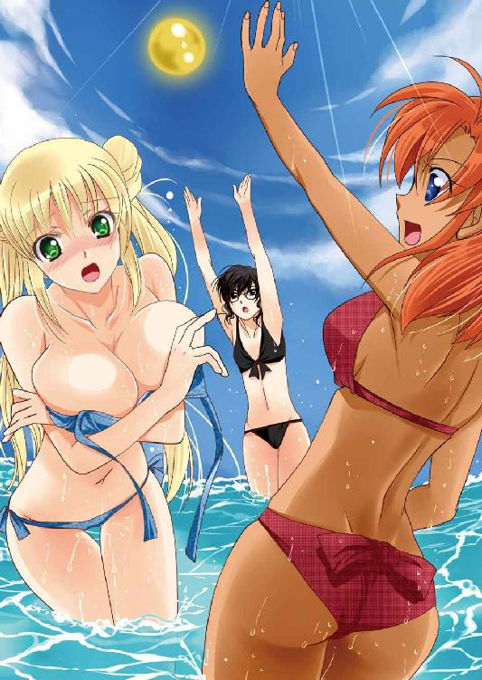
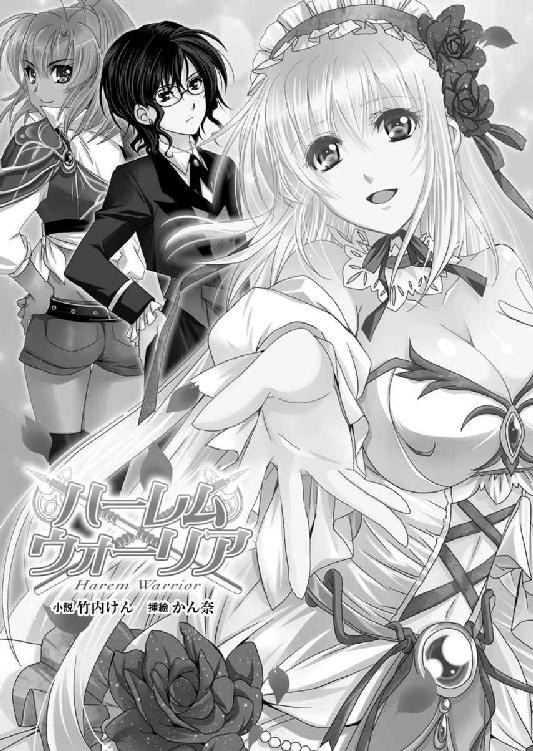
※本作品の全部あるいは一部を無断で複製・転載・配信・送信したり、ホームページ上に転載することを禁止します。本作品の内容を無断で改変、改ざん等行うことも禁止します。また、有償・無償にかかわらず本作品を第三者に譲渡することはできません。
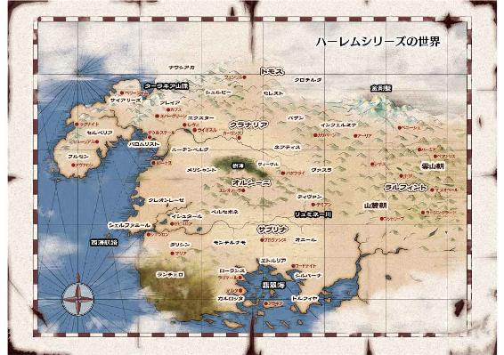
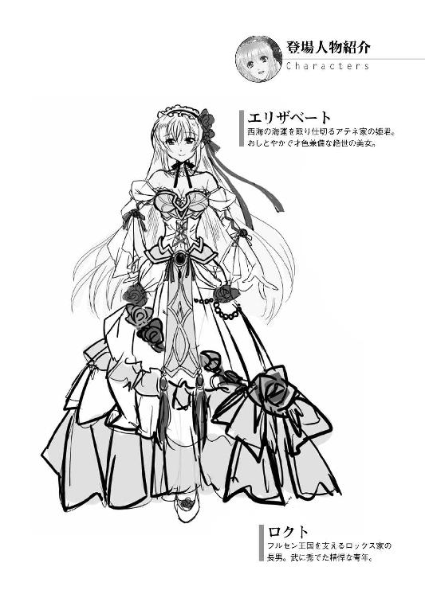
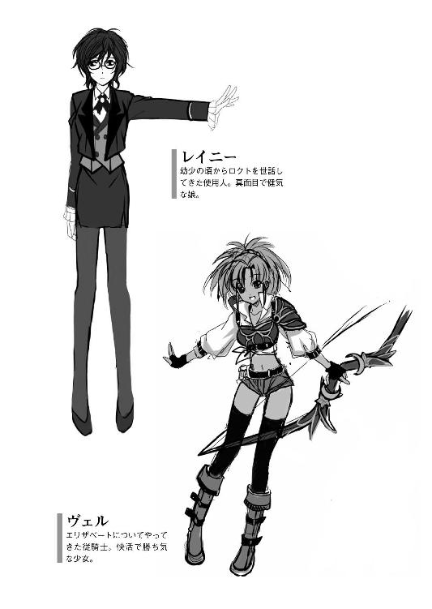
「近くフレイア王国に出兵する」
大陸の西の果てにある半島は、現在もっとも熱気のある土地柄といっていいだろう。
昨年、セルベリア王国からフルセン王国へと劇的な政権交代が行われ、その後、サイアリーズ地方で起こった反乱も一段落した。
そんな若き英雄王エルフィンの治める王城アヴァロンにて、御前会議が主催されていた。
出席したメンバーは国王エルフィン、筆頭家老ロックスをはじめ、サイアリーズ地方の顔役イルベルト、ブライザ。旧セルベリア派のヴァレリア、カーラ。フルセン地方の豪族マリオン。レジスタンス上がりのレイテという最高級幕僚の他、それぞれの副官が一人ずつ。
「おお！ 腕が鳴りますな！」
勇ましく賛同の声を上げたのは、背は高く、肩幅もあり、肌は浅黒く、雄偉な身体をした、見るからに武闘派の男だった。
筆頭家老ロックスの副官を務める、その長男ロクトであった。
さすがはフルセン王国の誇る軍神ロックスの跡取り息子だと、誰もが納得する容貌魁偉な豪傑である。
ロックスといえば、フルセン王国譜代の宿将だ。
フルセン王国が、セルベリア王国に滅ぼされる前からの家臣であり、エルフィンがお家を再興させる戦で、最前線で働き支えてきた。
まさにフルセン王国再興の第一の功臣であり、押しも押されもせぬ筆頭家老だ。
そんなロックスは、いわばエルフィンの教育係であったから、その子供たちはエルフィンと幼少のころから共に育ち、家臣というよりも、より身近な身内に近い感覚を持っている。
特にこの長男のロクトは二十二歳。エルフィンと年齢も近いこともあって、兄貴分的な役割を担い、政治戦争はもちろん、私的なことの相談に乗ることもある。
つまりは、エルフィンの側近中の側近であり、彼が賛同することは誰もが想像できたことだ。というより、彼の場合、事前に会議の内容を知らされていて、議題を盛り上げるためのサクラを意図的に演じていても不思議ではない。
実際、そういうサクラを演じなくてはやる気のない者もいるのだ。そして、予想通り懸念を表明する者もいる。
「新たな敵を求めますか？」
サイアリーズ地方の代表者格であるイルベルトが、諦めたように慨嘆した。
それを知恵者面したマリオンが窘める。
「停滞したら、我々は終わりですよ」
乱世の国家というのは、自転車操業である。
常に拡大していないと、内部崩壊を起こす。また、自分たちが止まっていれば、その分、周りの群雄が大きくなってしまって、より強大な危険が育つ可能性があった。
まして、現在、大陸は物凄い勢いで、再編がなされている。
北からドモス王国が勢力を伸ばし、南では二重王国が台頭し、東では古の超大国ラルフィント王国で権力の再構築がなされ、西では西国同盟なるものが出来つつある。
そんな中、北西の半島を統一したからといって安寧を貪ったのでは、いずれかの勢力に屈服するしか手はなくなってしまう。
その前に、とにかく力を付けられるだけ付けるしかない。
西方半島を統一したフルセン王国が次に目標とするのは、大陸への入口であるフレイア王国と決まっている。
他の選択肢はない。海を渡ってナウシアカ、バロムリストに攻め込むとなると、船で兵を送らねばならず、その手間暇を考えれば、険阻なターラキア山脈を越えるほうが現実的だ。
「出陣の時期は？」
そう質問したのは、エルフィンの女と名高い女将軍ヴァレリアだ。
彼女はセルベリア王国で最大の所領を預かるコンミュウス家の出自で、フルセン王国が滅亡した後のエルフィンは、一時この家で過ごした。
その結果、エルフィンとヴァレリアは深い関係となり、彼女の裏切りがセルベリア王国の滅亡に直結しているとも言われている。
そのような因縁からだろうか。彼女はエルフィンと地獄まで共に落ちる、という覚悟をしているようで、見ていると痛々しいような気迫を纏っている。
「この秋、刈り入れが終わったら、すぐにだ。ロックス、準備を頼む」
「承知。先陣は我らが承りましょうぞ」
重々しく頷いたロックスは、国家の重鎮というよりも、頑固な職人といった風貌であった。
頭は角刈りで、背はそれほど高いとはいえないが、肩幅があり、がっちり固太りしている。猪首であり、お世辞にも美男とはいえないが、圧倒的な迫力だ。
大工の棟梁とか言われたほうが、みな納得してしまう容姿であろう。
実際、この男は職人であった。それも名人といっていい。その技術が戦闘というだけに過ぎない。
その他、業務連絡が行われて、会議はお開きとなった。
（よし、やるぞ）
老齢なロックスはいわば飾りだ。準備に汗を流すのは、副官であり跡取り息子のロクトの仕事である。
血の気の多すぎる弟たちをこき使い、きたるべき戦に備えようと、心を逸らせているところに、立ち上がり退出しようとしたエルフィンが不意に立ち止まり、振り返った。
「あ、そうだ。ロクト」
「はっ」
「結婚しろ」
あっさりと命じられた国王陛下の言葉に意表を突かれたロクトは、思わず顎を出して聞き返した。
「......えっと、いまなんと？」
「お前もいい年だ。結婚してしかるべきだろう」
戦乱の時代というのは、死と隣り合わせであるだけに、みな総じて早婚である。二十歳を過ぎたロクトも、結婚してもおかしくはない。
ちなみにより年下であるエルフィンは、結婚こそしていないが、愛人は幾人かいる。
誰もが知っているヴァレリアの他にも、侍女ナターシャとの馴れ初めとかも、ロクトは間近に見ていた。
いささか困惑したロクトは、頭を掻きながら応じる。
「いや、結婚しろと言われても、こういうことには相手が必要でして......」
「相手は決まっている。アテネ城のエリザベート姫だ」
「っ!?」
ごく当たり前に言われて、ロクトは言葉を失う。
茫然としている側近に、若き国王はいささかしてやったりと言いたげな、意地悪そうな顔で説明する。
「アテネ城は予の母の実家だ。エリザベート嬢は予の従姉で、今年二十二歳。お前と同じ年だ。不満はあるまい」
「......」
突然のことに、ロクトが面喰らっていると、傍らのロックスが答えた。
「ありがたき幸せ。慎んでお受けいたします」
「うむ」
軽く頷いたエルフィンは今度こそ退席した。まさに業務連絡といった感じである。
重厚な扉が閉まる音で我に返ったロクトは、いささか血相を変えて父親に食ってかかった。
「ちょ、親父っ!? 何勝手に決めているんだよっ！」
「なんだ？ 異論があるのか？」
ジロリと一瞥されたロクトは反論の言葉を失う。
相手は主君の親族だ。それと縁戚になれるというのに、不満を言うようなことではないだろう。
しかも、主君のお声がかりである。不満を言ったら罰が当たるというものだ。
「いや、まぁ、そうなんだけど......」
理屈としては、断りようのないよい話だ。
「ヒューヒュー♪」
両手の人差し指と中指を口に突っ込んで、口笛を吹いてはやし立てたのは、灰褐色の長髪をした女将軍カーラだ。
彼女は、エルフィンの最愛の人ヴァレリアの親友である。セルベリア王国の屈指の名門貴族の出自だが、ヴァレリアとの縁から、エルフィンとも友好的な関係を築いており、彼女もまた祖国を裏切った。
エルフィンがヴァレリアと会う時には、よくカーラも混じっていたので、エルフィンの郎党であるロクトも自然と、彼女とは顔馴染みになっていた。
カーラはセルベリア王国の名門貴族であり、ロクトはエルフィンの陪臣に過ぎなかったが、年齢も近く、カーラが気さくな人となりであったこともあって、なんとなく軽口を叩きあうような関係ではある。
「おめでとうございます。ロックス家はこれからますます繁栄いたしますかな」
マリオンも如才なく祝ってくれる。
「うむ」
ロックスは満足げに頷く。
当事者であるロクトは、突然、降って湧いた話に困惑して、立ちつくすしかなかった。
※
「兄上......、おめでとうございます」
ロックスは、フルセン王国の譜代家臣の筆頭である。
領国の大きさでいえば、イルベルト、ヴァレリア、カーラに負けるが、名誉だけは一番与えられている。
その一つが、屋敷が国王に次いで大きく、王宮に一番近いところにある、ということだ。
父親と別れて自分の仕事を終えたロクトが自宅に帰ると、すでに誰が報せたのか、さっそく弟たちが寄ってきた。
礼儀正しく、しかし、朴訥に祝いの言葉を述べた次男のロベルトだ。
その剣術の腕前だけなら、フルセン王国随一で、ロクトですら一歩譲る。といっても、あくまでも剣術の話であり、戦闘になれば、総合力がものをいう。実際に戦えば、負けないという自信が、ロクトにはある。
そして、もう一つ。この次男が特異なのは、いまだかすり傷一つ受けたことがない点だ。
その強運と武勇を見込まれて、エルフィンの護衛を務めることもある。
ちなみにエルフィンが侍女ナターシャに手を出した時に、たまたま近習しており太刀を手渡したのは、彼である。もっとも、そのことは誰にも公言していない。見た目通り口の堅い男である。
「兄貴もいよいよ年貢の納め時ですね」
馴れ馴れしく寄ってきたのは、三男のロミオである。
華やかな軍服に、色とりどりの髪飾りを付けて、並の女よりド派手な装いをした十代の若者だ。
こういう奇抜な格好をして武勇をアピールする勇士を、俗にバサラという。
ロックス一党は、質実剛健を旨とした者が多いから、いささか浮いてはいるが、異様な風体も武勇があればこそ許される。
ただしこの三弟の手柄としては、セルベリア国王ジューザスの寵妃ベリオルウを誘拐したなどという、酷いものもある。
ロックスの三人の息子は、いずれも勇猛果敢さで知られた勇士たちだ。
戦場では常に危険な仕事を率先して務め、果敢に戦う。フルセン軍の槍といっていいだろう。
ちなみにロックスの妻にして、ロクトたちの母親も健在である。
国王エルフィンの母親は亡くなっているし、またエルフィンが結婚していないのだから、筆頭家老の妻である彼女が、フルセン王国で一番偉い女ということになる。
そのため王宮の女官たちを取り仕切る役回りを自然と押しつけられていた。
彼女の父親は有名な芸術家で、古典文学に通じ、詩吟の名手なのだという。
なぜに芸術家の娘と、武骨者を極めたような男が一緒になることになったのかは知らないが、子供を四人も作っているのだから、夫婦仲は円満なのだろう。
「まだ、気が早い」
弟たちにからかわれるのも面白くなく、ロクトはむすっとした表情で応じた。
しかし、それが照れ隠しであると受け取ったロミオは、構わず続ける。
「国王陛下のお声がかりだ。決まったも同然じゃないですか？」
「......」
まったくその通りだ。反論の言葉もないロクトは、玄関から応接間へと移動する。
「ところで、エリザベート姫とは、美人なんですか？」
「知らん」
居間に入り椅子に腰を下ろしたロクトは、太い腕を組んで表情で応じた。
「知らんって、顔も知らないのですか？」
呆れ顔のロミオを前に、ロクトは小首を傾げる。
「ああ、アテナ領主ってのは、辛うじて顔を合わせたことがあるが、その娘となると、皆目見当もつかん」
アテナ領主は、フルセン地方南の領主だ。
海運が盛んな家だと聞いている。エルフィンの母親の実家であるから、フルセン王国の再興戦には、率先して協力してくれた。しかし、なにぶん、海の一族であるから、船で物資を運ぶ後方支援が主であり、最前線のロクトたちとは顔を合わせる機会は少ない。
「それじゃ、せめて結婚する前に、アテナ城に顔を出したらどうですか？」
ロミオが軽く勧めるが、ロクトは首を横に振るった。
「そんな暇はない。フレイアへの出兵の準備をせねばならん」
「そんなの、俺とロベルト兄貴で代わりますよ。なぁ、ロベルトの兄者」
「ああ」
寡黙な次男も力強く請け負った。
しかしながら、ロクトは怒鳴りつける。
「うるせぇ、余計な気遣いだ。いずれ嫁さんになるってことは、毎日飽きるほどに顔を見ることになるんだろ。わさわざ会いに行く必要なんかねぇよ」
そんな長兄を、三弟は憐れむように宥める。
「兄者はほんと女心のわからないお人ですね」
「俺は硬派なんだよ」
居間に集まったむさ苦しい三兄弟が歓談していると、執事服姿の女性がトレイに三人分の珈琲を載せてやってきた。
ロクトの前の足の低いテーブルに、珈琲を置きながら、おずおずと祝辞を述べる。
「あの......このたびは結婚されるとのこと、おめでとうございます」
澄ました顔で完璧な給仕をする女の名前はレイニー。年のころは二十代の半ば。黒髪をショートにしているが、いささか癖っ毛。
背はひょろりと高い。顔立ちは端整であるが、やぼったい黒縁の眼鏡をかけており、なんとも地味な女である。
そんな召使いの女の顔をしばし見て、なんともいえない表情を作ったロクトは、珈琲を呷りながら、そっけなく答えた。
「ああ」
そんな微妙な空気を打ち破るように、馬のいななきに続いて、玄関が勢いよく開く音がした。次いでどたどたとした廊下を走る音とともに、騒がしい声が聞こえてきた。
「ロクトの兄者っ！ 兄者の嫁さんになるという、エリザベート嬢の情報を調べてきたぜ！」
居間の扉を大きく開け放って飛び込んできたのは、並の男よりも背が高く、全身にぴったりとした黒いスーツを纏った大女である。
「ロージー、廊下をドタドタと走るな！」
思わず叱責したロクトだが、その声はいささか甘い。
この娘はロクトたち三兄弟の妹でロージー。むさ苦しい兄弟の紅一点といえるのだが、いかんせん、兄たちの影響をもろに受けている。
子供のころから兄たちに負けまいと武芸に励んだ結果、戦場で長巻をぶん回す女傑が出来上がった。
「ちょ、兄貴、せっかく可愛い妹が、兄貴のためにいろいろ情報を集めてくれたんだよ。まずは聞こうよ」
三弟のロミオが窘める。
「お前らがそうやって甘やかすから、いまやこいつは、フルセン王国随一のじゃじゃ馬なんて呼ばれているんだぞ」
男三兄弟の妹である。否応なく兄たちに甘やかされるし、当然父親も甘い。お陰で、手の付けられないトラブルメーカーとなってしまった。
フルセン王家の譜代を強く自認して、旧セルベリア王国系の人々や、サイアリーズ一揆出身の人々を侮る発言を繰り返し、上にはかなり煙たがられている。
しかも、その威勢のいい発言が、フルセン譜代の家臣たちには支持されており、人気があるから、始末が難しい。
そこで懐柔を画策したエルフィンは、彼女を自らの親衛隊長としている。
目の届かないところで好き勝手騒がれるよりも、目の届く位置で鎖に繋いでおこうという判断だ。しかしながら、その副作用としてただでさえ高かったロージーの自意識は、さらに高くなってしまったようである。
「兄者、その話はまた別の機会に。それよりも、いまは兄者の嫁さんの話だ。せっかくいろいろ仕入れてきたんだよ。聞きたくないの？」
形だけとはいえ国王の親衛隊長である。その関係からいろいろと情報は入ってくるだろう。
「おうよ。まぁ、言ってみろ」
妹がいろいろ話したがっていることは、その表情からもわかる。
なんだかんだで、ロクトも妹には甘いから促した。実際、自分の嫁さんになるという相手に、興味がないわけではない。
「アテネ家というのは、海運の一族だな。主に西海航路の利権を握っている」
「それぐらいは知っている」
ロクトの相槌に、ロージーはここからが本番と言いたげに、テーブルに両手をついて身を乗り出しつつ、人の悪い笑みを浮かべる。
「といっても、セルベリア王国の統制が緩んでいたころには、実質、海賊みたいなもんだったらしい」
「海賊だぁ？」
海洋商人と海賊は、裏表の関係にあるものだ。
国の枷が緩めば、海賊が増える。海賊が増えればその対策に武装費をかけねばならず、利益は減る。利益がなければ海賊になる、というわけだ。
「エリザベート姫ってのは、自ら船に乗って暴れ回っていたらしい。地元じゃ知らない者のない鬼姫様だとさ」
「鬼姫......ねぇ」
フルセン王国で鬼の集団として扱われるロックス家である。思わず苦笑が泡のように弾けた。
ロージーは楽しげに両肩を揺する。
「くっくっくっ、大変なじゃじゃ馬だな」
「お前にだけはじゃじゃ馬と言われたくないと思うぞ」
「違いない」
その評価が嫌ではないらしく、ロージーは楽しげに笑った。
「でも、海の鬼姫だなんていいじゃないか。鬼のロックス家の嫁に相応しい。兄貴とも気が合うんじゃないか」
「そ、そうだな」
いささかフルセン王家とは疎遠になっていた貴族を取り込むため、また筆頭家老ロックスの家に格を付けるための政略結婚だ。
鬼と呼ばれようと、蛇と呼ばれようと、容姿など二の次である。
もともと断れるような話でもない。ロクトも腹を決めた。
「わかった。俺も覚悟を決めよう。鬼姫と言われるくらいなら、肝っ玉も据わっているんだろ。ロックス家の嫁として相応しいぜ。国王陛下も考えてくれたってわけだ」
「ウチは鬼みたいな野郎ばっかりだからね。それぐらいの玉じゃないと仕切れないさ」
ロージーは楽しげに笑い。二人の弟たちも「違いない」と大声を上げて笑った。
※
「少し風に当たってくる」
フレイア王国への出兵の準備に忙殺されるうちに、瞬く間に月日は流れて、ロクトとアテネ領主の息女エリザベート姫の結婚式の当日がやってきた。
結局、ロクトは一度も、花嫁となる女性と顔を合わせていない。結婚式の会場で初顔合わせということになる。
まさに政略結婚ならではであろう。
結婚式の主役は花嫁だ。新郎はその添え物でしかない。
一通り身支度を整えたロクトは、式典が始まるまでの間、暇つぶしを兼ねて一人で神殿の庭を探索することにした。
ロクトはこの結婚に、寸毫も期待していなかった。単なる公務という感覚だ。
花嫁の容姿にしても、なんら夢も希望も抱いていなかった。
（なにせ海の鬼姫だからな。ロージーも真っ青な筋肉女かもな）
会場は、当然、アヴァロン城下で一番大きく歴史のある神殿である。
かなり寂れていたが、今日、この日のために大急ぎで改修したらしい。
（これから出兵だというのに、他にやることはいくらでもあるだろうに......）
ちなみに設計に母方の祖父がかかわったらしい。
残念ながらロクトは、芸術家だという祖父の血が流れているとは思えない武骨者である。
芸術家らしい才能は、三弟のロミオに少しだけ受け継がれているといえるかもしれない。
（といっても、あいつのは無駄に派手なだけだからな。あんなのと一緒にされたら、爺様も怒るか）
苦笑しながら歩いていると、不意に頭上から声をかけられた。
「そこのでっかいの！ 邪魔っ！」
「なんだ？」
驚いて上を見ると、窓から少女が飛び降りるところであった。
ほとんど反射的に出したロクトの両腕の中に、すっぽりと女の子が入る。
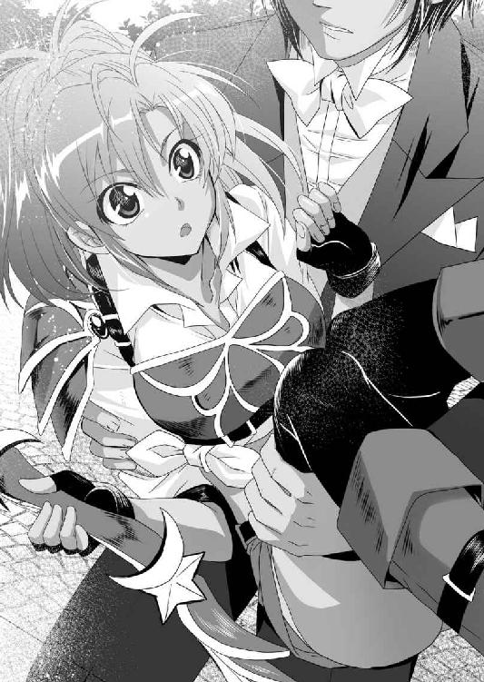
「おっと危ないな。なぜ階段を使わない？」
「ちょっと監視が厳しかったんでね」
ロックスの腕から飛び降りた少女は、軽く尻を叩いて小豆色のホットパンツを整えた。
白いワイシャツの腹部を縛って、腹を出し、健康的な臍を晒している。その上から左肩にのみ肩当ての付いた赤い胸鎧。これは弓使い用の鎧だ。当然のように大きな弓も持参している。
年のころは十代の半ば過ぎといったところだろうか。
オレンジ色の髪をポニーテールにし、蒼い活き活きとした瞳。顔は小さく、肩も女らしい華奢な感じで、女としては身長の高いほうだろう。肌は健康的に浅黒く日焼けしていた。全体に細身だが、引き締まっているというべきだろう。
見るからに元気が有り余っている娘であり、典型的な女闘士といった装いである。
「アテネ家の者か？」
簡単な推理である。
ここは結婚式にかかわりのある親族が出入りする場所だ。ロックス家の親族に、ロクトが見知らぬ顔があるはずがなく、知らない以上は花嫁方ということになる。
「まぁ、そんなところだ」
軽く流した少女は、じろじろとロクトを観察した後、権高に質問してきた。
「お前はロックス家の者か？」
「ああ」
ロックスの嫡男であるが、なんとなく言うことを躊躇った。
すると元気な娘は、質問を続ける。
「ロックス家のロクトってのはどんな男だ？」
「そんなことを聞いてどうする？」
まさに本人なのだが、相手が知りようはずがない。
なんとなくからかってみたい気分になったロクトは、わざと自らの正体を明かさずに質問を返してみる。
「それは決まっている。ボクに......いや違った、ボクが仕えるアテネ家の至宝エリザベート様に相応しくない男だったら、ボクが射殺す」
「おいおい、物騒だな」
苦笑したロクトだが、聞き逃さなかった。
（いま、「ボクに」って言ったよな。このお転婆娘が、エリザベートか！）
もうすぐ顔を合わせると思っていた花嫁と、思わぬ形でニアミスしてしまった、ということになる。
（まぁ、なんだ。鬼姫というわりには、普通に美少女だよな。うん、確かに貴族の姫様としては型破りか。性格も騒がしいというか、落ちつきがなさそうではあるがな）
いろいろと見極めながら、さすがに慎重になって応じる。
「勇敢な男ということになっているぞ。世間では」
「そんなことは知っている。もっと具体的なことを知りたい」
小生意気な女である。
「そ～だな......」
ロクトは腕組みをして考えた。
（さて、どう答えるべきかな？）
なんとなく真面目に応えるのも面白くなく感じる。やがて考えがまとまったロクトは重々しく口を開く。
「フルセン王国にあって人品ことに優れた美男子」
「いや、そんな社交辞令じゃなくて」
少女は言下に斬って捨てた。
結婚式当日の花婿である。褒め言葉が並んでも、信じる気にはならないのだろう。
「ほんと、輝くような美男子だよ。鬼のロックス党の跡取りだというから、ついついむさ苦しい男を想像しちまうだろうが、実際の彼は沈着冷静なまさに切れ者然とした男だ」
「へぇ......」
ロクトが大真面目に言うものだから、思わず少女は引き込まれる。そこにロクトがもっともらしく続ける。
「ここだけの話だけどな。なにせ美男子だから、女にもてるもてる。泣かせた女は数知れないぜ。まさに鬼畜ってやつだ」
「そ、それは本当かっ!?」
大変な裏話を聞かされたとばかりに仰天する少女に、ロクトはさらに調子に乗っていいかげんなことを吹き込む。
「ああ、誠実そうなのは表だけ、ほんと女ったらしのろくでなしだぜ」
「ぐぐぐぐ、殺す！ やっぱり、ぶっ殺す！！！」
オレンジ色のポニーテールを振り回して、少女が激怒していると、上のほうから声が聞こえてきた。
「あいつ、どこにいった！ あれほどフラフラするなといったのに！」
女の声なのにやたらとドスが利いておっかない声だ。
「や、ヤバイ。ちょっと、そこのお前、ちょっと壁に両手をつきなさい」
「ああ？」
なんだかわからないが、ロクトは言われるがままに、白い神殿の壁に両手をついた。
「ふんっ！」
謎の少女は駆けよってくると、気合いの声とともに跳ね上がり、ロクトの肩を蹴った。そして、軽やかに、二階の窓から神殿の中に消える。
（って、俺を踏み台にしたのか？）
ロクトは筆頭家老の嫡子である。知らないとはいえ、こうも粗雑に扱われたのは初めてだ。
（まったく、まさにロージーみたいな女だな。あれが俺の嫁さんになるのか......まぁ、悪くはないか）
もうすぐ結婚式である。自分の旦那との出会いが、このようなものだと知った彼女が、後でどのような顔をするか、ロクトは楽しみであった。
※
「国王陛下をはじめ、大勢の賓客がいらしています。しっかりしてくださいませ」
お転婆少女との邂逅を終えたロクトは準備室に戻った。そこで燕尾服の乱れに気づいた、家人であるレイニーが整える。
「レイニー、今回のことは......」
室内にはたまたまロクトとレイニーしかいなった。
いささか動揺したロクトが言い訳をしようとするのを、やぼったい眼鏡をかけた女執事は遮る。
「若様は筆頭家老の嫡子。しかるべき身分のお嫁さんをもらうのは当然です」
浮いた噂のないロクトであったが、成人男子である。ひそかに恋人はいたのだ。
ロックス家の奉公人として、ロクトの身の周りの世話をする使用人レイニー。ロクトより二つ年上の彼女こそ、ロクトの十年来の恋人である。
幼少のころ、ロクトは彼女の身体で異性に目覚め、好奇心の赴くままに彼女の身体を弄び、処女を頂き、童貞を捨てた。
そんな深い関係であるのにいままで噂にならなかったのは、彼女の完璧な振る舞いといささか地味な容姿のせいであろう。
二つ年上であるからか、ロクトに姉のような優しさを示した。
四兄妹の長男であるロクトにとって、彼女の存在は精神的な安らぎである。
「お前のことはちゃんと考えている。いずれ正式な側室にする」
ロクトとしては精いっぱいの誠意を見せたつもりだった。しかるに、レイニーの返答は予想外のものだった。
「いえ、もはやわたくしの役割は終わりました。奥方様を大事になさいませ。わたくしはお暇を頂こうと思っております」
「っ！」
思いもしなかった返答に、いささか唖然としたロクトだが、我に返ると激昂した。
「ダメだ。やめることは許さん。お前は俺のものだ。正室といってもどうせ形ばかりのものだ。相手は海の鬼姫なんて呼ばれている女だぞ。どうせ、ロージーをさらに煩くして、煩わしくしただけの女だ。俺が好きなのはお前だ。わかっているだろ」
王侯貴族の間では、公人として結婚し、私人として恋愛する、というのはよくある形である。
ロクトはそうするつもりでいたのだ。
「そのようなことを申してはいけません。相手は名門貴族のお姫様。国王陛下の従姉にあたられる方。そのような方とご一緒になられるのに、他の女に目移りするなど不敬です」
「この身体は俺のだ」
不意にロクトは、レイニーの胸を鷲掴みにした。
「あ」
小さな胸である。二十歳も半ばにさしかかった女としては、かなり粗末な代物だ。
しかし、ロクトには馴染み深い乳房であった。衣装の上から強引に乳房を揉みしだかれたレイニーは慌てる。
「な、何をなさるおつもりですか!? もうすぐ式が始まるのですよ」
「そんなの知るか！」
激情のままに吼えたロクトは、逃げようとするレイニーの両腕を左手で捕まえると、頭上に掲げた。
「ああ」
ロクトは国一番の勇士とも言われるような大男である。そんな男に捕まって、女執事が逃れることなどできようはずがない。
「お前が二度と、俺のもとから離れるなんて、考えられないようにしてやる」
荒々しく宣言したロクトは、レイニーの執事服の胸元を強引にはだけさせる。
紺色のベストの下には、白いドレスシャツ。その下には白いシンプルなブラジャーを付けていた。
それをはだけると、華奢な男と見紛うような薄い胸板があらわとなる。
頂を飾る乳首も小さくて、赤黒い。
その決して、人並み外れた造詣とは言いかねる乳房に向かって、ロクトは吸いついた。
「いけません、若様。......ああ♪」
小さな胸は敏感だ、という俗説があるが、レイニーの乳首は実に敏感であった。
男に強引に吸い上げられると、もはや抵抗することができなくなってしまう。
強く吸うと口内で、小さな乳首が硬く尖る。
尖った後も執拗に吸い上げていると、自然とレイニーの呼吸は甘く蕩けてきた。
「ああ......ああ......ああ......」
本人の意思とはかかわりなく、肉体のほうが男に弄ばれることに慣れてしまっているのだ。
ころはよし、と判断したロクトは、レイニーの乳首から口を離すと、一纏めにしていた女の両手を扉に押しつけた。
そして、自らは背後に立ち、執事用の紺色のタイトなミニスカートの裾に手をかけると、強引にたくし上げる。
「あっ、いけません。このような場所でそのようなことはっ!?」
しかし、口とは裏腹に決してロクトに逆らわないのが、レイニーという女である。
タイトなミニスカートは腹巻き状にされて、紺色のパンストに包まれた尻があらわとなる。薄い布越しに白いショーツが透けて見えた。
そして、屈み込んだロクトは、パンスト越しの股ぐらにじわりと沁みが広がっていることを発見する。
「なんだかんだ言っても、もう濡れているじゃないか」
意地悪く笑ったロクトの右手の人差し指が、ぐいっと沁みを押した。
「それは若様がこのようなことをなさるから......はぁん♪」
男の太い指が、パンストとショーツを巻き込んで、膣穴に強引に押し入ったのだ。
レイニーは小さな尻をプルプルと震わせて、膝をガクガクさせているが、健気に扉にしがみついて耐える。
「そうだ。この身体のことは俺が誰よりもわかっているんだ」
嘯いたロクトは、紺色のパンストを膂力に任せて破いた。
白いショーツがあらわとなる。
シンプルだが、お洒落な下着だ。常に男にやられることを意識した女ならではの下着であろう。
ロクトはその下着をぐいっと、太腿の半ばまで引きずり下ろす。
小さな白い尻だ。肛門もこぢんまりして、青っぽい菊花状だ。
膣穴に押し込まれていたショーツが抜けて、ヌラヌラヌラと糸を引いた。
「くっくっくっ......オマ○コがパクパクして、誘っているじゃないか。お前のオマ○コが俺に犯されたがっているぞ。このオマ○コは俺専用のものだからな」
黒い陰毛に彩られた女性器は、細身の身体とは不似合いに、小陰唇が大きく発達し、そのうえ灰色がかっていた。それはまさに男に犯されまくって、鍛えられてしまった女性器、といった卑猥さがあった。
「......くぅ」
やぼったい眼鏡の奥の瞳を濡らす女の後ろで、ロクトはズボンから逸物を取り出した。
さすがは若き豪傑の逸物と、誰もが納得する雄大な巨根であった。
「そんないけません。結婚式の当日に、花嫁と会われる前に、わたくしなどとまぐわってはっ！」
そのあまりの反社会的な行為に恐れおののいて逃げようとする女の尻を捕まえて、ロクトは逸物を添えた。
「かわらん。どうせ形だけの花嫁だ。俺の本当の花嫁はお前だからな」
「そ、そのようなことを言ってはいけません......ああ」
必死に制止を求めるレイニーの嘆願など無視して、ロクトは自らの逸物を、力強く押し込んだ。
ズブ、ズブズブズブ......。
「あ、ああ、ああ......」
すでに幼少のころから、若様の異性に対する好奇心の対象として、何百回、いや何千回と犯されてきた身だ。
逸物をぶち込まれたら最後、牝としての本能が呼びさまされる。そのように調教されてしまっている哀れな女だ。
よく濡れた膣洞が、キュッキュッと肉棒に絡みついてくる。
「いい締まり具合だ。まさに俺のオマ○コだな」
左の耳元で囁いたロクトは両手を腋の下から入れると、レイニーのあっさりとした膨らみを手の中に包み、シコリ立っていた乳首を扱きたてる。
「く、くぅぅぅ......」
顔を真っ赤にし、眼鏡の奥で涙を流して悶絶するレイニーだが、必死に喘ぎ声を上げまいと努力しているところが、レイニーのレイニーたる所以であろう。
決して、若様の迷惑にはなるまいと、自らに誓っているのだ。
しかし、そのような気遣いがかえって、男の獣性をあぶる。意地でもレイニーの理性を崩壊させたくなる。
ズコ、ズコ、ズコ、ズコ......。
太い逸物が、さながら破城槌のように、女の最深部を突きまくる。
「ひぃ、ひぃぃ、ひぃ......」
結婚式の当日に、花嫁以外の女とやる。それは確かに人倫に悖る行為であろう。しかし、それだけに興奮するというのも、また人であった。
ドンドンドン！
不意に待機室の扉が外から叩かれた。
さすがに驚くロクトと、身を固くするレイニーをよそに、ロージーの怒った声が聞こえてくる。
「兄貴、何やっているの、もうすぐ始まるよ」
「ちょっと待ってくれ、もうすぐ終わるから」
怒鳴り返しながら、ロクトは腰を使い続ける。
「うぐ、うむ......うむ......」
若様に決して迷惑をかけないと心に誓っている女は、必死に喘ぎ声を我慢しながら訴える。
「若様。式が始まってしまいます。早く終わらせてください」
「ダメだ。お前が俺の女で、生涯、俺の側から離れないと誓うまでやめるつもりはない」
「そ、そんな......無体な、ああん......」
扉にしがみつき、尻を突き出した女執事は、涙を流しながら首を横に振るう。
「無体なものか、こんなに慕っている男を捨てるという女のほうが無体だろ」
「そ、それは......、しかし、側室が欲しいならば、もっと若く美しい女を、こんな凡庸な容姿で、しかも年上の女に執着されるなど、若様の沽券にかかわります」
レイニーはいろいろと無駄なコンプレックスを抱えた女である。
背が高く、胸は小さく、身分も低い。髪は癖っ毛だし、顔だって十人並だ。そんな自分が、ロクトの寵愛を受けることに、恐れと違和感を抱えていることは昔から承知していた。
「俺がいいと言っているからいいんだよ。さぁ、早く誓え。あんまり時間をかけると、それこそロージーが乗り込んできて大騒ぎになるぞ」
この脅しは、健気すぎる女であるレイニーには効いた。
「わかりました。若様の側にいます。ずっといます。ですから、早く終わらせてください......あぁ」
「よし。誓ったな。生涯俺の女だからな」
満足のいく答えをもらったロクトは、腰の動きを一気に速くした。
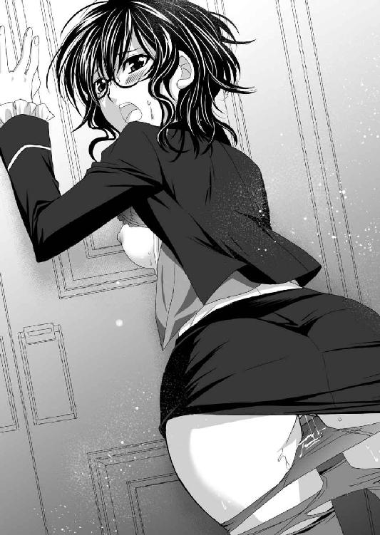
ズンズンズンズン。
国士無双の豪傑の荒腰である。
「ああ、うむむむむ......」
左腕で上体を支えながらレイニーは、右手で口元を必死に押さえる。
口を閉じることによって、なぜか膣洞までギュッと締まってきた。
「くっ、いくぞ。そんなに正室が気になるなら、正室より先に孕んじまぇ」
「そ、そんないけません！」
横暴すぎる花婿の愛人は、驚き悲鳴を上げたが、もはやことは遅きに失している。
ロクトは逸物を最深部に押し込んで、子宮口を押し上げながら射精した。
ドビュッ！ ビュビュビュ───ッ！！！
「ああ......！！！」
ビク、ビクビクビク。
華奢な肩を震わせながら、断末魔の悲鳴を上げてレイニーはのけぞる。
男の欲望を心行くままに注ぎ込んだロクトが逸物を引き抜くと、レイニーはずりずりと扉に這いながら、その場にへたり込んだ。
ヒクヒクヒク......。
白く小柄な尻が痙攣し、白い液体を溢れさせていた。
そのすっかり脱力しているさまは、まさに身も心も犯された女、といった風情であり、ロクトの男心を大いに満足させた。
「わかったな。お前が俺のもとを離れるなんて絶対に許さないからな」
「......」
「俺はこれでも、大貴族の嫡子だぞ。側室を抱えて何が悪い。......まぁ、貴族云々はともかく、何があっても、俺はお前を守ってやる。それぐらいの甲斐性は期待しろ」
ことを終えたロクトが逸物をしまおうとすると、惚けていたレイニーそれをは止めた。
「お待ちください。そのままでは......」
ロクトの前に跪いたレイニーは、男と女の体液ですっかり汚れた逸物を、口に含んで丁寧に舐め清める。
いわゆる『お掃除フェラ』をしてくれたのだ。
それを終えてから、再びロクトの着付けをしなおす。どこまでも出来た女である。
※
「では、ロックス家の息子ロクトと、アテネ家の息女エリザベート姫の結婚式を始める」
会場には多くの参列者がいまや遅しと待っていた。
なにせ筆頭家老の跡取り息子と、国王の従姉の結婚式である。
近く行われるフレイア出兵の景気づけという意味もあり、盛大な規模で挙行されることになった。
参列者は、国王エルフィンを筆頭に、イルベルト、ヴァレリア、マリオン、カーラ、ブライザ、レイテという最高級幕僚がずらりと勢ぞろいである。
「......大事だな」
好きな相手と結婚するわけでもないロクトとしては、たいして嬉しくもない行事だったが、その壮大さには呆れた。
その呟きを聞き咎めた花婿の父親がニヤリと笑う。
「そりゃ、筆頭家老の嫡男の結婚式だぜ。大事だよ」
ロックスも一応、燕尾服を着ているが、これがしみじみ似合わない。
（やっぱ親父には鎧兜だな）
そんな感想を持ちながら、ロクトは憎まれ口を叩く。
「立派な跡取り息子の晴れ姿を見たんだ。いつ死んでも後悔はないな」
「馬鹿、お前らは適当にやっとけ。俺は若の子供が成人するまで死なねぇよ」
「息子より、主君かよ」
呆れて吐き捨てるロクトに、ロックスは真顔で応じる。
「当然だ。俺の息子なら、自分の子供より、主君を大事にしろ」
「わぁっているよ。俺らはフルセン王国の犬だ。主君のために死んでこそ本懐よ」
「その通りだ」
そんな殺伐とした親子の会話を他所に、烈光神社の神父やら、朱雀神殿のシスターなどが一生懸命に儀式を進めてくれている。
やがてアテナ領主に手を引かれて、しずしずと白いドレスの女が、ベールをかぶってやってきた。
義父となる男には、いかにも海の男といった精悍さが感じられる。
（なかなか強そうなおっさんだ。これなら義父と酒を飲むのも楽しいか。そして、これが俺の嫁さんになるのか......）
花嫁装束というのは、やたらとゴテゴテしている。
顔にはベールがかけられていて、中身を窺うことができない。辛うじて口元が見える程度だ。
そこにも白粉がたっぷりと塗られており、白い顎から頬のライン、そして、赤い唇などお人形のようで、原型を留めていない。
（化粧ってのは凄いな。女は化けるっていうが、もう面影なんてないじゃないか）
ロクトの頭の中にある、あの謎の元気娘の次女との雰囲気の違いに驚いた。
（まぁ、驚いているのは向こうも同じか。せっかく取り繕った格好をしていても、もう地がバレている、と知って慌てているだろうな）
相手の心境を忖度して、一人ほくそ笑んでいると、神父が命じた。
「では、誓いの口づけをお願いいたします」
言われた通り進み出たロクトは、花嫁のベールを上げた。この時、ロクトが初めて、自分の嫁さんの顔を見た。
「っ!?」
絶句した。
そこにあったのは、プラチナブロンドの髪。雪のように白い肌。切れ長の目元に、けぶるような睫毛。その奥で輝く緑の瞳。すっと通った鼻梁に、薔薇の花弁のような赤い唇。
清楚で上品な怖いくらいの美貌があった。超絶美女とはまさにこれであろう。
ロクトは美人といわれる女の顔は見慣れていた。例えば主君エルフィンの愛人たちはいずれ劣らぬ美女たちである。
しかし、その女たちに比べて勝るとも劣らぬ美貌であった。
いや、普遍的な美という意味では、こちらが勝るかもしれない。
まるで美を司る女神のような美貌だ。
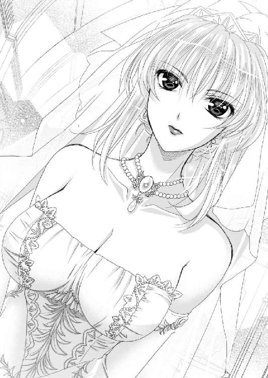
とてもではないが、中庭で会った、元気娘とは似ても似つかない。化粧云々のレベルではなく、完全に別人だ。
（えっ、ちょっと待て、鬼姫だろ。なんでこんな美人なんだ。もしかして偽物？）
事前の情報とは対極にいるような女を前に、度肝を抜かれたロクトはあたりに目を泳がせた。
すると客席の中、あの元気娘の顔があった。
彼女も、おめかしして座っているが、真っ直ぐに食い入るような眼差しでロクトの顔を見ている。
どうやら、中庭での出会いを覚えており、騙された、と怒っているようだ。
（ということは、あいつがエリザベートの従者というのは本当のことで、この女が本物のエリザベートか？）
わざわざ結婚式の花嫁に替え玉を出す必要はないだろう。
（鬼姫という噂はどこからきた？）
鬼姫などという例えには、およそ似つかわしくない。底冷えがするほどの美貌に度肝を抜かれたロクトが硬直していると、神父が軽く咳払いをした。
客席からカーラが冷やかし声を張り上げる。
「おいおい、どうしたロクト。いまさら怖気づいたか？ それとも嫁さんがあんまり美人で、見惚れたか」
「あはは♪」
どっと会場全体が笑いに包まれて、赤面したロクトは、思わず小声で呟いてしまう。
「いや、でも、鬼姫って......」
「なんのことでしょう？」
花嫁のほうはニコリともしない。澄ました顔を崩す気配もない。
その完璧な美貌は、いささか非人間じみており、人形かと思えるほどだ。
事前の予想や思い込みを、完全に裏切られたロクトであったが、それを抗議するのは、お門違いというものだろう。
「それでは......」
気を取り直したロクトは、花嫁に顔を近づける。
美しすぎる花嫁は、そっと目を閉じて花婿を迎えた。
ぷに......。
唇と唇が軽く合わさる。
ツルリとした感触であった。
「おおおおお」
客席では三弟のロミオが、無駄に煽っている。
ロクトが唇を離すと、エリザベートはそっとベールを戻した。
そして、立会人の代表として、国王エルフィンが進み出る。
「ロクト、エリザベート。二人の結婚を、予がしかと見届けた」
パチパチパチパチ。
会場は万雷の拍手に包まれた。
「いや～兄貴、綺麗な嫁さんでよかったね」
壮麗で盛大な結婚式が終われば、次は騒がしい宴席が始まる。
西方半島は、大陸の離れであるし、辺境と思われることが多い。まして、新興のフルセン王国など、文明の後進国の最たるものだ。そして、その評価はあながち間違ってはいない。洗練された文化などとは無縁であり、国王のエルフィンからして、ざっくばらんに家臣と混じって騒いでいる。
たちまち無礼講となり、雛段のロクトのところに、妹のロージーがやってきた。
思わずロクトは、左手に楚々として佇む花嫁を横目で見ながら、妹にねじ込む。
「海の鬼姫って話はどこいった？」
ロクトの横にいるのは、鬼らしい雰囲気なんかどこにもない、上品極まるお姫様である。
「いやぁぁぁ～、ちょっと情報に間違いがあったみたいだな、あはは♪」
義姉となった女性を横目でチラリと見た、ロージーは笑って誤魔化す。
所詮妹などというのは、こういうものだ。
使えない妹を前に軽く溜息をついていると、不意に物凄い勢いで詰め寄ってきた少女がいる。
「お前っ！ ボクを騙したなっ!?」
それはオレンジ色の豊かな髪をポニーテールにした全身の元気が有り余っている少女であった。
一目見て何を怒っているのかわかったが、ロクトは素知らぬ顔で応じる。
「なんのことだ？」
「すっとボケたってダメよっ!?」
怒り心頭といった感じの小柄な少女は、テーブルに両手をついて叫んだ。
「何が、フルセン王国にあって人品ことに優れた美男子よ。よくもまぁ、そんなウソをいけシャーシャーと吐けるものね。まんまゴリラじゃない。おかげでボクは大恥よ。姫様にウソの情報を流してしまったじゃない!? どうするんだよ、ボクに対する姫様の評価だだ下がりじゃないか！ 姫様すいません。こいつです、こいつがボクを騙したんです」
元気娘はロクトを左手で指差したまま、盛大にポニーテールを振り回して、花嫁に向かって頭を下げる。
「よいのですよ」
花嫁はしっとりと、菩薩のような笑顔で応じたが、なぜか男勝りの少女はビクッと引きつったような笑顔で、半歩退く。
この娘、粗暴に見えて、主人を思う気持ちは本物のようだ。ロクトも悪戯が過ぎたと思って笑いながら謝罪する。
「わかった。悪かった。悪かったよ。ところでお前は誰だ？」
この娘こそエリザベートだと思い込んでいたロクトは、彼女の名前も知らない。
それと悟った少女は、両手を腰にやって胸を張る。
「ボクはヴェル。エリザベート様の従騎士だ」
「ほぉ、ということはお前も、うちに来るのか」
身を乗り出したロクトの質問に、同じく顔を近づけたヴェルは挑発的に笑う。
「ええ、エリザベート様をお守りするのがボクの役目よ。エリザベート様の面子を潰すようなことがあったら、ボクが許さないんだからね。矢で射抜くからね。覚悟なさい！」
「はいはい」
ロクトは軽く流そうとしたのだが、喰いついた女がいる。
「へぇ♪ 武勇でなるロックス家に来て、それを言おうってか」
見知らぬ少女と兄のやり取りを黙って見学していたロージーである。
「何、文句あるの？」
ヴェルも負けじと喧嘩腰で応じる。
「うちの兄貴は、そりゃ見た目はただの脳筋だけど、結構凄いのよ。それにロックス家はフルセン王国の譜代筆頭なんだからね。あんたもそれなりの格式ってやつを」
「何をぉ!? アテナ家は国王様の母君の実家だぞ。頭が高いってなもんよ」
ロージーとヴェルが顔を近づけて、いがみあう。
「兄者。国王の縁者だからって遠慮することはないぞ。我々ロックス家は国王陛下のために矢玉の飛び交う中を命がけで働いてきたんだ。こういうことは最初が肝心だ。ガツンとやってしまえ」
「何ふざけたこと言っているのよ。エリザベート様は海の女神も嫉妬するんじゃないかっていう絶世の美女よ。それがこんなゴリラみたいな男の妻になるなんて、それだけであり得ない状況でしょ。姫様、いまからでも遅くないですよ。逃げましょう。こんな筋肉バカ、エリザベート様に相応しくありませんよ。まるで美女と野獣です。船に乗ってしまえばこっちのものです」
「ああ、行っちまえ行っちまえ」
無駄に煽っているロージーの顔に向かって、ロクトは無言でテーブルにあったケーキを掴み投げつける。
ベチャ！
「うわ、なにすんのさ！」
生クリーム塗れになったロージーは激怒するが、それを上回る怒声をロクトは浴びせる。
「お前はだれかれ構わず喧嘩売ってんじゃねぇ！」
「だって、こいつが生意気なんだもん」
兄貴に叱られたロージーは不貞腐れた。それを見たヴェルが揶揄する。
「や～い、怒られた♪」
そこに静かな声が浴びせられた。
「ヴェルさんもいいかげんにしましょうね♪」
上品に微笑みながら窘めたのは、雛段にあってロクトの左隣に座っていた花嫁である。
ビクッ。
声色は優しく、顔も笑顔なのだが、それを見たヴェルは、異常なほどに顔を引きつらせる。
「すいません。調子に乗っていました！」
野生児そのままに見えるヴェルだが、エリザベートには絶対服従のようである。
ヴェルとロージーはまだ喧嘩をし足りないようだが、どうもここではまずいとお互いに悟ったらしい。
素直に反省するようなふりをして頭を下げながら、横目で睨みあう。
「ふん」
目が合うと同時に同世代の少女たちは互いに鼻を鳴らして、そっぽを向いた。
※
騒がしい披露宴も終わった。
賓客の皆さんは、それぞれ帰宅の途に就いたが、新郎新婦にはもう一つ行事が残っている。つまり、初夜だ。
風呂に入って身を清めたロクトが寝室に入ると、黒い執事服のレイニーがベッドメーキングをしていた。
「レイニー......今日はその......」
長年付き合ってきた男が、他の女と結婚して、その初夜の床を整えるというのは、どういう心境なのか、今一つわからない。
なんとも気まずく、どう言葉をかけていいものかわからないロクトに、レイニーはさばさばと事務的に応じる。
「若様、奥方様は大事に扱ってくださいね。あの方はどう見ても初めてです。初めての時、女はいろいろと不安なのですよ」
「ああ、わかっている」
ロクトは言葉少なく応じると、レイニーはにっこりと笑顔を浮かべて丁寧に一礼する。
「それでは失礼いたします」
レイニーが退出し、一人になったロクトは、部屋にあった椅子に腰を下ろし、背もたれに身を預け、天井を見上げながら溜息をついた。
「はぁ......」
政略結婚であるし、鬼姫などと言われる女の容姿は期待していなかった。
どんなブスでも問題ないと思っていたのに、現れたエリザベートは覚悟とは正反対。想像を絶した美貌であり、見るからに深窓の令嬢である。
（正直、ヴェルが嫁さんであったほうが気楽であったな。あんな、お上品な女を、どう扱っていいかわかんねぇよ）
途方に暮れているうちに、部屋の扉がノックされた。
今夜、この部屋に来る者は一人しか考えられない。
「どうぞ」
呼びかけに応じて、重厚な扉が開く。
「失礼します」
しずしずと入ってきたのは、当然、白無垢姿のエリザベートだ。
入口にて立ち止まったエリザベートは、スカートの裾を両手で持って丁寧に頭を下げる。
「アテネ家の娘エリザベートと申します。ふつつか者ですが、これから末長く、よろしくお願いいたします」
「ああ、こちらこそよろしく頼む」
相手の慇懃さに驚いたロクトは慌てて椅子から立ち上がり、いささかキョドリながら応じる。
「......」
向かいあう二人の間になんともいえない間ができる。
「まぁ、なんだ。とりあえず、こちらにきて座れよ」
「はい。失礼します」
花嫁衣装の女は、しずしずと歩を進めて、ロクトの勧めるソファーに腰を下ろした。
そして、俯き加減に押し黙る。重苦しい雰囲気に耐えかねたロクトは無理やり口を開く。
「......今日はご苦労だった。ロックス家は暑苦しいやつらばかりだからな、疲れたろ」
「いえ、そのようなことはございません」
エリザベートは静かに首を横に振るった。しかし、そのちょっとした仕草にすら気品が感じられる。
「......」
それっきり、またも会話が途切れてしまった。
武骨な男と上品な女。いったい会話をどう広げていいのかわからない。
まさに淑女。お上品に過ぎて、扱いに困る。
不意に小さなテーブルに、葡萄酒が置かれていることに気づいた。どうやら、レイニーのやつが気を利かせて用意しておいたらしい。
「酒でもどうだ？」
「頂戴いたします」
ロクトがボトルを傾けて、クリスタルグラスに赤ワインを注ぎ差し出すと、両手で杯を持ったエリザベートは、一気に呷る。
「お、いける口か？」
「いえ、お恥ずかしい」
頬を赤くしたエリザベートは俯く。
そして、また沈黙である。
息苦しい雰囲気に耐えかねたロクトは、強引に話題を探した。
「えっと、お前の連れてきた従者。ヴェルといったな」
「輿入れ早々粗相をしてしまい申し訳ありません」
丁寧に謝罪するエリザベートを、ロクトは止めた。
「いや、謝る必要はねぇよ。ロージーとはいい友達になれるんじゃねぇか。うちの妹は男臭さ１００パーセントの中で育ったからな。同世代の元気娘がいると嬉しいんじゃないか」
「そうですね」
一生懸命に話題を探して話すロクトに、エリザベートは優しく微笑み、相槌を打ってくるだけである。
（うわぁ......、話がはずまねぇ......空気が重い。このお嬢様をどうしたらいいんだ。って、花婿と花嫁が、どうせやることは決まっているか）
いいかげん面倒臭くなってきたロクトは、ことを強引に進めることにした。いきなりエリザベートの腰に腕を回して横抱きに抱え上げたのだ。
「あっ」
いきなりお姫様だっこされたエリザベートは、さすがに驚愕の表情を浮かべる。
「武骨な男で悪いな。気の利いた言葉が思いつかん。ここからは夫婦らしいやり方で、親睦を深めるとするか？」
「......はい」
けぶるような目元を伏せて静かに応じたエリザベートは、素直にロクトの胸に顔を埋める。
（意外と重いな。見た目に反して、大柄で骨格はしっかりしているのかも）
そんなことを考えながら、部屋に供えられていたベッドに運ぶと、そこにエリザベートを寝かしつける。
ロクトは有無を言わさずに覆いかぶさると、その薔薇の花弁のような唇を奪った。
「う......うう......」
瑞々しく柔らかい唇だ。
結婚式で行った唇だけが触れる接吻ではなく、唇を擦りあわせながら、じっくりと貪ることにした。
舌を出し、ぷるんふるんの唇を舐め回し、狭間から入れる。
前歯を舐め、さらに奥に、丸まっていた舌を搦め捕った。
「うむ......」
男が覆いかぶさる形であるから、唾液が流れ込んでいるのだろう。エリザベートは驚き抵抗しようとしたが、ロクトは強引に押さえ込む。
長い接吻を終えてから、顔を上げた。そして、エメラルドグリーンの瞳を覗き込む。
「怖いか？」
「いえ」
気品溢れる眼差しで男の瞳を見つめながらエリザベートは首を横に振るう。その迫力に気圧されたロクトは頬を指で掻きながらさらに質問する。
「え......っと、それじゃ、その......こういうことは経験あるのか？」
「いえ、すべて旦那様にお任せするようにと申しつかっております」
「まぁ、そうだよな」
やっぱり処女か。なんか面倒臭いな、と感じてしまった。
造形美としては完璧な美貌を誇り、王家の血筋を引き、貞淑ときている。非の打ちどころが無さすぎて、気後れしてしまう。
しかし、そう思われるのも、男として癪に障る。
（ええ～い、ままよ。なら、もう好きにさせてもらおう。どうせ、女なんて一皮剥けばみんな同じだろ）
半ば自棄を起こしながらロクトは覚悟が決まった。
従順な女の白いドレスの胸元をはだけさせる。
「ああ......」
中にはハーフカップの白いブラジャーがあった。胸元を美しく見せるための女の知恵というものだろう。
そのブラジャーをむしり取ると、ぷるんっと白い双乳がまろび出た。
エリザベートは慌てて両手で胸元を隠す。
「あ、灯りを......消してくださいませ」
「イヤだめだ。俺の花嫁となる女の隅々まで知りたい」
恥じらうエリザベートの手首を握ったロクトは力任せに、頭上に上げさせた。
「ご無体な......」
両手を頭上の枕に乗せたエリザベートは、腋の下を晒した姿勢で、こんもりと膨らんだお椀型の乳房が、魔法光にさらけ出される。
腋の下は綺麗に処理されていて、毛根の欠片も見当たらない。
そして、乳房は、まさに水蜜桃という例えに相応しい果実であった。
仰向けになってもいささかも型崩れしない。
かぶりついたら、甘くジューシーな果汁が溢れてくるのではないか、と思える乳房だ。
その頂にはルビーレッドの乳首が輝いている。
思わず凝視するロクトに、エリザベートは不安そうに質問する。
「いかがいたしましたか？ わ、わたくしの身体、変ですか？」
「い、いや、その......あんまり、綺麗で驚いた」
見惚れていたと思われるのもなんだか恥ずかしいロクトは、ぶっきらぼうに答えた。
「ありがとうございます......」
これだけの美貌を誇りながらも、不安があったのか、エリザベートは嬉しそうに頬を染める。
その女らしい表情に一瞬、魅せられたロクトだが、そう悟られるのが気恥ずかしく、そのまま左の乳房に顔を埋めた。
「ああ」
夫に組み敷かれた花嫁は、驚愕の声を上げる。
顔に感じる乳房の感覚は、たゆんとしたしなやかさ。
物凄く柔らかいのに、型崩れしないという驚異の乳房だ。
「チュ───ッ」
ロクトは砂漠で喉の渇いた旅人が、水を求めるかの如く、美しい乳首を吸ってみた。
果汁は溢れてこなかったが、目に見えない男を惑わす謎の物質は出ているようだ。
「ああ、そんな、強く、吸われて、は......ああ」
初めて乳房を吸われた女は、戸惑い、混乱していたようだが、やがて乳首が硬くなってきた。それでも構わず吸い続けていると、やがて女は甘い声を出し始める。
「あ、なに、これ、ああ、そんな......変、わたくしの身体、変になってしまう」
惑乱の声を上げる新妻の姿を、ロクトは冷静に観察する。
（なるほど、お上品な女でも、乳首を吸われると感じると見える......）
美しすぎてどこか人形めいた女が乱れていることに気をよくしたロクトは、左右の乳首を交互に吸った。
執拗に舐めしゃぶられたルビーレッドの両乳首は、男の唾液に濡れ輝き、ビンビンにシコリ勃ってしまう。
「ああ......」
乳首を男に陵辱される感覚に支配された女は、やがて抵抗する気力を失った。腕からも力が抜けたことを見て取ったロクトは、両腕を解放し、乳首からも顔を上げた。
「ふぁ......」
エリザベートが安堵の溜息をついたのもつかの間、ロクトはその下半身を持ち上げた。
「キャッ」
驚きの悲鳴を上げるエリザベートの下半身が高く掲げられ、白いレースの幾重にも巻かれたスカートがまくれた。
白いストッキングに包まれた二本の足を左右に豪快に開かせる。
いわゆるマングリ返しの姿勢だ。
エリザベートは白いスカートの下に、白いストッキングを穿き、白いガーターベルトで吊るしていた。その奥に白いショーツが穿かれている。いずれも白絹であろう。
ロクトの目の前には、白いトリプルレースのついた豪華なショーツの股ぐら部分がきた。
（こんなお上品な顔していても、濡れるんだなぁ）
総レースの上品な白いショーツの中心に、ポツンとした沁みができていた。
そこを指で優しく撫でる。
「ああ......」
エリザベートが艶めかしい声を上げた。
薄い布越しに女の性器の形が伝わってくる。クリトリスも硬く突起しているようだ。
そこを優しく撫でながら質問する。
「よ、お前、ここ、自分で触ったことないのか？」
「自分の身体です。触ったことぐらいあります」
「いや、そういう意味じゃなくて、オナニーで触ったことはないのか？」
ジロリと、思いっきり睨まれた。
下品なことは聞くな、ということらしい。
（下品な男ですいませんね）
内心軽く肩を竦めたロクトは、次の行動に移る。
（それじゃ、いよいよ、オマ○コを見せてもらおう）
あまり興味がない女とはいえ、やはり初めての女の陰部を前にすると、高揚感を感じる。
ロクトは、エリザベートの両足を揃えさせると、ショーツを引きずり上げた。
「い、いやぁぁぁ......」
悲嘆の声とともに、ショーツと女の股間の間で、ツーと透明な糸が引かれた。
抜き取ったショーツを、エリザベートの顔の横に置いたロクトは、その太腿の裏を持って、再びマングリ返しにする。
この上品な女にわざと恥ずかしい姿勢を取らせたくなったのだ。
しかし、エリザベートは両手で、陰唇をしっかりガードする。それをロクトは見咎めた。
「手をどけな」
「しかし」
気位の高そうな女の緑の目が、動揺に潤んでいる。
「俺たちは夫婦になるんだぞ。そこを晒さないと始まらんだろ」
「は、はい......」
今日会ったばかりの夫に説得された新妻は、しぶしぶながら両手を離した。
ふわっと白金色の陰毛が立ち上がる。
なかなか豊かな陰毛だ。
また、マングリ返しの姿勢だから、肛門までまる晒しである。
（お上品な顔をしていても、排泄はするってことだな。しかし、こうやってみると、顔がいいだけではなくて、スタイルも抜群だな。それに意外と筋肉もしっかりとついている）
花嫁ドレス姿もゴージャスだったが、裸にしてみると、その美しさはさらに際立つ。
双乳は大きく、腹部はくびれ、臀部は左右に張っている。手足は長く、細すぎず、太すぎない。
まさにゴージャス美人と例えるに相応しい美女である。
好みの女ではないが、興奮を隠しきれないロクトはさらに肉割れの左右に親指をあてがって、豪快に割った。
「あ......恥ずかしい......」
羞恥の限界と言いたげにエリザベートは顔を横に伏せた。
（お～お、恥辱に震えているねぇ。しかし、オマ○コの中までお上品というか、綺麗なものだ）
赤い珊瑚で作られているかのような繊細さである。
淫核は包皮に包まれた完全な包茎。かなり小さそうだ。
恥垢もない。きっと勝手知ったる侍女が、丁寧に洗い清めたのだろう。
そして、立ち昇る薫りが驚愕ものだった。
一般的に処女の生殖器は、臭いと言われている。
もともと排泄器官が近くにあるのだし、臭って当然なのだ。そのうえ、処女膜のせいで膣穴が狭く、中に恥垢などが溜まりやすい。さらには性的に未熟な女ほど、自分で触れることに躊躇いを覚えるから、奥まで丁寧に洗わない。
だから、潔癖性の女ほど、その生殖器からは強烈な臭気がするものだ。
もっとも男から見ると、その匂いに、たまらなく性欲を刺激される。
しかるに、いまエリザベートの生殖器から立ち昇るのは、なんと薔薇の香りだった。
おそらく、香水の利いた風呂に入ってきたのだろう。つくづく隙のない女である。
（それにあまり濡れてないな。レイニーのやつなら、少し悪戯するだけで、失禁したようにダダヌレになってしまうのだが......）
先ほどショーツを脱がす時に糸を引いたくらいだから、さぞやダダヌレであろうと期待したのだが、案に反して表面がうっすらと濡れている程度である。
初めて男の前で、股を開いたのだ。緊張しているということもあるのだろうが、あるいは、オナニー経験があまりないようだから、性感があまり発達していない、ということなのかもしれない。
（さすがに、このまま入れるのはまずいよな）
レイニーからもくれぐれも優しくするようにと釘を刺されている。
（まぁ、舐めてやれば、濡れるだろ。それに、そのお上品なお顔もここを舐めたら崩れるだろうしな）
晒された陰唇越しにエリザベートの羞恥に赤く染まる顔を見て、意地悪く考えたロクトは、マングリ返し中の花嫁の陰唇に口づけをした。
「そ、そんな......汚い」
どうやら、ここを舐められるという事態を想定していなかったらしい。エリザベートは慌てて逃れようとする。
しかし、ロクトは許さない。マングリ返しの姿勢で太腿の裏を押さえて固定したまま、陰唇を隅々まで舐め回す。
「ああ、そんなところをなぜ？ ああ、な、なに......これ、痺れる。あぁ、ダメェ～」
二十二歳になるのに、性的には本当に未熟な女のようだ。
しかし、陰唇を舐め回される快感に翻弄されているように見えても、その喘ぎ方はどこか上品である。
「あ......あ......あ......」
もっと翻弄してやりたくなったロクトは、薄い包皮に包まれた淫核を舐め回し、中からピンク色の肉真珠を取り出した。
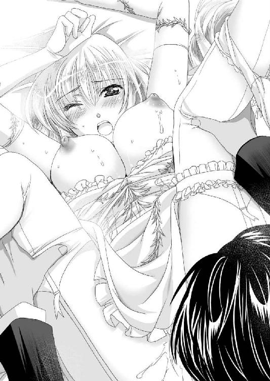
「ひぃ！」
美しい花嫁は引きつった悲鳴を上げる。
（小さなクリトリスだが、クリトリスはクリトリスだな）
おそらく初剥きされたのではあるまいか。真っ赤な肉芽がプルプル震えている。
気をよくしたロクトは、剥きだしの肉芽を集中的に舐め回してやる。その結果、小さな膣穴からトプトプと愛液が溢れてきた。
そこで右の人差し指を膣穴に押し込んでやる。
「イタっ」
不意にエリザベートの肢体がビクンッと震えて、いままでとは違う激痛に満ちた悲鳴を上げた。
それに驚いたロクトは手を離す。
「あ、すまん」
「いえ、わたくしのほうこそ、申し訳ありません。せっかく旦那様がわたくしのために頑張ってくださっているのに。その......気持ちよかったのです。とっても気持ちよかったのですが、その中に指を入れられたら、ビリッとしまして」
気遣わしげに謝罪してくるエリザベートに、ロクトはいささか憮然とする。
これでは自分が、彼女を快感で翻弄しているというよりも、やりたがっている夫のために、花嫁の義務として付き合ってくれているように感じたのだ。
「いや、俺のほうこそ配慮が足りなかった」
（そっかこいつには処女膜があるんだよなぁ）
ここに至って、ロクトはそれに思い至った。
軽く膣穴の左右に親指をあてがって中を覗いてみる。
中には蜜が詰まっているし、さすがに肉穴の中まで、魔法光はなかなか届かないが、ピンク色の処女膜らしきものは見えるようだ。
真ん中に穴があるようである。いわゆる環状処女膜と呼ばれるタイプのようだ。
（まぁ、いますぐぶち破ってやるけどな）
内心で嘯きながらも、口では一応、気遣う。
「今度は痛くないように、気持ちよくしてやるから安心しろ」
「ありがとうございます」
いっそう丁寧に扱う必要に迫られたロクトは、淫核を舌先で舐め回しつつ、両手を伸ばすと、双乳を揉みしだき、突起した乳頭を扱き上げる。
「これはどうだ？ 気持ちいいか？」
「あ、ああ......はい。あぁ、気持ちいい、気持ちいい......です」
氷のように気位高いお姫様も、陰唇を舐め穿られながら、両の乳首を弄ばれたらたまらないらしい。
喘ぎ声は一気に切羽詰まったものになっていった。
「あ、ああ、ああ、もう、変、なんか、身体が、ああ、身体が、浮く、いや、溶ける。変、変です、ああ、もう、もう、だめぇ！！！」
ビク、ビクビクビク......。
大股開きの美しい四肢が痙攣した。真っ赤な膣穴もぴくぴく開閉しながら、トプトプと熱い液体を吐き出している。
（イったな）
それと悟ったロクトは、一旦股間から顔を上げて質問する。
「どうだった？」
「き、気持ちよかった......です......」
羞恥と屈辱に頬を染めながらも、エリザベートは素直に認めた。
それに満足したロクトは、ズボンの中から逸物を取り出した。
ブルンと唸りを上げるような勢いで、臍に届かんばかりに反り返った逸物を、ロクトは誇示する。
「どうだ？」
「お、大きいです」
自分の性器を舐められた女は、お礼として相手の性器を舐めるものだ。少なくともレイニーなら、率先して口取りをしてくるのだが、この女はそういうことはしないらしい。
本当になにも知らない。する気もない。受け身のマグロ女だ。
（まぁ、いいか）
もともと花嫁にそれほど期待していなかったロクトは、花婿としての義務をとっとと済ますことにする。
「これを、いまからお前のここに入れる」
「は、はい」
バアヤだかネイヤだか知らないが、お付きの者にそのように教えられていたのだろう。
特に驚いた様子はない。
（まぁ、あのヴェルって小娘ではないことは確かだな。あいつはどう見ても経験なさそうだし......）
いままさに初夜の真っ最中だというのに、他の女の顔を思い出すという大変失礼なことをしながら、ロクトは小さな膣穴に逸物を添えた。
（思いっきり恥ずかしい姿で犯してやるぜ）
この上品極まる女を、卑猥な姿勢で犯すことに、いささか意地の悪い興が乗ったロクトは、結合部をエリザベートによく見えるようにしながら宣言する。
「それでは、入れるぞ」
「はい。よろしくお願いいたします」
ズボリ。
亀頭部が半ば埋まったところで、強い抵抗があった。
「くっ」
美しい顔を歪めてエリザベートは唇を噛む。しかし、取り乱すことはなかった。
どうやら先に指を入られた時の痛みで、激痛がくるだろうことは覚悟していたのだろう。可愛げがないことだ。
（くそっ硬いな。さすがは身持ちの硬そうな女だぜ。処女膜も鉄壁というわけか。何くそぶち抜いてやる！）
意地になったロクトは体重をかけて腰を落とす。
ブツリ。
硬い膜を突き破った確かな感覚が伝わってきた。
「ひぃっ」
悲鳴を上げまいとしていたエリザベートだが、両目を剥き、口を開いて涎を噴いた。
ズブズブズブ......。
入口さえ突破してしまえば、あとは道なりだ。
狭い肉洞を押し開きながら、強引に突き進む。
（くっ、凄い襞だ。それにきつい）
完璧な美貌を誇る女は、膣洞の形状まで完璧ということだろうか、ざらざらの襞肉がみっちりと肉棒に食い込んでくる。
やがて亀頭部が子宮口にまでガッツリと届いたようだ。
「どうだ、入ったぞ」
「はい」
体勢的に結合部を見せつけられているエリザベートは、驚愕の表情で魅入っている。
「動くぞ」
「......は、はい」
破瓜の痛みに耐えながらも、エリザベートは健気に頷く。
そこでロクトは腰を引いた。
ズルズルズル......。
亀頭部が抜け落ちる直前まで引いて、ドスンと子宮口まで落とす。そしてまた、逸物が抜ける寸前まで引き抜き、ズドンと最深部まで打ち込む。その繰り返しだ。
「ひぃ、ひぃ、ひい」
ズッコ、ズッコ、ズッコ。
子宮口まで打ち込むごとに、豊かな双乳がボヨンと揺れる。
「あ......っ、あ......っ、あ......っ」
破瓜の最中にそんな荒っぽいことをされては、女の身としてはたまったものではないだろう。
白かった顔が紅潮し、目元に涙が浮かんでいるさまが、さすがに痛々しい。
正直、ロクトの好みの女ではなかったが、絶世の美貌を誇る女である。やっていて楽しくないわけではない。
上品な美貌が、快楽と苦悶に歪むさまが面白く、夢中になって掘削してしまった。
（まぁ、泣いて実家に帰るなら、それもいいだろう）
そんな非情なことまで考えて、ロクトは一方的に高まる。
「それじゃ、出すぞ!?」
「っ!?」
壮絶な破瓜体験に翻弄されているエリザベートは、返事をするどころではなさそうだ。
そこでロクトは一方的に放つことにした。
逸物を押し込み、子宮口を突きながら野獣の昂りを放つ。
ドプッ、ドプドプドプ。
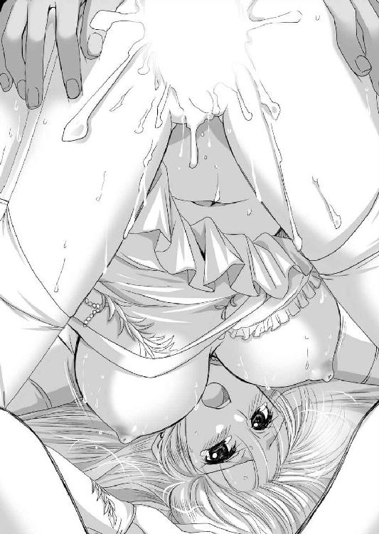
「はぁ、はぁぁぁ......」
初めて膣内射精される体験に、エリザベートはなんとも気の抜けた悲鳴を漏らす。
心行くまで牡の液体を流し込んだロクトは、小さくなった逸物を引っこ抜く。
無理やりこじ開けられた女穴が、閉じる。
「あ、だ、ダメ......」
慌てたようにエリザベートは、両手で股間を押さえようとしたが、遅かった。その前に膣穴が再び開く。
ドビュッ！
膣内に注ぎ込まれた液体が、逆流して噴き出したのだ。
純白の花嫁衣装に赤い飛沫がかかった。
それは精液とともに、破瓜の血が混じっていたせいだろう。
「はぁ......はぁ......はぁ......」
国王の従姉にして、絶世の美貌を誇る淑女が、花嫁装束のまま無様な大股開きで惚けてしまった。
※
「あの......明日出陣なのに奥方様の寝室に向かわなくてよろしいのですか？」
ロクトとエリザベートの結婚式が終わり、いよいよフルセン軍が隣国フレイアに攻め込むために出陣する、前夜。
ロクトは、女執事レイニーの部屋に上がり込んで、寝台に腰をかけた彼女の太腿に頭を乗せて、寛いでいた。
「必要ない」
パンストに包まれた太腿を撫で回しながら躊躇いなく答えるロクトに、レイニーは困惑の表情を見せる。
「しかし、明日から長く離れ離れになるのですから。今晩ぐらいは一緒に過ごして差し上げるべきではありませんか？」
「あいつはお高くとまっているからな。セックスとか下品なことは好きじゃないらしい」
「そうでしょうか？」
投げやりなロクトの答えに、レイニーは小首を傾げる。
「奥方様の何がご不満なんですか？ 国王陛下の御親戚で、あのように美人。わたしのような使用人にまで優しく声をかけてくれます」
そういう出来すぎたところが、ロクトにはイヤなのだ。
「それに比べてわたしなんて、大木で貧乳で、色気もない愛嬌もない女です」
確かに客観的に見て美貌も器量も、エリザベートのほうが格段に上である。しかし、ロクトは首を横に振るった。
「お前といるほうが落ちつくんだよ。お前は美人じゃないところがいい」
その評価にレイニーは複雑な表情を浮かべる。それと悟ったロクトは莞爾と笑って、太腿の最深部をまさぐる。
「あいつといると気疲れする。お前といたほうが気楽だ」
「あぁ......奥様がいるのにダメです」
慌てるレイニーはスカートの上から、悪戯な主人の手を止めようとするが、それはいつものように無駄な抵抗である。
ロクトは遠慮なく、スカートの中に顔を突っ込むと、パンスト越しに陰部の匂いを嗅ぐ。
「お前のオマ○コはいつもドロドロでいいな」
「下品な女で申し訳ありません」
「女はこれくらいドスケベなほうがいいって言っているんだよ」
ロクトは有無を言わさず、パンスト越しにむしゃぶりつく。
「お、お待ちください。高ぶっているなら、お口でいたしますから。今夜はどうか奥方様のところにお渡りください」
「そうか、なら頼む」
レイニーの妥協を受け入れて、ロクトはレイニーのスカートの中から顔を出すと、寝台の端に腰をかけた。
逆に寝台から降りたレイニーは、ロクトのズボンの中から引っ張りだした逸物を両手で掴むと、亀頭部を口に咥えた。
「う、うむ、うむ......」
さすがに十年来の関係である。堂にいった口戯である。
「あぁ、やっぱレイニーはいいな」
壺を心得た奉仕に、ロクトは目を細める。そのさまに一旦逸物を吐き出したレイニーは戸惑った声を上げた。
「奥様はこういうことをしてくださらないのですか？」
「ああ、あいつはお上品な女だからな。旦那に身体を求められると、イヤな顔なんかしないで受け入れるが、それだけだ。まるで妻の義務として、身体だけ任せているって感じでな。抱いてもまったく楽しくないんだ」
「......」
一瞬、もの言いたげな表情をしたレイニーだが、再び逸物を口に含むと、黙々と奉仕を再開した。
手で肉棒を扱き上げ、肉袋をマッサージ。
ジュルジュルジュルジュル。
上目遣いで男の様子を窺いながら、卑猥に啜り上げ頭を上下させるたびに、唇の裏側で鰓を刺激してくる。
まさに男を歓ばせる術を心得た女の技であった。
一方で後方に突き出されたレイニーの小さな尻が、クネクネと動き、太腿を擦りあわせている。
それと気づいたロクトは、タイトな黒スカートをたくし上げた。
黒いパンストに包まれた下半身があらわとなり、パンスト越しに白いショーツが浮き出ている。
その股ぐら部分はすでにぐっちょりと濡れて変色していた。
右の猿臂を伸ばしたロクトは、パンスト越しに陰部を弄んでやる。
「ふ、ふぅ......ふむ......」
逸物を口に咥えたレイニーの鼻息が荒くなる。
パンストとショーツ越しだというのに、突起した淫核の位置までしっかりわかってしまう。そこを集中的に弄んでやった。
ビクビクビクビクとレイニーの小尻が震え、昂っているのがよくわかる。
「そろそろいくぞ」
「ふむ、ふむ、ふむ」
お互い馴染みきった関係である。相手の絶頂に合わせるのは簡単だ。
逸物を咥えたままのレイニーが絶頂し、その口腔に精液を注ぎ込んでやろうとしたまさにその瞬間である。
部屋の扉が唐突に開いた。
「あ、ここにいた！」
顔を覗かせたのは、ポサポサのオレンジ色の髪をポニーテールにした元気印の少女である。
「エリザベート様、ゴリラここにいました！」
「ちょっと待って」
この場面を新妻に見られるのはまずい。ロクトは止めようとしたが、無理だった。
完璧な美貌を誇る女が、にこやかに入室してくる。
驚いたロクトは反射的に立ち上がろうとした。そのせいで逸物がレイニーの口から外れる。
ドビュッ、ドビュッ、ドビュッビュビュ......。
跳ね上がった逸物の先端から、白濁液が勢いよく噴き出し、レイニーの黒い髪から黒い執事服までを白く染めていく。
男に骨の髄まで調教されてしまっている女もまた止まらない。
「ああ───」
プッシュ───！！！
恥辱に満ちた悲鳴を漏らしながらレイニーは、無様にも絶頂失禁してしまった。
「っ!?」
室内の光景を一目見て、優雅なエリザベートの顔も凍りつく。
凍った時間の中で、ロクトの射精と、レイニーの失禁がやがて落ちつく。
（まぁ、仕方ないか）
腹をくくったロクトは、ベッドの端に座ったまま、射精を終えて半萎えになった逸物を隠そうともせずに質問した。
「なんの用だ？」
エリザベートもまた、無理やり笑顔を作って応じる。
「旦那様は明日、出兵なさいます。その最後の夜は共に過ごしたいと思ったのです」
「......そうか」
ロクトはそっけなく応じた。
そのなんとも重苦しい空気の中、一人ヴェルが歓喜の声を張り上げる。
「うわ、これ以上ない、浮気の現場ね。エリザベート様、これは離婚です。離婚。慰謝料たっぷりせしめてアテネに帰りましょう」
そんな側近の進言を冷然と無視して、エリザベートは進み出ると、絹のハンカチを取り出して、四つん這いになって震えているレイニーの頭髪や背中に付いた白濁液を拭う。
「あなたが旦那様のいい人ですか？」
「......」
身を強張らせているレイニーが答えることができないので、ロクトはやけっぱちに応じた。
「ああ、そうだよ」
新婚早々。国王の媒酌とはいえ、もうどうにでもなれ、という気分である。
そんなロクトの心境とは関係なく、エリザベートは優しく質問を続けた。
「付き合いは古いのですか？」
「じゅ、十年ほどになります」
「まぁ、そんなに......」
絶句したエリザベートに、レイニーはおずおずと答える。
「わたしがいけないのです。若様が結婚し、奥方様のような立派な伴侶を持たれた以上、潔く身を引かねばならないのに、ずるずると関係を続けてしまいました。ダメな女です」
「それでいいんだよ。お前は俺の女だからな」
傲然と応じたロクトと、エリザベートの目が正対する。
「他にもいるのですか？」
「そんなこと知ってどうするんだ？」
「側室の管理は、正室にとって大事な仕事です」
実に優等生な言葉である。ロクトは吐き捨てた。
「いねぇよ、こいつだけだ」
「明日の出征にも、この方をお連れするのですか？」
「いや、こいつは執事だからな。戦場には連れていけない」
ロクトの答えに、エリザベートはなにやら思案顔になる。
「さようですか？ わたくしから一つ我儘を言わせていただいてよろしいでしょうか？」
「ああ」
「明日の出陣ですが、ぜひともヴェルをお伴にお加えください」
その思い掛けない提案に、ロクトは瞬きをする。
「え、でも。そいつはお前の従者だろ」
「ヴェルは弓の達人です。決して足手纏いにはなりますまい」
戸惑うロクトを他所に、ヴェルのほうは主人の意図を察したようだ。ビシっと敬礼しながら返事をする。
「わかりましたエリザベート様。このスケベゴリラが戦場で浮気しないように見張ってきます」
どうやら、お目付役を付けられたらしい。
「旦那様、ご武運をお祈りいたしております」
早朝、出陣するロックス、ロクトの親子らを、エリザベートは丁寧に頭を下げて見送った。
「ふむ、留守を頼むぞ」
昨晩、浮気現場を見たというのに、常と変わらず、柔らかい笑顔で見送りに出るエリザベートの姿に、ロクトは怪物でも見るような気分を味わった。
「はい。レイニー様にいろいろと教えていただく所存です」
「......」
いかにも頼りにしている、と言いたげにエリザベートが目を向けた先では、執事服姿のレイニーが顔面蒼白で立っていた。
※
男たちが出払った後は、女主人たるエリザベートの天下である。
一応、ロクトの母親もいるのだが、彼女は王宮の責任者であって、ロックス家のことは長男の嫁に丸投げする方針のようだ。
（家に帰ったら、レイニーのやつ、人知れず亡き者にされている、なんてことはないよな。いやあり得る。あぁいうタイプの女こそ本当は怖いんだ）
独断と偏見でそう思い込んでいるロクトが、レイニーを一人残したことを後悔していると、不意に呼びかけられた。
「ロクト、どうした？」
それは主君であるエルフィンであった。
場所は陣屋の中だ。
フルセン軍の重臣たちが勢ぞろいしている。
王都アヴァロンを出陣したフルセン軍は、ターラキア山脈に入り、国境を越える前の最後の軍議をしていたのだ。
どうやら、そんな席で、いらぬ妄想をしていたようだ。
フルセン軍きってのイケイケの武闘派が、戦の前の軍議の席で一言も発さないというのは、奇異に映ったのだろう。
「失礼」
我に返ったロクトは、思わず謝った。そこを女将軍カーラがまぜっ返す。
「陛下、そう言ってあげないでよ。彼は新婚早々の出征だよ。あんなに綺麗な奥さんもらったばかりだもん、そりゃ、出陣前夜は盛り上がったんでしょうよ」
「あはは、確かにな」
軍議に参加していた人々が一斉に笑い声を上げる。
「......」
国王の親衛隊長であるロージーも、「馬鹿兄貴」と声を出さずに、口だけ動かす。
親父のロックスのほうは、ジロリと一瞥しただけで、なんら言わない。
諸将の笑い物になったロクトも、また肩を揺らして笑ってみせる。
「まぁ、そんなところです」
盛り上がったといっても、逆の意味でであったが、家庭の不和をこんなところで暴露しても意味はない。
「それで、敵の増援は、エバーグリーン城に入ったんですよね」
ロクトの確認に、諜報の責任者であるレイテが頷く。
「エバーグリーン城に入った増援は、ダングラール将軍を総大将に、エスターク将軍、ヒュンケル将軍、セルゲナス将軍、リュシアン将軍。合計およそ八千人っていったところだよ」
フルセン王国が一万三千もの大軍を率いて、侵略してこようとしていることは、当然、フレイア王国にも知れ渡っていたのだろう。
迎撃軍が編成されていたようである。
「意外に多いな」
「とはいえ、現在、フレイア王国は東のドモス王国との戦いに力を入れているはず、こちらに配される兵力は、主力とはいえますまい」
泡のように弾けた感想を、フルセン王国の軍師的な存在であるマリガンが封じ込めた。
そんな中、ロクトは軽く小首を傾げる。
「リュシアンという名前は、初めて聞くな。新進気鋭の将軍か？」
敵国の情報は、事前に仕入れられるだけ仕入れている。軍団長クラスの名前は、当然ながら把握しているつもりだった。
ロクトだけではなく、エルフィンをはじめ、その場にいた諸将の多くが初めて聞く敵将の名前だった。
その疑問に、軍師役であるマリガンが答える。
「先の王太子ウルベインの忘れ形見という話だ」
「ほぉ、ウルベインとは懐かしい」
その昔、セルベリア王国の覇王ゼークトが、領土拡大を目指してターラキア山脈を越えたことがある。
それを迎撃し、見事撃退したのが、当時、フレイア王国の王太子であったウルベインだ。
そのため、西方半島の人々の記憶にも残っている。
「士気高揚のためだろうが、なるほど、おもしろいな。一つ狙いますか？」
血気に逸るロクトの言葉の意味を察したエルフィンも、ニヤリと笑って応じる。
「ああ、そうだな。いい的だ」
フルセン軍きっての武闘派の男が何を考えたか、みなわかったのだろう。
戦争の勝敗の定義というものは、実は結構あいまいなものだ。
敵国を滅ぼし、占領するというのが一番わかりやすいが、そんな決定的な勝利など滅多にあるものではない。
実際、このたびの出兵で、エルフィンも重臣たちもそこまでは考えていなかった。
正直、フレイア王国を滅ぼしても、その土地を維持する自信がない。なにせ現在のフレイア王国は、東からドモス王国の圧力を受けている。
ドモス王国というのは、近年急速に領土を拡大している北の覇国だ。
これに対応することに、フレイア王国の主力は割かれているから、漁夫の利が狙えるだろうと、このたびの急な出兵になったのである。
下手にフレイア王国を滅ぼすと、勝ったとはいえ弱っているところを、ドモス王国に食われかねない。
フルセン王国の狙いは、フレイア王国を滅ぼすことではなく、勝利を得ることにあった。
若くして即位したばかりのエルフィンの政治基盤は、脆弱である。
それを補うために、なんとしても、戦争による勝利が欲しかった。
戦争は王を作る、という言葉がある。
勝利を得ることによって、エルフィンの王権はより強固なものになるであろう。
その勝利の条件として、王族の首級というのはわかりやすい。
総大将はダングラールという将軍だが、王族の首級を取ってしまえば、「これが敵の総大将だった」と宣伝することができるのだ。
そんな功に逸る若い主君と息子を、重鎮であるロックスが窘めた。
「まぁ、戦場で大将首を討ち取るというのは、滅多にあるものではありませんからな。そんな博打を考えるよりも、まずはエバーグリーン城を落とすことを考えなされ、これこそ確実な勝利だ」
「ああ、そうだな」
エルフィンは素直に頷く。
フルセン王国の戦略目標は、エバーグリーン城である。
城とは戦略的に重要な場所だからこそ建てられるものだ。これは対セルベリア王国用にフレイア王国が築いた城である。
ここを確保すれば、フルセン王国はフレイアの地に橋頭保を確保したことになるだろう。
今後、ドモス対フレイアの戦がどのように展開するかわからないが、この城さえ確保しておけば、臨機応変に対処できる。
「では、いくぞ。我々の新たな挑戦だ」
エルフィンの号令以下、フルセン軍は国境を越えた。
※
「ここが噂のフレイア砂漠か。なんともはや不思議な土地だな」
初めて異国に出たロクトは、物珍しげにあたりを観察する。
西方半島と内陸との境目となっているターラキア山脈を越えると、そこから先は、一面、白砂の世界だった。
熱砂の砂漠の国といわれるだけあって、フレイア王国の国土の大半は、砂漠でできている。
ただし、いわゆる南国にある砂漠とは違って、寒暖の差が激しすぎることから植物が育たず荒野と化したのであって、水がないというわけではない。
そして、何よりも特徴的なのは、この一見不毛の荒野の地下から、魔法の触媒の素となる化石を掘り起こせるということである。
この意味は大きい。
魔法というのは、なんにでも応用の利く、万能の燃料である。
これからの時代は、魔法を制した者が、戦争を制するであろう。なんとしても確保する価値があった。
「敵、城から打ってでてきました」
フレイア軍は、ダングラールを総大将に、左翼をエスターク将軍、中央ヒュンケル将軍、右翼セルゲナス将軍。遊撃にリュシアン将軍といった布陣のようだ。
「ほぉ、こいつは舐められたな」
敵の布陣を見て、ロクトは険呑に笑う。
主君も同じ意見であった。
「まずは一当たりといったところだろうな。その甘い心に付け込む。ロックスいけ！」
エルフィンの指示に従って、フルセン軍の最強部隊が動きだす。そして、その先陣を務めるのが、ロクトだ。
しかし、戦端を開いたのは、別人であった。
「一番槍はロミオ殿」
「あのバカが！ 俺たちも遅れを取るな！」
先鋒は武人の誉れだ。逆にいえば、それだけ死傷する可能性も高いということである。
弟に抜け駆けされたロクトは、烈火の如く怒って、自軍も前進させた。
ロクト、ロミオの兄弟は、競いあって、敵陣に斬り込んでいく。
こうして、やや変則的ながら、フルセン王国とフレイア王国の戦の火蓋は切られた。
エバーグリーン城の近くにて行われた会戦だから、のちにエバーグリーン表の戦いと呼ばれる戦闘の始まりだ。
先鋒の若武者たちの奮戦により、フレイア軍は押されまくる。
ロクト、ロミオ兄弟は、精鋭とはいえ、それぞれ百人前後の小部隊の指揮官である。
その突撃を受けて、フレイア軍の前衛は、思いの外、簡単に崩れた。
魔法の触媒の原料の取れるフレイア王国は金満国家だ。金持ち喧嘩せずで、あまり戦争に強くないのかもしれない。
一方、フルセン王国は、血で血を洗う骨肉相争う内乱を経て再生されたばかりの国家だ。
兵士たちの錬度が違ったということかもしれない。
「進め、進め、進め、兄者に遅れを取るな！」
「ロミオのバカに負けるな！」
本当に怒っている、というよりも半ばは演技である。
こうやって煽ることによって士気を高めているのだ。
そんな中、ロクトの傍らにあって意外な奮戦をした女がいる。
「ひゃっほぉ───♪」
陽気な奇声を発したヴェルが、跳ねるようにして矢を放った。その矢が狙いたがわず、一騎を射落とす。
それを見たロクトが称賛してやる。
「お、やるな」
「当たり前よ。ボクは海鳥だって、百発百中の女よ」
船乗りであったという少女は、得意げに胸を張った。
その笑顔にロクトは少し魅せられる。
（いい女だな。ほんとこいつが、結婚の相手だったら楽だったんだがなぁ）
という気分にならないでもないが、いまは戦の最中だ。とにかく、敵を打ち破ることに集中する。
競いあう息子たちの奮闘に気をよくしたのか、フルセン軍の宿将たるロックスまで自ら槍を手に、最前線に躍り出た。
そして、豪槍を振るうと、たちまちのうちに七騎を叩き伏してしまったのだ。
「......っ!?」
その鬼神さながらの活躍に、戦場が戦慄する。ロクト、ロミオの兄弟も思わず目を剥く。
「まだまだ、息子どもには負けられねェな」
豪快に嘯くロックスの姿に、ロクトは呆れて吐き捨てる。
「たくっ、血の気の多い親父だぜ。年を考えろってんだ。俺たちも親父に負けてられねェ！ いくぞ！」
「おう！」
大将が陣頭で戦っているのに、部下たちが奮いたたないはずがない。
ロックス、ロクト、ロミオの一家の奮戦により、フルセン軍の先鋒はさながら火を噴くような勢いで暴れ回り、当たるを幸いになぎ倒していく。
その勢いに乗ろうとエルフィンは、次々と新手を繰り出す。
そんな大激戦の最前線にあって、ロクトは思わぬ強敵と出会う。
「若造、ずいぶんと好き勝手にやってくれたな」
「む、誰だてめぇ」
騎馬に乗ったその男は、一目見て只者ではないとわかった。
なぜなら一般の兵士たちに比べると、各段に豪華な鎧を着用している。
年のころは四十代の半ばといったところか、武者髭を蓄えた堂々と押し出しの利いた男だ。
手に持つ槍の切っ先は、血に濡れており、いままで散々に奮戦していたことが見て取れる。
「小童、我が名はヒュンケル。死ぬまでの短い間、見知りおけ」
「ほぉ、将軍自ら槍働きか！ よき首級だ。その首もらった」
さすがにフレイア軍の先鋒を任された将軍である。国内屈指の豪傑なのだろう。
一番槍は、弟に奪われたが、大将首を取ったとあれば、お釣りがこようというものだ。
猛ったロクトもまた、長柄の戦斧を掲げて突っ込んだ。
両者は馬に乗ったまま、得物を合わせる。
ガツンッ！ ガツンッ！ ガツンッ！
常人であったら、確殺だろう重々しい打撃が繰り返される。
周りの兵士たちは手を出さない。これは戦場の作法のようなものだ。
また、実際、大将級の人々の着る鎧は、魔法防壁などが強力であり、並の武器では傷一つ付けられないという現実的な問題もある。
（この親父やる！）
思わずロクトは舌を巻いた。
いわば草を刈るように敵兵を殺してきたロクトが、この戦で初めて岩に当たった形だ。
誰が見てもフルセン軍の斬り込み隊長であるロクトを、自ら潰しにきただけのことはある。
（ったく、敵も味方も、血の気の多い親父ばかりかよ。おもしれぇ、ゼッテェ殺す！）
強者との戦いにワクワクしながら、一騎打ちをすること三十合。
不意に戦いの雰囲気が変わった。
「リュシアン将軍の部隊、退却します!?」
その声に、ロクトとヒュンケルは期せずして、間合いを取ってあたりを確認した。
「裏崩れか......？」
合戦において、死闘を繰り広げる最前線ではなく、戦局をよく見られる後ろから崩れるというのは、往々にしてあることだ。だがそれにしても、早い気がする。
ヒュンケル将軍が討ち取られた後ならともかく、まだまだ、フレイア軍には余力が感じられた。
「ヴァレリア将軍に、リュシアンを追わせろ！」
しかし王族の首を上げて、内外に勝利を喧伝する材料としたいと考えていたエルフィンは、慌てて叫んだ。
一番近いのは最前線にいるロックス党だったが、開戦からいままで戦い続けた彼らよりも、次鋒のヴァレリア軍のほうが余力を残していると判断したのだろう。
「むぅ」
戦局が大きく動いたことを察したのだろう。ヒュンケルは馬首を巡らせた。
「逃げるのか！ この野郎」
ロクトの叫びに、ヒュンケルは背を向けたまま応じる。
「小僧、この勝負は預けた。また会おう」
「逃がすかっ！」
ロクトは、大将首を追おうとしたが、兵士の壁に阻まれた。
ヒュンケルは陣頭指揮をやめて、指揮官たる立場に徹することにしたようだ。
フレイア軍が撤退をする。それをフルセン軍が追撃するが、戦の始まりから最前線で戦っていたロックスの部隊には、追撃戦にまで参加する余力はなかった。
その場で休憩ということになったが、ロクトの傍らで、ヴェルがぼやく。
「なんか、呆気ないなぁ......」
「ああ」
敵は去り、フルセン軍は残った。
一般にこれを勝利という。
しかし、フレイア軍の撤退の決断が思いの外に早かったため、大損害を与えるというわけにはいかなかった。
王族将軍リュシアンの首級を取ろうと、執拗に追撃したヴァレリア将軍も、結局は手ぶらで帰ってきて謝罪した。
「特別ボーナスは取り逃がしたか。まぁ、そうそう上手くは運ばないか」
この時、エルフィンも、ヴァレリアも、そして、ロクトも、この無名の王族将軍を取り逃がしたことを、それほど深刻には考えていなかった。
「とりあえずは初戦で完勝したのだ。幸先良し、としよう」
エバーグリーン表の戦いで勝利したフルセン軍は、ただちにエバーグリーン城を包囲した。
※
「また勝った！」
ロクトが勝利の報告に行くと、陣屋のエルフィンは苛立たしげに叫んだ。
「連日入ってくる報告は、勝った！ 勝った！ 勝った！ そればかりだ。それなのに戦局はまるで動かない！ なんなんだこの展開は!?」
フルセン国王エルフィンは、まだ十代の少年である。
この若さで王位を簒奪したのだ。並の才能であるはずがない。特に軍事的な才能は、傑出しており、寡兵で大軍を破ること、一度や二度ではない。まさに軍事の天才である。
ただ、彼の欠点は激しやすいということであろう。それは若さの発露なのかもしれないが、これで何度も無用な窮地に立たされている。
「負けるよりはいいだろ。そうカリカリしなさんな」
見かねたロクトが窘める。
エバーグリーン城の城将は元セルベリア王国の将軍で、フレイアに亡命したマージョリーである。
その経歴からして絶対に降伏のない相手だ。
籠もる兵士は千人以下であるはずである。囲むフルセン軍は一万三千である。
一気に片が付くかと思ったのだが、案に反してフルセン軍はまだ総攻撃すらできずにいた。
というのも、フルセン軍の撤退があまりにも早かったために、その部隊を壊滅させられなかったのだ。
エバーグリーン表の戦いで敗退したフレイア軍は、城には入らず、なお七千人前後の軍団として後詰として控えていた。
それを率いるのは総大将ダングラール将軍だが、問題は別働隊を率いたリュシアン将軍である。
この王族将軍は、兵力を小出しにして、執拗にフルセン軍の補給線や連絡線の寸断を試みたのだ。
これらをフルセン軍は容易に撃退した。
エルフィンは逆に、リュシアンの滞在しているオアシスを突き止めてロクトたちに強襲させたが、またも、リュシアンは抵抗らしい抵抗をせずに逃亡してしまった。
とにかく、しつこく攻撃してくるのに、反撃すると一目散に逃げるこの部隊の執拗な嫌がらせに、フルセン軍の予定は大幅に狂わされてしまった。
「このままいくと、無駄に物資と時間を費やして、撤退しなくてはならないぞ。この不毛な砂漠で現地調達なんて不可能だ」
勝利したとはいえ、敵を撃退するためには、矢や魔法宝珠といった消耗品を失う。
敵をいくら追い払っても、なんら得ることなく、これらだけ消費していくのでは、わりが合わないというものだ。
「はぁ、まぁ、そうなんですがね」
おそらく、敵が真正面から挑んできたら、エルフィンは二倍の敵でも撃破する自信が十分にあるのだろう。
しかし、こうものらりくらりと躱されると、有効な手が見つからない。
「くそ、あのウナギ野郎......」
誰が言い始めたのか、敵将リュシアンにはウナギ将軍というあだ名がつき、すっかり定着してしまった。
苛立つ主君を見かねたのか、レジスタンス上がりの女将レイテが口を開く。
「問題は、リュシアンって将軍だけなんだよね」
「ああ」
総大将のダングラールは、ごく尋常な将軍だ。決して無能ではないのだろうが、それだけに行動は読める。
「なら、いっそ、暗殺しちゃおうか」
レイテの提案に、ロクトは苦笑する。
「おいおい、そんなことがそう簡単に......」
「あら、やってみる価値はあると思うわよ」
若いころは紅蜘蛛と名乗って、怪盗をやっていたという女は、軽くウインクしてみせる。
その提案に、エルフィンは乗ってしまったようだ。
暗殺計画の立案となると、ロクトは完全に畑違いだ。話を聞いていても仕方がないと、主君の陣屋から出る。
「まぁ、打てる手は全部打つというのも悪くはないか......」
軍人であるロクトとしては、まずはダングラール将軍の部隊を潰すことに精力を集中することにする。
そこにオレンジ色の髪をポニーテールにした少女が、弓を片手に歩み寄ってきた。
「大将。もう矢がないよ。いくらボクでも、矢がなくちゃどうしようもない」
「わかっている。なんとかする」
ロクトは大きく溜息をついた。
※
「うちだって余剰物資なんてないわよ」
切羽詰まったロクトが向かったのは、カーラ将軍の陣屋であった。
カーラはセルベリア王国からの寝返り組で、いわば外様であったが、エルフィンの信頼は厚く。その領国の豊かさは、現在のフルセン王国ではナンバースリーである。
エルフィンの最愛の人ヴァレリアの親友であり、エルフィンがヴァレリアのもとに通う時、その郎党としてロクトも従ったことがあったから、なにかと顔を合わせる機会もあった。
ロクトとしては年代も近く、頼りやすい相手ではある。
「わかっている。そこをなんとか、貸してくれ」
元セルベリア貴族の女将軍は、灰褐色の長髪と黄緑色の瞳をした、生まれながらの貴族です、といった繊細な顔をしている。
その軍服も、紫色のマントと白いロングコート、その下に金糸の入った白いパンツスーツという華やかさだ。
痩身で手足は長いが、胸だけは、結構ある。
「いくら言われたって、ない袖は振れないわ」
簡易な椅子に腰をかけ、優雅にワイングラスを傾けながら、カーラは嘯いた。
中に入っているのは白ワインだ。
最前線で兵士たちには粗食を与えながらも、自らはワインを楽しむ趣味をやめるつもりはないらしい。
「もちろん、ただでとは言わない。この間、占領したオアシスにマルタというところがある。あそこで魔法の触媒が出る。ここの採掘をお前に任すように、陛下にお願いしてみる」
「ふむ」
外様であるカーラは保身のために、フルセン王国に従属したのだ。
このたびの遠征でも、率先して戦う気はない。自らの家に損害が出ないように、あるいは利益を上げることを最優先に考えているだろうことは想像に難くない。
その意味で、この出兵の最大の旨みである、魔法の触媒の採掘権というのは、ぜひ欲しいところだろう。
まして、この役になれば、最前線に出なくても済む。
「他に何か希望があるのか？ この際俺のできることならなんでも便宜を図るぞ」
武闘集団であるロックス党は、最前線で戦うことが誇りである。戦う以上、矢が不足したのでは話にならない。
ロクトは必死に頭を下げた。
「なんでもしてくれるの？」
右手でワイングラスを弄びながら、左手の甲を顎に添えて思案顔をするカーラは、いかにも悪巧みをしています、といった顔で、楽しげに笑った。
それと察しながらも、ロクトは請け負う。
「ああ」
「そうね......」
ワインを一口飲んだカーラは、考えがまとまったらしい。満足げに頷く。
「それじゃ......わたしの足をお舐め♪」
「はぁ？」
思わず絶句するロクトに、椅子に座ったままカーラは楽しげに微笑する。
「一度やってみたかったのよね。男に足を舐めさせるって」
「......」
椅子に座ったままのカーラは、右足の膝を伸ばす。
「あなたが、犬のようにわたしの足を舐めてくれるなら、そうね。矢を満載した小荷駄を三両分けてやってもいいわ」
ちなみに小荷駄とは、食糧や弾薬など消耗品のことをさす。対して大荷駄とは、武器や武具、陣所設営用の資材、攻城用具のことをいう。
（まったく、これだから生まれながらの貴族ってやつは爛れているよなぁ......）
呆れたロクトだが、しぶしぶ頷いた。
「わかったよ。それで矢を分けてくれるというなら、お安い御用だ」
その場で跪いたロクトは、カーラの右足を押し戴くと、その軍靴を脱がし、靴下を脱がした。
少し湿っぽいが、いかにも貴族的な、手入れの行き届いた綺麗な足の指が五本あらわとなる。
「さぁ、お舐め、足の指の間まで、しっかり舐めるのよ」
「ああ......」
調子に乗っているカーラの脚の親指に口づけをし、それから唯々諾々と足の指の股に舌を入れる。
「あはっ、本当に舐めるだなんて♪」
自分で交換条件に命じておいて、まさか本当に足を舐められるとは思っていなかったのか、カーラは動揺した表情を浮かべた。
しかし、カーラが感じているほど、ロクトは屈辱を感じているわけではない。
脚を舐めることで、なんら懐が痛むわけではない。それで、戦物資を分けてもらえるなら、お安い御用だ。
「うふふ......国士無双の勇者に脚を舐められるのって、悪くない気分ね。あは♪ 癖になりそう......」
ワインを舐めながらカーラは、自分の足を舐めるロクトの様子を恍惚と見下ろしている。
「こっちも」
ロクトが右足の五指を舐め終えると、カーラは左足を突き出した。
そこでこちらも同じように靴と靴下を脱がして、五指を舐めてやる。
「はぁ、はぁ、はぁ......」
カーラの息が上がり、頬が紅潮している。
足の指が、女の性感帯とは思えない。それよりも、男に足を舐めさせるタブーが、精神的に彼女を紅潮させて、ワイン以上に酔わせているようだ。
左の五指も舐め終わったロクトが顔を上げる。
「終わったぞ」
「まだよ」
カーラはパンツスーツのベルトに手をかけた。そして、スルスルとタイトなズボンを脱ぎ捨てると、紫色のショーツを晒した。そして、長い生足を伸ばすと、ロクトの頭を挟んで、両肩に乗せた。
「わたしは脚をお舐め、と言ったのよ。脚はもっと広いでしょ」
「そうか......」
相手の要望に応えて、両肩にかかったカーラの脚を持ったロクトは白く柔らかな脹脛に接吻した。それから白い内腿を交互に舐め上げていく。
「ああ、あぁん......」
カーラは明らかに性的な興奮を表す喘ぎ声を漏らしていた。
実際、紫色のショーツに目をやると、内側から溢れた液体で沁みができており、それが少しずつ大きくなっているのが見て取れる。
太腿の内側の筋を舐め上げていけば、自然と紫のセクシーショーツへとたどり着く。
鼻先にきた濡れた布地の中央に、ロクトは左手をそっと添えた。
「ここは足に入るのか？」
かなりみっともないことになっている下半身のことなど知らぬ、と言いたげにカーラは気取った仕草で、もったいぶった思案顔をする。
「そうね。脚と脚の間だから、脚よ」
「そうか、ならこれを脱がすぞ」
「ええ......」
椅子の肘かけに両手をついたカーラは、腰を上げた。
その間にロクトは、するするとショーツを脱がす。
ふわっと灰褐色の陰毛が立ち上がる。
肉割れは半開きとなり、トロトロと蜜を溢れさせていた。
甘酸っぱい牝臭が鼻腔をくすぐる。
（まぁ、こいつは聖女ってタイプじゃねぇからな。それなりに男とも遊んでいるんだろ）
ロクトは、カーラをそれなりに信頼していたが、男と女の関係になると思ったことはなかった。
愛情はないが、友情はそれなりに感じていたし、気まぐれで、陰唇を舐めろと言うなら、舐めてやることは、やぶさかではない。
（とはいえ、こいつのオマ○コを見る日がこようとは思わなかったな）
妙な流れになったものだと思いながらも、女の肉裂の左右に親指を当てて、メラリと剥く。
ピンク色の媚肉は、水飴でも塗ったかのようにぬらぬら濡れ輝いていた。
淫核は仮性包茎のようだ。少しだけ真っ赤な真珠を覗かせている。
「遊び人の癖に綺麗なオマ○コしているな」
遊んでいる女の生殖器が黒くなるというのは、嘘らしい。
「言ってなさい」
カーラはむっとしながらも、陰部を隠そうともしない。
「それじゃ舐めるぞ」
「ええ、犬のようにわたしのオマ○コを舐め回しなさい。隅々まで丁寧に、よ」
多少、赤面しているが、どこまでも傲慢な女将軍の陰唇に、ロクトは口づけをした。
まずは女の船底を、言われた通り隅々まで丁寧に舐める。
ピチャリ......ピチャリ......ピチャリ。
「はぁん♪ さすが妻帯者、なかなか上手いわね。はぁぁ～ん♪」
いかに高慢で気の強い、貴族の女将軍といえども、陰部を舐め回されている最中は平静ではいられない。
ワイングラスも持っていられなくなったのか、近くのテーブルに下ろすと、ロクトの首に両足をかけながら、ピクピクと痙攣している。
「これが紅顔の美少年、皮余りまくりの包茎チンポの持ち主だったら理想なんだけど、仕方ない。目をつぶって妄想することにするわ」
目を閉じたカーラは、気持ちよさそうに喘ぎ声を漏らす。
「あぁ......あん、うん......そこいい、そこそこ、ああ」
快感に歓喜するカーラが油断しているところに、ロクトは舌を尖らせると、ぐいっと膣内に押し入れた。
「ちょ、ちょっと、舌長い。そんな奥まで舐めるだなんて......あぁ」
ロクトは舌を入れられるだけ押し入れると、グリグリと掻き回した。
「ああ、らめぇ、それ凄い。ああ、わたしのオマ○コが、オマ○コの中が全部舐め回されちゃう♪」
頃はよし、と判断したロクトは、左手で淫核を摘み上げると、膣穴に入れた舌をズボズボと出し入れさせた。
「ひぃ、それダメ、いい、ダメぇぇぇぇぇ！！！ 気持ちいい！！！ だめぇぇぇ！！！ 変になっちゃう！！！」
女王様を気取っていた女は、涎を噴きながら無様に牝叫びを上げた。
長い四肢を激しく痙攣させたカーラは、やがてぐったりと脱力する。
「はぁ......、はぁ......、はぁ......」
脱力するカーラの股から顔を上げたロクトが質問する。
「これで満足か？」
「ええ......なかなかよかったわ」
カーラを絶頂に導き、条件をクリアーしたことを確認したロクトは、その股の間から立ち上がる。
「それじゃ、約束通り、小荷駄を三両もらっていくぞ」
軽く身支度を整えたロクトが立ち去ろうとしているのを察したカーラは、顔を上げて叫ぶ。
「ちょっと、待ちなさいよ！ あんたここまでやっておいて、帰るっていうの！」
「なんだよ。まだ条件があるのか？」
「そんなんじゃないわよ。でも、普通ここまでやったら、最後までするでしょ」
カーラの言葉に、ロクトは本気で驚いた。
「え、お前、俺にやられたいのか？」
その言葉にカーラは顔を真っ赤にして怒った。
「別にあんたなんかにやられたくないわよ。ただ、わたしはオマ○コ舐めさせただけで帰れ、というほど鬼じゃないってだけ。一発やらせてあげるから、そこの寝台に横になりなさい」
動揺しまくっているカーラが指し示した先には、簡易に寝台があった。
戦陣の中である。いかに貴族将軍といえども、そう豪華な部屋は用意できない。
「お前な、俺は一応妻帯者だぞ」
「別にわたしだって、あんたになんか恋愛感情はないわよ。わたしの好みはかわいい～美少年。それもまだ女を知らない純真無垢な天使のような男の子。おちんちんだって小さくて、皮だってたっぷり余っている。わたしが軽く手に取っただけで、啜り泣きながら漏らしちゃうような敏感おちんちんの持ち主よ」
美少年への愛を高らかに謳うカーラを前に、ロクトはいささか引き気味である。
「お前......病んでいるよなぁ」
「煩い。新婚早々の出兵であんた溜まっているんでしょ。あんたはわたしの好みじゃないけど、お情けでやってあげる、って言っているんだから、四の五の言わずに、そこに仰向けになりなさい」
「......」
なおも逡巡するロクトを、カーラは挑発する。
「それとも奥さん怖い？ 新婚早々、もう嫁さんに尻に敷かれているの？」
「そんなんじゃねぇよ」
実際、溜まっていることは確かだ。
新妻の付けた監視役の目が厳しくて、部下の女に手を出すことなんてとてもではないができない状況だった。
覚悟を決めたロクトは、言われるがままに簡易な寝台に仰向けになる。
椅子から降りたカーラは、ロクトの両足の間に蹲って、テントを張るズボンに両手をかける。
ブルンッ。
跳ね上がった逸物を前にして、カーラは目を見張る。
「うわぁ、予想はしていたけど、ほんとでかいわね。こんな丸太みたいなのぶち込まれたあんたの奥さんに、同情するわ」
「うるせぇよ」
「こんなバカみたいにでかいおちんちんを、いきなり入れたら、わたしの繊細なオマ○コが裂けちゃうわ」
そう嘯きながら、顔を近づけたカーラは逸物を口に含む。
「う、うむ、ふむ......」
口いっぱいに逸物を頬張ったカーラは、頬をすぼめながら吸引する。
ジュルジュルジュルジュル......
啜り上げながら頭を上下させていたが、やがて諦めたように逸物を吐き出した。
「ほんと無駄に大きいわね。顎が外れるかと思ったわ」
「お前が普段、ガキばっかり相手にしているからだろ」
「ふん、言ってなさい」
高慢に鼻を鳴らしたカーラは、ロクトの腰の上で蹲踞の姿勢になった。右手で逸物を握って、自らの陰唇に添える。
「わたし、あんたなんか全然興味なかったんだけど、他人のものになったと思うと、ちょっと盗み食いしたくなるわね」
「いやな性格しているな」
呆れるロクトに、カーラは妖しく笑う。
「それじゃ、新婚早々浮気する最低男のチンポを、いただきま～す」
カーラはゆっくりと腰を下ろした。
「んっ、よいしょ。ああ」
ズブ......ズブズブズブ......。
カーラは切なげに口元を半開きにして、剛直を飲み込んでいく。
「やっぱり......でかすぎ。オマ○コ裂けそう......あ」
悪態をつきながらも、蟹股開きになったカーラは、順調に腰を落としていく。
コリ。
亀頭の先端にコリコリとしたものが当たった。
「あ、ああ......奥に届いちゃった。まだ指三本以上も残っているのに、これ以上入らないわ。ほんとバカみたいにでっかいチンポだわ」
口ではいろいろと不満を言いながらも、実際は気に入っているらしく、瞳を輝かせて、卑猥に舌舐めずりをする。
その膣内は、グネグネと動き、逸物に絡みついてきた。
「まぁ、いいわ。これからわたしが動いてあげる。ヒィヒィ言わせてあげるからね」
そう嘯いたカーラは、両手をロクトの腹部に乗せて、宣言通り腰を動かし始めた。前後左右、さらには円を描くように。
グヂュグヂュグヂュグヂュ。
カーラが腰を上下させるたびに、卑猥な粘着質な水音が響きわたる。
「あ、あん、あん......」
高ぶるに従って、カーラはどんどんのけぞってきた。
そのため、腰を持ち上げるたびに、肉棒が女の内臓物を裏返す。なかなか卑猥な眺めだ。
性格は最悪な女とはいえ、外見的には美しく、スタイリッシュな美人である。腰の振り方もかっこよかった。
（しかし、少し気取りすぎだな）
少し悪戯心を刺激されたロクトは、手を伸ばすと、左手の親指で淫核を押してやった。
「ひぃ」
ブルっと身震いしたカーラは、泣きそうな声を出す。
「ちょ、ちょっと、わたしが動いてあげているんだから、下手な愛撫は必要ないわよ」
「そう言うな。お前にも気持ちよくなってもらいたいんだよ」
ロクトは委細構わず淫核を押してやる。
「ひぃっ、ひぃっ、ひぃっ」
もう十分に高まっていたところに、男の愛撫が加わって、カーラは一気に理性を失った。
奔放な淫乱女を気取っていた美しい女が、いまや啼き声を啜り上げて無様なアヘ顔になっている。
それは男がもっとも心躍る光景の一つだろう。
（ったく、性格は最悪でもいい女だな）
大いに高ぶったロクトは、睾丸から溢れだした熱い昂りが肉棒を駆け上がっていくのを感じたが、それを我慢しながら下からガンガン突き上げている。
「ああ、ダメぇ、そんな激しくされたら、わたし、わたし......」
啜り泣いているカーラの顔を見て、ロクトは我慢できなくなった。
「そろそろいくぞ」
「ああ、来てぇ、来てぇ、きてぇ！」
理性を失ったカーラの要望に応えて、ロクトは逸物を思いっきり爆発させた。
ドビュ、ドビュビュビュ！！！
「ああぁぁぁ......凄い、いっぱい、いっぱいくるぅぅ、くるぅぅぅぅぅ！！！」
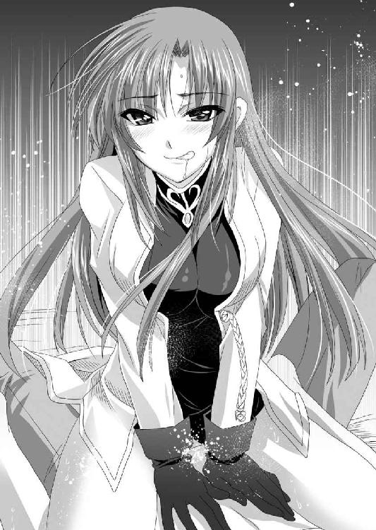
断末魔の悲鳴を上げたカーラは大きくのけぞった後、まるで討死したかのようにうつ伏せに倒れ、そのままロクトの唇を奪った。
「う、うむ......ふむ、うむ」
夢中になって男の唇を貪りながら、下半身でも男の吐き出す液体を貪り飲んでいる。
やがて射精が終わり、人心地ついたところで、カーラは接吻をやめて顔を上げた。
「あ、ほんと......でかすぎ。吐き出す精液の量も規格外。あんたのせいでお腹ぱんぱんよ。オマ○コがガバガバになったら、恨むわ」
「楽しんでもらえたなら、よかった」
憎まれ口を利いているカーラの背中をぐいっと抱きしめると、カーラは素直にその胸に頬を付けて余韻に浸った。
「どうよ♪ あんたのあのお上品そうな奥さんより、わたしとのセックスのほうが気持ちよかったでしょ」
「ああ、そうだな」
素直に認めたロクトは、返事をすると同時に、カーラの身体を抱いたまま、身を反転させた。
「ちょ、ちょっと何するの？」
「一発だけで終わりってのも味気ないだろ。今度は俺が上になって動いてやるよ」
男女の生殖器はまだ繋がったままだ。女は仰向けになり、男が組み敷く。すなわち正常位である。
「続けて二発目なんてしなくていいわよ」
カーラは慌てて止めようとするが、もはや後の祭りだ。
「サービスだから、遠慮するな」
そう宣言すると同時に、ロクトは腰をゆっくりと動かし始めた。
一度射精した逸物が、まったく大きさを変えずに、女の最深部をえぐり回す。
「そ、そんな奥をゴリゴリ......されたら......ああ♪」
ロクトはさらに、カーラの軍服の胸元をはだけさせた。あらわになった紫色のブラジャーをたくし上げる。
「意外と綺麗な乳首しているな」
「っく」
悔しげな表情をするカーラを組み敷き、腰の動きをいささかも緩めることなく、ロクトは、麗しい乳房を揉みしだいた。
「ああん、あん、ああ......あん」
乳首はすでに十分すぎるほどにシコリ立っていたから、ロクトは背中を丸めて、乳首を口に含みしゃぶり上げる。
もちろん、腰の動きはいささかも緩めない。
グチュリグチュリ......。
膣中で精液と愛液が、さながら杵と臼で突かれる餅のように捏ね回される。
「はん、いや、ダメぇ、こんなケダモノにいいようにされるだなんてぇぇ♪ あぁ♪ 気持ちいい、気持ちいい、気持ちいい」
自立した女としては、男に一方的に組み敷かれて犯されるのは癪に障るのであろう。
悔しげな悲鳴を上げながらも、カーラは両手でロクトの太い首を抱き、両足の裏を完全に天井へ向けながら、ただの牝獣に堕ちた。
※
「はぁ......はぁ......はぁ......もうダメ許してぇ、わたし完全に腰抜けた。これ以上は無理、無理だから......もう死ぬ、死んじゃう......」
一晩中、休みなく突かれまくったカーラは、精根尽き果てたといったていでぶっ倒れていた。
大男に組み敷かれて逃げられない状態で、太い逸物による抽送をえいえいと続けられたのである。
何度も何度も強制的な絶頂に晒されたカーラは、幾度か失禁までしていたようだが、ロクトはそれでも動きを止めなかった。
「満足してもらえたようでよかった」
嘯いたロクトは、ようやく執念深く仕込んでいた逸物を引き抜いた。
「あ、ああ......」
カーラの口から切なげな吐息が漏れる。
「こ、この体力バカが......わたしをケダモノにして、弄んでくれちゃって......」
口では相変わらず強気だが、本当に腰が抜けてしまっているのだろう。開いた股を閉じることもできない。
膣穴もぽっかりと大穴を空けたまま、白く泡立った液体を垂れ流している。
「イタタ......腰が痛い。もう、これだから下手に女馴れした男って嫌いなのよ。ただ一方的に何度もイかせれば、女が歓ぶと思っちゃって。......あんたのせいで、わたしのオマ○コ、絶対に緩くなったわ。わたしのオマ○コは本来、可愛い美少年の包茎短小早漏のダメダメちんちん仕様なんだからね。どうしてくれるのよ！」
「はいはい」
カーラの戯言は聞き流したロクトは、汚れた陰唇をタオルで綺麗に拭ってやってから、裸体に毛布をかけてやる。
「それじゃ、小荷駄を三両ほどもらっていくぞ」
身支度を整えたロクトは今度こそ別れの挨拶をした。
毛布を肩の上まで引き上げたカーラは背を向けて吐き捨てる。
「好きにしなさい。わたしは帰り支度を始めるわ。......まったく、女の腰が抜けるまでイかせて悦にいるだなんて、ほんと悪趣味な主と部下だわ」
「ん？ なんのことだ」
「なんでもない。こっちの話よ。さっさと出て行きなさい。このデカマラ野郎っ!?」
不機嫌な女から汚れたショーツを投げつけられたロクトは、ほうほうのていで逃げ出す。
「っ」
カーラの陣屋から出たロクトは、その場で、ぎょっとして立ち止まる。
なんと、弓矢を構えた少女が、立ちふさがっていたのだ。
「また浮気した」
それがヴェルだと察してロクトは溜息をつく。
妻の郎党にジト目で睨まれたロクトは、なんとか言い訳をする。
「仕方ねぇだろ。こうしなかったら、矢を分けてもらえなかったんだぞ」
「ほんと節操ないわよね。家では女執事をコマし、戦場では、女将軍をコマす。あぁ、こんな歩く性獣が旦那様だなんて、エリザベート様かわいそう」
ヴェルはわざとらしく泣き真似をしてみせる。
当然、このたびの一件を、彼女は嬉々として国元のエリザベートに報せるだろう。その結果どのような事態が起こるかまったく想像できない。
ロクトは本当に、家に帰りたくないと思った。
「若、そろそろ潮時ですよ」
日夜関係なく行われるフレイア軍の将軍リュシアンの嫌がらせ攻撃を、当たり前のように撃退したロクトは、出迎えた若き主君エルフィンの耳元で、そっと告げた。
「......わかっている」
若き覇王は静かに頷く。
ロクトは軍事政権であるフルセン軍の中でも、もっとも武断的な性格を体現している男である。
それが公の席で、撤退を口にしたのでは、兵士たちの不安を招く。表面はあくまでも強気に振る舞うのが、猛将の務めというものだ。
あくまでも、私的に国王に限界を伝えておくに留める。
一応、連日、連戦連勝だ。兵士たちの士気は低くはない。しかし、いいかげんうんざりしているのも事実だ。
そして、首脳部が懸念しているのは、物資の不足である。
砂漠の国フレイアでは、なにもかもがなかった。
現地調達はできないということははじめからわかっていたから、事前準備はできるだけしてきたとはいえ、西方半島はもともと貧しい国土だ。そのうえ先の王朝の悪政により、国土の荒廃は目を覆わんばかりのものがある。
そのため隣国のフレイアの豊かな富を求めて、さながら強盗のように侵攻してきたのだ。
食料のほうにはまだ余力があるのだが、弓矢魔法などの消費は想定を完全に超えていた。
魔法触媒の産地だから、魔法には困らないだろう、と考えたいところであったが、フレイアで取れるのは、魔法触媒の原料である化石である。ここから魔法具として使用するまでには、生成などいろいろと面倒な行程が必要であり、その場で使えるという代物ではなかった。
「まさか敵にこんな知将がいるとはな」
撃退されても撃退されても、連日連夜、懲りもせずに仕掛けてくる敵将リュシアンを思い描いて、エルフィンは溜息をつく。
「まともに戦えば、決して負けないですがねぇ」
主君の無念に同調して、ロクトもまた悔しげに左の掌を、右の拳で叩いた。
軍事の天才と言われたエルフィンと、その忠実なる家臣ロクトたちは、これまでに幾度も寡兵で大軍を破っている。
だから、たとえ精強で知られるドモス軍にだって負けない。世界最強は俺たちだという絶対の自信があった。
しかし、いま相手にしている相手は、なんとも勝手が違う。
いつもチョロチョロと攻撃を仕掛けてくるのだが、反撃するとあっという間に逃げてしまうのだ。
勝とうとする者を破ることはできても、はじめから逃げる気である相手に勝つのは意外と難しいものだと思い知らされた。
「先の戦で取り逃がしたのが悔やまれるわね」
初戦で敵将リュシアンを、あと一歩まで追い詰めた女将ヴァレリアは、時が経つに従って本気で後悔しだしたようである。
起死回生の暗殺計画を実行したレイテも、結局は失敗して逃げ帰ってきた。
正直、手詰まりに陥ったことは否定できない。主戦派の筆頭というべきロクトの進言を受けたエルフィンは、諸将の集まった軍議の席で宣言した。
「撤退する」
この言を軍師役のマリガンがすかさず継いだ。
「もともと、冬になる前に撤退する予定でしたからな。いや、砂漠とは予想以上に冷えるものですからな」
これは戦に苦戦しての撤退ではない、ということを内外に印象づけるための発言であろう。
確かに長期戦は想定してはいなかった。奪うだけ奪ったら、さっと風のように退く予定である。
なにせフレイア砂漠の冬は、想像を絶した極寒だという。そんな中野陣など張っていたら、戦う前に全滅の危険がある。わざわざそんな冒険をすることもあるまい。
「わたしも賛成。撤退の時期を間違うと大変なことになるわ」
カーラも積極的に賛成した。
諸将はすでに撤退しかないと考えていたようである。
しかし、次いで出たエルフィンの言葉は、予想していなかった。
「ただ撤退したのでは、敵の追撃を受ける。それよりも、もう一勝して、敵の追撃の意志を挫く」
若き主君の思い掛けない言葉に、諸将は緊張する。
※
「敵、動きだしました」
フルセン軍は、エバーグリーン城の攻囲を続けたまま、別働隊を発進させた。
指揮するのは、マリガン将軍である。その兵力は二千。目指す目標は、南の港町ザウルステールである。
「よし、釣れたか......」
伝令から報告を受けたロクトは、静かに頷く。
一時撤退を決意したエルフィンだが、敵の追撃意欲を削ぐために、もう一戦することを望んだ。
ザウルステールという街は、フレイア王国の南バロムリスト王国の港町で、フレイア王国が借り受けている。
内陸国であるフレイア王国は、この港町を使って世界各国に魔法触媒を輸出していた。
ここを占領ないし、破壊されては、フレイア王国の経済の動脈が止まる。絶対にそうはさせじと、軍を派遣してくるはずだ。
そこを撃破する、という作戦だ。
ひそかに出陣しようとしたロクトは、その直前にカーラに捕まって真剣に怒られた。
「この戦、勝てば確かに華やかだけど、もうエバーグリーン城を奪う余力のない以上、意味はないわ。もはや撤退は決まったんだから、下手な意地は張らずにとっとと撤退すべきよ。こういう戦を、兵に溺れているって言うの。エルフィンはなんだかんだ言っても、まだガキなんだから、あんたがぶん殴ってでも、説得しないでどうするの！」
王者とは孤独なものだ。それを少しでも和らげるのが、譜代の家臣の役目である。
父や祖父、いやもっと古くから先祖代々仕えている譜代の家臣というのは、主君とは主従という枠を超えた家族的な温かな絆で繋がっているものだ。
この強固な関係は、時として改革などの妨げになると非難されることもあるが、致命的な失敗を防ぐ安全弁にもなる。
いくら切れ者でも、新参者ではできないことだ。
特にロクトは、エルフィンと年が近く、兄貴分として、時にはぶん殴ってでも諌める役割を期待されている。
カーラの言わんとしていることはわかるのだが、まったく負けている気がしないのに物資不足での撤退というのは悔しくて仕方がないという、エルフィンの心情もわかるロクトは、あえて諌めなかった。
それどころか猛将らしく賛同し、自ら志願したのだ。
「あんたって、ほんとに脳筋なのね！ 主君の忠実な駒でいることがあんたの役目じゃないでしょ。あんたがしっかりしないと、エルフィンがジューザスみたいになるわよ」
セルベリア王国を滅ぼした暗君になると、言われてロクトはさすがに憮然とした。
「とにかく勝つしかねぇよな」
エルフィンの思惑通り、敵の後詰部隊に大打撃を与えれば、同じ撤退するにしても、内外に与える印象は大きく違ってくるだろう。
来年、再侵攻する時に、内通者を誘う呼び水になるかもしれない。
そうなれば、この戦にだって意味が生まれる。しかし、負けでもしたら、本当に目も当てられない惨状になるだろう。
フルセン軍の別働隊を指揮するマリガン将軍は、フルセン軍にあってロックスに次ぐ戦上手で知られた人物である。とはいっても、その兵力は二千。
エバーグリーンの後詰として控えているフレイア軍は七千前後と予想される。
いかに強兵のフルセン、弱兵のフレイアといっても、三倍を超える兵力差があれば、勝てると考えたくなるのが人情であろう。
エルフィンの思惑通り、フレイア軍は、ダングラール将軍率いる五千とリュシアン将軍率いる二千で、挟撃してきた。
「ほぉ、敵さん今日は珍しくやる気だな」
砂塵巻き上げる敵の陣容を見て、ロクトは莞爾と笑った。
このたびのフルセン軍の動きを、フレイア軍の総大将ダングラールは舐められた、と感じたようだ。
敵の油断を突こうと、自ら陣頭に立って指揮している。
「我に続けっ！ 半島のドブネズミどもを駆逐せよ！」
数的な有利を信じるフレイア軍の勢いに押されたマリガン将軍は、勝機なしと見て逃げにかかる。
「逃がすな、追え！」
追いかける形となったフレイア軍は、色めきたった。なにせいままで連戦連敗だったところを、ようやく勝てるのだ。士気も上がろう。
必死に逃げるフルセン軍、それを追いかけるフレイア軍。
この戦役で初めて起こった形だ。
挟撃したはずのフレイア軍は、ダングラールの本隊と、リュシアンの別働隊が一体になり、功を競って追撃してくる。
「大将、敵。目標に到着しました」
弓の名手であるヴェルは、目もいいため、偵察役を任せていた。
「よし、やれ」
ロクトの号令とともに地鳴りが響く。
ごぉぉぉぉぉざぁぁぁぁぁぁ！！！
高台に溜められていた砂が、さながら決壊した川のように流れ込んできた。
「うわわわわわぁぁぁぁぁ！！！」
突然のことにフレイア軍の兵士たちは混乱した。
今回のエルフィンの考えた作戦がこれである。マリガン将軍は、ここに敵を誘導するように決めていたのだ。
とはいえ、所詮は砂である。
水ほどに勢いよく大量に流すことはできなかった。砂に巻き込まれた人々も、押し流されて亡くなる、ということはなかったようだ。
範囲も広いとは言えなかったが、新砂に覆われた砂漠の表面はパウダー状になって、歩行を困難にする。
勇んで突撃してきたフレイア軍の先頭部隊は、脚を取られてすっ転ぶ。
馬の前足を取られて、転げ落ちることになったダングラール将軍もまた、砂を吐きながら叫んだ。
「小細工をしおって！」
落馬してしまった気恥ずかしさもあるのだろう。ダングラール将軍は怒り狂った。その眼前に、
バサリ！
マリガン将軍の軍旗とともに、金糸の入った黒い鷹の軍旗が掲げられる。
「なにっ、フルセン国王の旗印だとっ!?」
フレイア軍は明らかに混乱し、そして、どよめいた。
軍事の天才とも言われるエルフィンは、エバーグリーンにおり、だからこそ勇んでいたという部分はあったのだ。
しかし、してやられたところに、恐れていた旗だ。
（たばかられた。やっぱりエルフィンがいるところでは勝てない）
という心理が生まれて、フレイア軍の将兵の心が折れる。
エバーグリーン城の包囲は重鎮であるロックスに任せて、エルフィン自らが陣頭指揮を執っていたのだ。
その効果をより大きくするために、エルフィンは厭味ったらしく、悠然とその姿を見せた。そのさまにダングラールは激怒した。
「何をしている！ 回り込んで、あの悪魔の手先を討ち取れ！」
ここは己が故郷である。それなのに地形を利用されたのだから、腹立たしいであろう。
砂のことにかけては、誰よりも知悉しているフレイア軍の兵士たちは、新砂に足を取られることをものともせずに進む。
兵力差を頼んでの強硬策といえるだろう。
しかし、この戦場はエルフィンが選んだものである。何日も前から、ここを主戦場と定めて、いろいろと細工をしていた。
フレイア軍の後背から、ロクト、ロベルト、ロミオなどといった精鋭部隊が動きだす。
「よし、いまだ。矢を射かけよ。大事な矢だ。よく狙えよ」
最前線の指揮官であるロクトが、兵士たちを鼓舞する。
伏兵を入れても、なおフレイア軍はフルセン軍の二倍以上の兵力があった。そして、その士気も錬度も決して低くはない。
しかし、この時のエルフィンの指揮能力は、神がかっていた。
フレイア軍の用兵を完全に読みきり、その一手先に必ず兵を配している。
一隊が叩かれるとさっと退き、別の隊が別の方向から攻撃した。そうやって、砂流の中へ、中へと押し込んでいく。
これは兵法書のいうところの『十面埋伏の計』だ。
自らの得意分野であるはずの砂地に足を取られたフレイア軍は、兵力の多さを生かせずに、狭い場所で立ち往生してしまっている。
「ちっ、弾幕が薄いな」
最前線の指揮を取りながら、ロクトは舌打ちをした。
ここまで有利な形になったのだ。一気に敵を壊滅させたいところだが、フルセン軍の攻撃が全体的に鈍い。
やはり、各隊ともに弓矢魔法の物資が不足しているのだろう。
攻めきれずにいるところに、事態が動いた。
「敵、別働隊が突入してきます」
「なにっ!? 敵に増援だとっ!?」
その兵力は決して多くはなかった。いいところ三百人といったところだ。それも女戦士たちが中心のような部隊であり、決して精鋭というわけではなさそうだ。
しかし、この局面でこの方角からの敵増援があるとは、さすがのエルフィンも想定していなかった。
フルセン軍の兵士たちの間に動揺が広がる。
ロクトもまた、呆れた。
「この局面で、あんなところから別働隊がくるか？ 普通」
普通に考えれば、敵の作戦は、兵力の逐次投入ということになり、愚策である。そんな余力があるなら、もっと早く投入していればいいのだ。しかし、絶妙に死角を突かれた。
「旗印を確認。リュシアン将軍ですっ!?」
その名を聞いてもフルセン軍が戦慄する、ということはなかった。
（やれやれまたか......）
といううんざりした気持ちにさせられただけである。
（あの網の中に、ウナギはかかっていなかった、ということか）
しかし、その王族将軍が姿を現しただけで、フレイア軍の士気は一気に盛り返してしまった。
一方的に狩られる家畜と化していた人々が、再び戦う兵士へとよみがえる。
「うおおおぉぉぉ！！！」
雄叫びを上げたフレイア軍は、最後の力を振り絞って、包囲網から脱出していく。
「くっ、ここまで追い詰めて逃がしてたまるかっ」
激怒したヴェルは弓矢を構えて立ちふさがり矢を放った。
カキンッ。
三枚刃の戟を振るった女騎士は、矢を弾き飛ばすと、射手を惨殺しようとする。
「阿呆っ！」
猿臂を伸ばしたロクトは、ヴェルを引きよせ自分の肩に担ぎ上げながら自らの長柄の戦斧で、青い髪を双尾にした女騎士の戟を弾き返した。
「んっ!?」
海の女を自認するヴェルは、十分に優れた女戦士である。それを圧倒してみせたのだから、現場レベルでは、フレイア軍にも勇者はいる、ということだろう。
ヴェルを肩に担いだロクトと、馬上のバサラな女騎士は対峙する。しかし、ロクトはあっさりと道を空けた。
「いけっ」
馬上の女騎士は、一瞬、もの言いたげな顔をしたが、そのまま脇目も振らずに脱出していった。
「なんで、逃がすのよっ!?」
ロクトの肩に担がれたままヴェルは不満をあらわにした。
「俺たちの勝ちだ。無駄な殺生をすることもねぇだろ」
ロクトに限らず、フルセン軍の各隊は逃げる敵を見逃す。
こうして、フルセン軍はまたも勝った。しかし、フレイア軍を壊滅させることもできなかったのである。
※
「鉄壁というふうにも見えないんだがなぁ」
流砂の戦いに勝利したフルセン軍は、再びエバーグリーン城を包囲した。
画竜点睛を欠く結果となったが、敵に武威を見せつけるという目的は達することができただろう。
あとは退却するタイミングである。戦において、一番難しいのは退却戦だ。
敵が逃げるとなったら、追撃するのは戦の鉄則である。だから、逃げるタイミングを敵に読まれてはいけない。
エバーグリーン城を包囲していたフルセン軍は、先の流砂の戦いの勝利の勢いそのままに、いまにも総攻撃をしそうな姿勢を見せながら、裏では退却する準備をしていた。
明日には撤退という夜、前線指揮官らしく、砂地にごろ寝していたロクトは、ついに一度も総攻撃を仕掛けることすらできなかった城が、月に照らされる姿を見ていた。
そこにヴェルが寄ってきた。
「大将。こんなところにいたんだ」
「ああ」
ぶっきらぼうに応えるロクトの傍らに、ヴェルは腰を下ろした。
「その......この前はありがとう」
どうやら今日は、戦場の熱気が去って頭が冷えているようだ、と見て取ったロクトは、その頭を撫でてやる。
「礼には及ばない。お前に怪我でもされたんじゃ、エリザベートに合わせる顔がなくなるからな」
子供扱いされて膨れ面になったヴェルは、意趣返しという意味でもあるのか、意地悪な顔で質問してきた。
「明日は撤退だね。この城を落とせなかったの......やっぱ悔しい」
「ああ、この城を落としておけば、内陸部に橋頭保を築けたんだがな」
主君のエルフィンが挙兵してからというもの、ロクトはその手足となり、快進撃を続けていた。
それが負けではないまでも、進撃が止まったのは悔しい。
「でも、まぁ、もうすぐ、エリザベート様に会えるんだから元気だして」
「ああ、そうだな」
美しい新妻と会える、と言われても、ロクトはあまり心が躍らなかった。
不機嫌なロクトの機嫌を取ろうとしているのか、ヴェルは明るく続ける。
「もう五日ぐらいかかるかな」
「ああ、それぐらいは覚悟しておいたほうがいい」
ロクトと違って、帰国できる、ということでヴェルは心が躍っているようである。
主人と会えるのが待ち遠しくて仕方がないらしい。そんな様子を見ていると、皮肉の一つも言いたくなる。
「お前エリザベートのこと、ほんと好きだな」
「うん、大好きだよ。あんなカッコイイ女性いないもん」
「カッコイイ？」
綺麗だ。優しい。美しい。ならわかるが、カッコイイはないのではないだろうか。
今一つピンとこないロクトを他所に、ヴェルは夢見るように語る。
「そりゃもう、船の切っ先に颯爽と立つ姿は痺れるくらい......ってヤバイ。これは言っちゃいけないんだった......」
口の中でモゴモゴしているヴェルを、ロクトはもの言いたげに見たが、深くは追及しなかった。人物評というのはそれぞれだろう。
「とにかく、エリザベート様みたくて美人でかっこよくて優しくて、最高の女性をお嫁さんにできた大将は最高に果報者なんだよ」
「そうか？ 俺はお前のほうが、魅力的な女に感じるけどな」
ロクトの感想に、ヴェルはパチクリと大きな目を瞬きさせる。
「な、何言っているの？」
戸惑っているヴィルの横で身を起こしたロクトは、その背後から抱きしめた。
砂地に胡坐をかいたロクトの股間に、ヴェルの小さな尻が入る。
「......っ」
驚き硬直しているヴェルのポサポサのポニーテールに顔を突っ込み、甘い牝の匂いを嗅ぎながらロクトは語る。
「正直、エリザベートをどう扱っていいかわからん。それに比べて、お前はわかりやすいからな」
見るからに深窓の令嬢であり、常に上品な笑みを絶やさないエリザベートよりも、明るく元気で怒りっぽい、素直な感情表現をするヴェルは典型的な女戦士であり、ロクトには馴染み深いものだった。
「俺はあの結婚式で会った時、お前こそがエリザベートで、俺の嫁さんになるんだと思ったんだけどな。残念だ」
「いや、い、いきなり何言っているんですか!?」
いきなり告白されて、ヴェルは動揺しまくっている。
その間に、ロクトは両手をヴェルの両腋の下から入れて前に回すと、胸当てを外した。
そして、白いブラウスの中に手を入れて、乳房を包む。
「あ」
ヴェルは抵抗しようとしたが、人というのは背後から抱きしめられるとなかなかに逃れられないものである。
まして、男と女の力の差は歴然だし、ロクトは一騎当千の兵だ。それを振りきるのは容易なことではない。
ロクトは委細構わず両の掌に包まれた柔らかい肉を揉みほぐす。
エリザベートと比べるとはるかに小さな乳房だ。
もっとも、同じ貧乳でも、レイニーよりも若い分、将来性はあるだろう。
「あの......大将。ボクは、大将に浮気させないためのお目付役なんだけど？」
「ああ、そうだな」
まったく気にするでもなく、ロクトは二つの赤い木イチゴを摘むと、きゅっと引っ張り上げた。
「あ、あん」
小柄だが高感度な乳首である。健康な体躯というのは、性的にも敏感なものらしい。
乳首を弄ばれたヴェルは、熱い吐息を吐きながら、不満そうに訴える。
「あの、大将。さっきからボクのお尻に硬いのが当たっているんだけど......」
ホットパンツに包まれたヴェルの小さく引き締まった尻の谷間に、勃起した逸物が挟まれている。
「仕方ないだろ。この戦役中、お前が邪魔したせいで、俺は全然出してないんだぞ」
さすがにカーラとの密事には乱入できなかったが、それ以外の女騎士とロクトがいい雰囲気になると、ヴェルは悉く邪魔をした。
「そりゃ、当然でしょ。大将にはエリザベート様という立派な奥方様がいるんだから」
「知るかよ。とにかく俺のチンポは爆発寸前なんだよ。お前責任取れ」
「はぁ、なんでそういうことになるの！」
意味がわからない、と怒るヴェルの引き締まった腹部に右手を下ろしたロクトは、そのままホットパンツの中に手を入れてしまった。
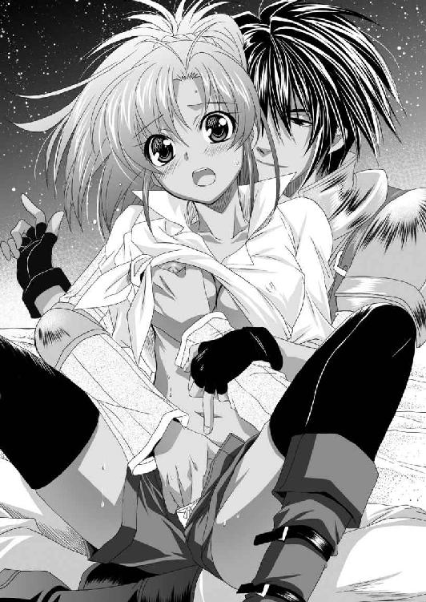
シャリシャリとした陰毛が指に絡みつく。
陰毛の本数はあまり多くない。どちらかというとパイパンに近いかもしれない。
そのため、肉裂の存在をすぐに確認できた。
「ああ、こら、そんなところ、触ったらダメぇ」
ヴェルは抵抗しようとしたが、もはや後の祭りだ。
ロクトの右の掌は大陰唇を掌で包み、マッサージをする。
「だだ、ダメ、やめて、ボク......ボクは......」
男の膝から逃れようとする乙女の、小陰唇を人差し指と中指の間、中指と薬指の間で挟んだ。
クチュクチュクチュクチュ......。
中指が肉割れの中を卑猥な水音を立てながら捏ね回す。
「ああぁ♪」
ついにヴェルは大きく口を開けて、甘い悲鳴を上げた。
性に未熟な女でも、背後から抱きしめられて乳房や陰部を刺激されると感じやすい。それは男の腕が、普段ひそかに自涜している時と、同じ角度で入ってくるから、安心感があるからだと言われている。
左の胸と陰部を弄ばれたヴェルが甘い吐息を漏らし始めたことを見て取ったロクトは、さらに頃合いを見計らって、割れ目の始まりの部分に中指を置き、引き上げた。
「ひっ」
クリトリスが剥け出たことを察したロクトは、そのコリコリとした器官に中指を添えると、優しく撫で上げてやる。
「あ、ダメ、そこ、ダメ、そこ、そんなふう、されたら、ひぃあん♪」
乙女の悲鳴など関係なく、ロクトの中指は一定の速度で、硬い肉芽を下から上へと、何度も角度を変えて撫で上げる。
そして、クリトリスが完全に勃起したところを見澄まして、中指と人差し指の狭間で摘み上げた。
「ひぃぃぃぃぃ」
「これがお前のクリトリスか。小粒だがなかなか敏感じゃないか」
悶えるヴェルに揶揄の言葉を浴びせながら、ロクトは愛液をたっぷりと絡めた人差し指と中指を交互に上下させ、勃起した淫核の側面を執拗に弄ぶ。
「ああ、そんな......そこ、ばかり......らめぇ～～～」
はじめは小さかった淫核も、いまでは弾けそうなほどにぷっくり膨らんでいる。
それを円でも描くように弄り回してやった。
「どうだ、こうされるの、気持ちいいだろ？」
「う、うん......」
ヴェルはしぶしぶといったていであるが、認めた。
頬を染めて恥じ入る顔とは裏腹に、捕らえられた淫核はヒクヒクと小刻みに震えている。
若いころから女に不自由したことのないロクトは、これが絶頂の寸前であることがわかっているが、すぐにはイかせない。じっくりと時間をかけて弄び、ヴェルがイきそうだな、と察すると指を離し、少し経つとまた優しく摘んだ。
「そ、そんな～～～」
決して望んだ快楽ではない。しかし、執拗なクリトリス責めの生殺しに、ヴェルは世にも情けない表情で身悶える。
口元はだらしなく緩み、目の焦点も合わない。
ホットパンツのまたぐり部分が濡れて変色し、二つの穴から出ている健康的な足の内側がテラテラと濡れ輝く。
健康美少女の理性と肉体は完全に溶かされた。
「はぁ、はぁ、はぁ、もう......」
「どうして欲しい？」
「イ、イかせてください」
もう限界といったていのヴェルは、理性を失って懇願した。
それと悟ったロクトは、勃起しきった剥きだしの淫核を、ツンツンツンツンツンと高速で小突き回した。
「ひぃっ、ひぃっ、ひぃっ、ひぃっ、ひぃっ」
ロクトの指先で小突き回す速度が上がるに従ってヴェルの悲鳴は甲高くなり、夜の砂漠に吸い込まれていく。
「ああ、もうダメェェェェェェェェ！！！」
ビュッ！
ビクビクビクビク。
女主人に忠実な従騎士は、女主人の旦那様に悪戯されてイってしまった。
ヴェルの肢体が激しく痙攣している間、ロクトの中指はクリトリスを押したままだった。
「ああ、ああ、ああ......気持ちいいぃぃ」
トプトプトプ......。
引き締まった下腹部が激しく痙攣し、膣穴から愛液が大量に溢れ出した。
お陰で、ホットパンツの中は失禁でもしたかのように大洪水だ。
頃合いを見計らってロクトは、ホットパンツから右手を抜くと、ヴェルの鼻先で指の間に糸引く粘液を見せつける。
「いい濡れっぷりだな」
「もう......意地悪」
赤面したヴェルは、視線を明後日の方角にずらしながら、口を尖らせて不満を言う。
「ここまでされても、俺とやりたくないか？」
「はぅ......大将って、見た目通り、野獣だよね」
「酷いな」
ロクトは愛液滴る指を、ヴェルの小さな口の中に入れる。
ヴェルはまるでフェラチオでもするかのように、自分の愛液のかかった男の指をしゃぶってから口を開いた。
「だって、エリザベート様みたいな素敵なお嫁さんをもらったのに、あの家令のお姉さんに、女狐将軍、そのほか、大将のためなら、いつでも股開きますって女騎士がそこらじゅうにいる。そして、今度は奥方様からのお目付役であるボクにまで手を出そうというんだから」
「俺はお前が好みなんだよ」
そう宣言したロクトは、ヴェルの身体を反転させると、唇を奪った。
「う、うう......うむ」
小さな唇を舐め回し、小さな前歯を舐め、小さな舌を搦め捕る。
そうやって情熱的な接吻をしながら、ロクトの両手は素早く、ヴェルのホットパンツと下着を引きずり下ろしていた。
そして、接吻を終えたところで、鼻先で宣言する。
「やらせろ」
ロクトの前で膝立ちになってヴェルは、なんとも歯切れ悪く応じる。
「うん、まぁ、エリザベート様を裏切ることになっちゃうけど......。大将みたいな人が出さないと身体に悪いよね。他の女騎士と浮気するよりは、ボクとやったほうが、まだエリザベート様は納得できると思うし......」
ヴェルの基準は、どこまでもエリザベートであるらしい。
いささか呆れながらも、ロクトは逸物を取り出す。それを見下ろしたヴェルは目を見張る。
「うわ、予想はしていたけど、でっかい。太くて大きい。そんな大きいのを入れるの」
「ああ」
ロクトの言葉に、ヴェルは頬を引きつらせる。
「と、当然、エリザベート様の中にも入れたのよね」
「夫婦なんだから当然だろ。さぁ、グダグダ言ってないで、始めるぞ。俺はもう我慢できねぇ」
ロクトは、ヴェルの小さな尻を抱えて引きずり下ろす。
「ひぃ」
諦めた表情を浮かべたヴェルは、素直に膝を開いて腰を下ろす。
陰毛の少ない濡れた陰唇に、いきり立つ肉棒が添えられた。
「お前、初めてなんだろ」
「うん」
傍から見ても、処女と丸わかりの娘は、素直に認めた。
「なら、力抜けよ。下手に気張ると、変なところ裂けたりするかもしれないからな」
「うん、わかった......あ、でも、やっぱり、エリザベート様を裏切るわけには......」
「諦めて俺の女になれ」
いつまでも煮えきらない少女に業を煮やしたロクトは有無を言わさず、逸物を叩き込む。
巨大な肉棒が、小柄な少女の股間にゆっくりと沈んでいく。
ブチっ！
「は、はぁぁぁ」
乙女の証を打ち抜かれた少女は、ロクトの頭を抱いて夜の月に遠吠えする狼のように口を開く。
ズブ、ズブズブズブ......。
その後も巨大な肉棒は問題なく沈んでいき、ついには最深部を穿つ。
破瓜の痛みに顔を歪めながら、ヴェルは非難してくる。
「くっ、熱い。それにガンガンに硬い......、こんな凶悪なものを、あのお綺麗なエリザベート様に入れただなんて、鬼畜な所業だわ」
「仕方ねぇだろ。夫婦なんだから。そんなことより、あんなすかした女のオマ○コより、お前のオマ○コのほうが気持ちいいぜ」
「そんなこと、言ったら、ダメぇ......。エリザベート様のオマ○コのほうが、気持ちいいに、決まっているんだから」
どこまでも主人に忠実な娘である。
単純に襞の豊富さとか、柔軟性では確かにエリザベートのほうが上かもしれない。しかし、締めつけのよさという意味なら、ヴェルに軍配が上がるだろう。
（まぁ、オマ○コの出来不出来なんて、関係ないけどな。ようはその女が好きか嫌いかで、気持ちよさは決まる）
単純にロクトは、エリザベートのような女が好みではなく、ヴェルのような女のほうが好みだ、ということだろう。
ヴェルのせいで最近、溜まりに溜まっていたものが早く出たいと、逸物を駆け上がってくる。
「いくぞ」
ここは戦場であるし、そうそうゆっくりできない。
それに相手は初めてでもあるし、下手に頑張るよりも、さっさと射精してやるのが優しさだろうと、感じたロクトは、ヴェルの胸に顔を埋め、小さな乳首に吸いつきながら、腰を激しく上下させる。
「はぁ、はぁ、はぁ、はぁぁ、凄い、オマ○コが、オマ○コが広がっちゃう」
ザラザラで鋭角なまでの襞肉が、肉棒を刺激してくる。
それはいろいろな意味で欲求不満であったロクトには心地よい刺激であった。
「いくぞ」
「はぁ、へ、ああ、ひぃぃぃぃぃ」
宣言と同時に、ロクトは欲望を吐き出す。
ドビュ！ ドビュビュッビュ！！！
小柄な少女の細い腹部に、野獣の如き男の溜まりに溜まった欲望が吐き出される。
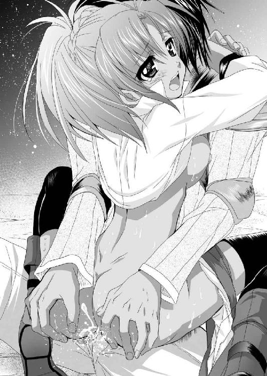
「あ、ああ、凄い。熱い、熱いものがいっぱい、中にいっぱい、入って......くる、あぁぁぁぁぁ！！！」
ビクビクと全身を痙攣させたヴェルは、そのままぐったりと頭を後ろに下げて脱力する。
膣内に男の欲望を注ぎ込まれるというのは、女に本能的な歓びを与えずにはおかないのだろう。
破瓜の痛みも忘れたように、惚けた表情になってしまった。
やがて我に返ったヴェルは、世にも情けない顔でぼやく。
「あぁ、ボク、どうしよう？ エリザベート様の郎党なのに......エリザベート様の旦那様にやられちゃった」
この期に及んでまだ、そんなことを心配しているヴェルに苦笑しながら、ロクトは応じる。
「そういえば、同じ男にやられた女を、棒姉妹というそうだぞ。これでお前とエリザベートは棒姉妹だ。より関係が深まってよかったじゃないか」
「はぁ、はぅぅん......最低っ」
ロクトの胸に顔を埋めたヴェルは、無言でポカポカとその胸を叩いた。
※
「さて、上手く逃げきれるかな」
先の戦いで、フルセン軍はその軍事物資のほとんどを使ってしまった。ここでさらなる一戦をする余力はない。
新妻の信頼する従者をコマした翌日、ロクトは背筋の粟立つような思いを味わいながら退却していた。
このような場合、最強部隊に殿を任せるのが軍事の鉄則だ。よって、殿はロックス党が務めることにした。
当然、ロクトをはじめとした三人の息子が、それぞれ部隊を率いて最前線に立つ。
「ロクトは中央、ロベルトは右翼。ロミオは左翼だ。気を引き締めろよ」
「承知」
父親の指示に、フルセン軍最強の三兄弟は、決死の覚悟で配置につく。
死地に赴かんとする彼らに、先行する部隊は気持ちばかりの弓矢弾薬を置いていった。それを分ける傍ら、末弟のロミオが情報を披露する。
「聞いたか。敵さんの総大将は、あのウナギ将軍に変わったそうだぞ」
「そいつはまた、愉快な情報だな」
戦役の当初は無名であった敵将リュシアン。その名はもはや、フルセン軍の中にあっては、無視できない。いや、もっとも有名な名将として人々の脳裏に刻まれていた。
この油断のならない知将が、全軍の指揮権を握ったとなれば、当然、こちらの思惑を見抜いてくる、と考えておいてしかるべきだろう。
「お前ら、ここが命の捨てどころだぞ」
「承知している」
「ああ、先にいった者から、天女様の綺麗所を掻っ攫おう。早い者勝ちだ」
長男ロクト、次男ロベルト、三男ロミオ、三兄弟は軽く水杯を交わして別れた。
そして、案の定、フレイア軍は姿を現す。リュシアン将軍を総大将に、エスターク将軍、ヒュンケル将軍、セルゲナス将軍といった歴戦の猛者たちが目の色を変えて追ってくる。
「やっぱ、来やがったか。そりゃ来るよな」
ロクトは豪快に笑い飛ばし、エルフィンは茫然と呟いた。
「追撃だと、先日、あれだけ痛めつけられたばかりだというのに......」
敵の追撃の意志を削ぐために、わざわざ起こした流砂の戦いの戦略的な意義は、完全に崩壊したのだ。
「鶴翼に展開。敵を十分に引きつけたところで一斉射撃」
戦略的には失敗続きのエルフィンだが、さすがに采配は冴えていた。敵の追撃軍を見事に撃退する。
「よし、深追いは無用だ。この隙に撤退する」
ロクトの指示に従って、剽悍な兵士たちは一斉に背を向けて逃げ出す。
しかし、この時のフレイア軍はいままでにない粘りを見せた。エスターク、ヒュンケル、セルゲナスといった三将軍に率いられた前衛部隊は、すぐさま軍を立て直して追撃を再開してくる。
「敵、さらに追撃してきます」
「ちっ、しつこいな」
舌打ちをしたエルフィンは、再び兵を展開して追撃軍を撃退した。そして、退却を再開。
しかし、フレイア軍は諦めずに、追撃してくる。
それを再びフルセン軍が撃退してから、退却。またも、フレイア軍の追撃が始まる。
その繰り返し撤退だ。
戦いには勝っている。しかし、刻々と破滅の時が近づいていることを、最前線のロクト、そして、後方のエルフィン。そして、多くのフルセン軍の諸将は察していた。
「大将、やばい。もう矢がないよ」
ヴェルが窮状を訴えた。
「わかっている！」
ロクトも焦りながら叫ぶ。
（総大将が違うと、こうも、兵士の質が変わるものなのか？ 昨日までとはまるで別の軍隊と戦っているみたいだぜ）
あの逃げてばかりの弱兵集団とは別物である。
戦って勝っては退き、戦って勝っては退き、フルセン軍は故郷を目指す。
（あと少し、あと少しでターラキア山脈に入る）
そこは国境であり、天然の要害だ。ここにまでたどり着ければ、撤退は完了だ。
希望の光と同時に、絶望の闇が襲い来る。
「敵にさらに増援。あの旗印はマージョリー将軍です」
「あのバイタか！ ......いいタイミングで出てきやがる」
元セルベリア王国の将軍で、フルセン王国には投降せずに、フレイア王国に亡命した女だ。
いろいろな意味で、フルセン軍を恨んでいるだろう。
その部隊に、軍の右側面に回り込まれた。
（ヤバイ、崩壊する）
半包囲陣に捕らえられ、精強を誇った殿軍の秩序が失われようという時、さらにダメ押しがきた。
ヴェルが叫ぶ。
「大将、矢が切れたっ!?」
驚きはなかった。この報告がいつかはくるだろうと覚悟していた。ついにきたるべきものがきた、ということだろう。
（ここまでか）
弓箭というのは戦場の主力だ。これがなくては秩序だった戦闘などできない。
もう脇目も振らずに逃げ出すしか手はなかった。
当然、背後から一方的に矢や刃を浴びせられる。損害はいままでと比較にならないものとなるだろう。
「ヴェル、お前は先に行け！」
「でも」
「矢のない弓兵なんて足手纏いでしかねぇんだよ！」
ロクトの怒声に煽られたヴェルは、しぶしぶ先に駆けていった。
それを見送ったロクトは、残った野郎たちに檄を飛ばす。
「よ～し、ここからはお前らの大好きな肉弾戦だ。斬って斬って斬りまくれ」
「おお！」
ここで残るのは死兵だ。味方を逃がすために、肉壁となって死ぬまで戦う。
決意を固めたロクトは長柄の戦斧を握り直した。そこに思い掛けない声を背後から浴びせられる。
「よし、お前ら、よくやった」
「親父っ!?」
そこにいたのはフルセン軍の筆頭家老にして、ロクトたちの父親であった。
「なにしに来た！ ここは俺たちの鉄火場だぜ！ ロートルは引っ込んでいろっ！」
殺気だったロクトは叫んだが、ロックスは豪快に笑った。
「お前こそ、引っ込んでいろ。ひよっこどもに、真の戦というものを見せてやる」
「親父......」
自らが捨て石になることを、父親が選んだということを、ロクトは瞬間的に悟った。
息子たちを見殺しにするくらいなら、自分が死ぬ。ある意味、人の親として健全な情なのかもしれない。しかし、ロクトは納得しなかった。
「馬鹿言ってんじゃねぇっ！ 自分の立場を考えろっ！」
まだ若いロクトは、肉体的にも最盛期だ。誰にも負ける気がしない。
それに対して、ロックスは初老だ。単純な戦士という意味では、終わっている。
そして、何よりも、世の中には名声というものがある。
ロックス将軍は、フルセン軍の武の柱だ。それに死なれたら敵味方に与える影響は巨大なものとなるであろう。下手をしたらフルセン軍は立ち直れないほどの打撃を受けるかもしれない。
一方、ロクトが戦死しても、それはよくある勇士の最期に過ぎないのだ。
「てめぇこそ、いつまでも、親父の脛をかじっているんじゃねぇ！ 俺が死んだら、お前が我が家の主だぞ」
軍神と言われた男に、一喝されたロクトは立ちすくむ。
「早く行け。俺がウナギなんかに殺されると思うか」
「ったく、年寄りの冷や水だぜ」
苦笑したロクトは父親の背中に背を向けた。ロクトに従っていた男たちもみな追い払われる。
その場に残るのはロックス一人だ。
「それからな......」
去り際に聞こえたロックスの声に、ロクトが振り返ると、父親は敵陣を見たままだった。
大きな背中だ。
ロクトはこの父親が死ぬということを想像したことがなかった。
物心ついた時から、絶対の壁として、厳然とそそり立っていた大きな存在だ。
成長し、いまは自分のほうが背も高くなり、個人的な武勇でも強くなっているはずなのに、まったく勝てる気がしない。
こんな人物だから、この絶望的な状況からでも、平気な顔で帰ってきそうな気がしたのだ。
「いろいろと不満はあるかもしれんが、縁あって妻にしたんだ。エリザベートをもっと大事にしてやれ」
「余計なお世話だ」
そう言い捨ててロクトは、再び踵を返した。
死を決していたロクト、ロベルト、ロミオの三兄弟は、無事にターラキア山脈にて再会することができた。
しかし、待てど暮らせど、彼らの父親が、再びその威容を見せることはなかった。
「我々は勝って勝って勝ちまくった。なんら恥じることはありません。堂々と胸を張って凱旋しましょう」
王都アヴァロンを前に、ロクトは若き主君エルフィンをそう励ました。
確かに戦闘では悉くフルセン軍の勝利である。敵の迎撃軍の司令官ダングラール将軍を負傷退場させるほどの大損害を与えた。
しかし、当初の戦略目標であるエバーグリーンの攻略はならず、また起死回生を狙った王族将軍リュシアンの首級を取ることも叶わず、しかも、退却戦のおりには......。
「ロックスを殺してしまった......」
ターラキア山脈から王都アヴァロンまでの道程のエルフィンの落ち込みようは目を覆わんばかりのものがあった。
戦争である以上、戦死者が出ることは避けられない。とはいえ、この戦死はエルフィンにとって特別であった。
まずエルフィンが即位してから、いや、初陣してから、初めての高級幹部の戦死である。
そして、何よりもロックスの存在は特別であった。
祖国が滅び、セルベリア王国で人質同然の生活を送っていたエルフィンを守り育てたもっとも身近な家臣である。
エルフィンには父親はいない。もちろん、前フルセン国王が血縁上の父親ではある。
しかし、物心ついた時には国は滅び、国王も自刎してしまっていた。
そんなエルフィンが身近に父性を感じていたのは、ロックスであろうことは想像に難くない。
「ぼくの判断ミスで......」
主君の言葉をロクトは強く否定した。
「親父は武運に見放されて死んだ。それだけです。陛下はこれまでも多くの者たちを死地に追い込んできました。そして、これからもそうでしょう。親父もその中の一人に過ぎません。だから、あまり落ち込んだ姿を国民の前に晒さないでください。そんなことをされては、本当に負けたことになってしまう」
無理やりに、エルフィンの胸を張らせ、凱旋式を終わらせたロクトは、それから国王の私室に押し込んだ。
陰気な主君と別れて室外に出ると、灰褐色の長髪の女が腕組みをしながら待ち構えていた。
「あいつ、このままダメになってしまうのかしら？」
「......カーラか」
外様貴族である彼女は、再興されたフルセン王国のありようを、どこか皮肉げに見ているところがある。
フルセン王国と浮沈を共にする気はない。もちろん、美味しい目にはあずかりたいとは思っているだろうが、落ち目となれば、躊躇うことなく他国に寝返るだろう。
「だとしたら興醒めよね。竜頭蛇尾もいいところ。天才少年も実際は打たれ弱いただの子供ってことかしら？」
それほど寛容ともいえない性格のロクトは、いままで我慢していたストレスをぶつけるように怒鳴りつけた。
「うるせぇ！ てめぇの皮肉に付き合っている暇はねぇんだよ！」
「あぁ、怖い怖い」
やれやれと言いたげに肩を竦めたカーラは、背を向けて去っていった。
女将軍のスタイリッシュな後ろ姿を見送りながら、ロクトは肩を落とし力なく呟く。
「陛下は立ち直るに決まっているだろうが......」
立ち直ってもらわないと、出来たての新興国であるフルセン王国はあっさりと瓦解するだろう。
そこにカーラと軽く挨拶を交わしてすれ違った紫銀色の豊かな長髪の女が、颯爽と歩み寄ってきた。そして、ロクトの前で丁寧にお辞儀をする。
「お父上のこと、お悔やみを申し上げる」
「いや、父は骨の髄まで戦士だった。戦場で死ねて本望だったろう」
ロクトの返答に、軽く藤色の瞳を細めた女将軍ヴァレリアは、真面目な顔で頷く。
「エルフィンのことは任せろ。わたしが必ず立ち直らせる。貴様は貴様の務めを果たせ」
「ああ、わかっている」
主君のメンタルも心配だが、ロクトも自分のことでいっぱいいっぱいだ。
いままでロクトが好き勝手やれていたのは、なんだかんだ言って、後ろにロックスという巨大な後ろ盾があったからである。
しかし、もうその頼りになる父親はいない。これからは否応なく自分の足で立つしかないのだ。
（ロックス党だけで、二千人の兵士だ。その家族を合わせれば一万人の生活が俺にかかっている。いや、国家の重鎮として、この国のありように対する責任も果たさねばならないだろう）
前途多難であることは想像に難くない。いままで感じたことのなかったプレッシャーが双肩にかかり、足の竦む思いだ。
ロクトに弔辞を述べたヴァレリアは踵を返し、厳しい表情でエルフィンの部屋の中へと消えた。
（まぁ、こういうのは女の仕事か）
研ぎ澄まされた刃のような女将軍である。優しく慰めるということはまずしないだろうが、ロクトの言葉よりは効果がありそうだ。
主君のことはその恋人に任せて、ロクトは自らの務めを果たすべく、屋敷に戻った。
「お帰りなさいませ」
王宮から一番近い屋敷では、正室のエリザベートを中心として、レイニーなど留守宅を守っていた人々が勢ぞろいして出迎えた。
「......うむ」
どう挨拶をしていいか悩むロクトに、喪服をきたエリザベートがドレスの裾を掴んで頭を垂れる。
「このたびは御苦労様でございました。まずは旦那様のご無事なる帰還をお歓び申し上げます」
「あぁ」
生返事をするロクトに、エリザベートはどこまでも完璧に振る舞う。
「そして、義父様のこと、心からお悔やみを申し上げます。ふつつかな嫁であるわたくしにも気をかけてくださった立派な義父様でした。その勇壮なる最期を聞き、わたくしの胸は張り裂けんばかりの悲しみに覆われました。まして、旦那様のご心労はいくばかりか、わたくしなどには計り知れないものと心得ます」
相変わらず如才のない女である。出来すぎていて、面白くない。
ロクトは傲然と胸を張りながら、屋敷の者たちに命じる。
「親父の葬儀は国葬として、陛下が取り仕切る。ロックス家の家督は俺が継ぐ。その覚悟でいてくれ」
「はい」
ロックスの生前から嫡男として扱われていたのだし、国王の従姉を妻にしているロクトが後継者になることに異議を唱える者はいなかった。
※
「兄者。俺たちは別家を立てても、ロックス党の一員であることは変わりない。兄者の捨て石となる覚悟は常にできている。命が欲しい時はいつでも言ってくれ」
旧当主の葬儀が終われば、新当主の家督相続の儀式がしめやかに行われる。
その席で、次弟ロベルトと、三弟ロミオ、末妹ロージーは声を揃えて宣言した。
彼彼女らはいずれも国王の覚えめでたき勇者たちだ。ロクトが家督を継ぐに従って、いずれも分家を立てることが正式に決まった。
いずれも百騎ずつ持っていく。
「ああ、我ら一同、フルセン王国のために死ぬるが本分と心得よ」
一族郎党を前にロクトが力強く宣言した時である。
城から急使がきた旨を執事であるレイニーが告げ、耳打ちした。
「なにっ！ それは本当か!?」
報告を受けたロクトは、思わず絶句した。
レイニーは厳しい表情で頷く。
「使者の者がそう申しております。急ぎ城に上がられますようにとのことです」
「あいわかった！」
新当主の只事ではない様子に、郎党たちは顔を見合わせる。
しかし、いまはそんなことをに構っている暇はない。ロクトは慌ただしく席を取った。
「いまから城に行く。ロベルト、ロミオ、ロージー、お前らも来いっ」
城で容易ならざる事態が出来したことは明らかだ。ロックス党は余計なことは言わずに、家督相続の儀式を早々に切り上げた。
騒然とする一同の中で、ロクトの正室であるエリザベートは泰然として見送る。
慌ただしく城に上ったロクトは、会議室に足を踏み入れると同時に叫んだ。
「ウナギ野郎が出奔したってのは本当ですかっ!?」
会議室にはすでに国王エルフィンをはじめとした重臣たちがずらりと顔を揃えていた。
やはり、家督相続の儀式をしていたロクトたちが一番遅れてしまったようだ。
「ああ、いずれの筋からも同じ情報が来ている。間違いない」
上座の席についていたエルフィンが、面白くもなさそうな顔で吐き捨てた。
主君の言葉を疑うわけにはいかないが、それでもロクトには信じがたい情報である。
茫然と呟く。
「そんなことがあり得るのか......？」
あれだけフルセン軍を苦しめた容易ならざる知将が、いまはフレイア王国にいないというのだ。
ロクトの父親ロックスは、リュシアンとの戦いの中に散った。風の噂によると、リュシアン将軍が自ら討ち取ったともいう。
実にわかりやすい父親の仇だ。
来年にでも、再出兵となったら、必ずや自分の手で首級を取らねばならない相手だ、とひそかに思い定めていた。
それがまさか戦う前に国を去ることになろうとは、どうしても現実感を伴わない情報である。
それはロクトだけの感想ではない。背後に従っていたロージーも、困惑を隠そうともせず小首を傾げる。
「罠じゃないの？」
その根拠のない観測に、『薔薇の剣姫』といわれる女剣士ブライザが鋭く反論する。
「どういう罠だ？」
「そんなことは決まっている。あたしたちを油断させるための罠だ」
「いまこの局面で、我々を油断させることにどんな意味がある」
もはやフルセン軍は王都に撤退している。国境を突破されたわけでなく、油断したところで、敵の強襲の受けようがない。
「そんなのあたしがわかるはずないじゃん。でも、相手は全身知恵の塊みたいな野郎だよ。その行動には常に裏があると考えたほうが自然じゃないか」
「貴様がリュシアンを恐れること、柳を見て幽霊と思うが如くだな」
「ちょっ、何あんた、あたしに喧嘩売っているの！ いいわよ、買うわ！ この陰険貧乳女！」
無駄に喧嘩っ早い妹の頭を後ろから叩いて、三弟のロミオが口を挟む。
「とにかく、詳しい事情を教えてくれ。フレイア王国で何があった？」
そこで事情通のマリオン将軍が、集めた情報を整理して語って聞かせる。
「結論として、フレイア国王マドアスと、リュシアンの間に権力争いがあった。そして、破れたリュシアンが出奔したということだろう」
かつて父親が座っていた椅子に座ってロクトは、腕組みしながら呻く。
「それでウナギのやつはどこに消えた？」
「さぁ、その足取りまではまだ掴めてない」
いかに当面の敵として、たくさんの密偵を使っていても、所詮は外国でのことである。そうそう素早く正確な情報が入るはずもない。
しかし、とにかくあまりにも予想を超えた事態である。
みながそれぞれに勝手な推論を述べあって、会議は紛糾した。
結局、混乱しただけの実りのない会議を終えたロクトは、言いようのない疲労感とともに帰宅する。
執事のレイニーが出迎えた。
「お疲れ様でした」
「あぁ、疲れた......」
ロックス家の当主としての初仕事の感想を、ロクトは素直に認めた。
「会議は踊る。されど進まずだ。親父の偉大さを改めて実感させられたよ」
今日の会議の無軌道ぶりは、かつてないものだった。
それだけ予想外の事態に直面して、みんな混乱している、ということもあるのだろうが、国家の重鎮であったロックスが抜け、国王エルフィンもまた覇気がなく、会議の流れを放置したためでもある。
「お食事になさいますか？ それとも先にお風呂になさいますか？」
「そうだな......。まずひとっ風呂浴びて汗を流すか」
一人湯船に入ったロクトは思わず慨嘆する。
「やっぱ親父がいないから......か。あの親父でも死ぬんだなぁ」
ロクトはロックスの最期を見てはいない。そのせいか、あの強い父親が、いまはもうこの世のどこにもいない、という現実がどこか夢心地であった。
「若様、お疲れでしたら、マッサージをいたしましょう」
「ああ頼む」
風呂から上がったロクトは、裸の腰にタオルを巻いた状態で寝台にうつ伏せになった。
その背中に跨がったレイニーは両手で力強く押してくる。
「ああ、いい気持ちだ」
「ありがとうございます」
戦場から帰り、慌ただしい戦後処理に追われていたロクトは、信頼できる女と二人きりとなり、ようやく人心地ついた。
そうなると、むくむくと性欲が湧きだしてくるのが、男というものだろう。
ロクトは後ろ手に手を伸ばし、パンストに包まれたレイニーの太腿を撫で回す。
「あ、いけません。帰陣からの一番槍。それだけは奥方様に差し上げるのが礼儀というものです」
「もう帰陣してから、幾日も経っている。その間、やつは特にやりたいそぶりも見せなかったぞ」
新婚早々に離れ離れになり、帰陣したらしたで、今度は戦後処理に奔走させられてロクトは、妻とろくな会話もしていなかった。
身を裏返したロクトは、右手を黒いミニスカートの中に入れて、恥丘をぐいっと押してやる。
「そ、それは喪に服していたのでしょう、ああ」
「お前のほうが溜まっているように見えるぞ」
パンストを巻き込みながら、膣穴に指を入れてやると、黒縁の眼鏡の奥で黒い瞳を潤ませながらも、レイニーはなおも抗言する。
「はぁ、しかし、こういうものには最低限の秩序が必要です。日陰の女が、奥方様より先にお情けを賜るなど、あってはならぬこと、ああ」
口ではいろいろと小うるさい理屈を言っても、ロクトに求められると、逆らえぬのがレイニーという女である。
ロクトは根っからのマゾっ気体質の女執事を弄びながら質問した。
「そういえば、俺が留守の間、あいつとは上手くやれたのか」
「そ、それは......はい。奥様には大変よくしていただきました」
「そうか」
自分のいない間に、エリザベートにレイニーがいびられているのではないか、と心配したロクトは軽く安堵する。
そこに騒がしい女の声が聞こえてきた。
「あ、また、浮気しているっ!?」
ヴェルの顔を見たロクトは苦笑しながら言い返す。
「お前だって、浮気相手だろ」
「ち、違うわよ。ボクのは犬に噛まれたみたいなもので」
必死に苦しい言い訳をしているヴェルを押しのけて、さらにもう一人、エリザベートが入室してきた。
「旦那様、お寛ぎのところ失礼いたします。少しよろしゅうございますか？」
ヴェルを相手にしたように、気楽に対応することもできず、ロクトはたじろぐ。
一方、旦那が女執事に指マンをしている真っ最中だというのに、それを見てもエリザベートの顔色は一切変わらない。
（ほんと妖怪じみた女だ）
貴族の正室として、非の打ちどころのない女であることはわかっている。
礼儀作法は完璧だし、笑顔も絶やさない。ロクトたちが留守の間も、しっかりと家を守ってくれたようである。
ロクトの母親とも、使用人たちとも、それなりに上手くやっているようだ。
しかし、そういう完璧なところが、またロクトには可愛げなく感じてしまうのだから、困ったものである。
愛情はまったく感じていないが、主君の従姉である。その立ち振る舞いや見識にも不満はないのだから、邪険に扱う理由もない。
お互い敬いながらも、一線を引いた関係といったところだろうか。
「ああ......なんだ？」
エリザベートから改めて、会話を切り出されるのは珍しい。
さすがに彼女の目の前で、愛人に指マンをしているのも気が引けたロクトは、レイニーの股間から手を離して向き直る。
レイニーは慌てて黒いミニスカートの裾を直すと、部屋の隅に控えた。
（こりゃ、いよいよ実家に帰ると言いだすかな？）
正直、ロクトも自分がよき夫を演じているとは、露ほども感じていないから、離婚という事態になっても驚かない。
しかし、エリザベートの口から出たのは、完全に予想外の質問であった。
「出征の日取りを教えていただけないでしょうか？」
「はぁ？」
戸惑うロクトに、エリザベートは笑顔で促す。
「留守を預かる者としても、いろいろと準備がありますから、出征の日時を教えてくださいませ」
「別に出征の予定などねぇよ」
投げやりに応じたロクトを前に、エリザベートのコメカミがピクリッと引きつった。
しかし、気を取り直したかのように、優しい声で質問を繰り返す。
「フレイア王国の西部方面軍の総大将リュシアン将軍が、内紛のために出奔したと聞き及んでおります。当然、この機を逃さず出兵なさるのでしょう」
エリザベートの賢しげな口出しに、ロクトはカチンときた。
「お前の知ったことじゃない。男の仕事に口を出すなっ！」
エリザベートは奥向きのことをやっていればいいのだ。それに関しては決して無能ではないのだから。
しかし、公の仕事に口出しされるのは不快極まる。去れとばかりに顔を背けて、腕を払った。
そんな横暴極まる夫を前に、エリザベートの声色も変わった。
「お待ちください。本当に出征を決めておられないのですか？」
「あぁ、俺たちは帰ってきたばかりだぞ」
ロクトの投げやりな返事に、エリザベートは大きく溜息をついた。
「どうやら、陛下が腑抜けになっているという噂は本当みたいですね」
「なにっ!?」
聞き捨てならない台詞に、ロクトは怒気を込めて睨みつける。
すると、そこには笑みのない女の顔があった。それだけではない。
（えっ!?）
グルングルングルン、ドスッ!
物騒な音とともに、ベッドに腰掛けたロクトの顔の左横を何かが通過して、木製の壁に突き刺さった。
「ひっ！」
悲鳴を上げたのはロクトの傍らに控えていたレイニーだ。
エリザベートの傍らに控えていたヴェルも、両手で口元を覆って、真っ青になっている。
何事か、と戸惑いながらもロクトが横目で見ると、自分の顔の左側面に突き刺さっているのは、手斧。いわゆるトマホークというやつである。
（ちょっと、待て、これは!?）
驚きながらも改めて前方を見ると、ゴージャスなドレス姿の女が、右腕を投擲後の姿勢で突き出している。
つまり彼女が、このトマホークを投げたということだろう。
「お、お前、いきなり何を......!?」
常に優しい笑顔で控えめに振る舞う淑女が、いきなり夫に向かってトマホークを投げつけたのだ。
にわかに信じられない事態に、ロクトの声は裏返る。
本日、二度目の絶句だ。
いや、リュシアンがフルセン王国を出奔した、という情報に接した時以上の驚愕が、ロクトの脳裏から全身を貫いた。
硬直しているロクトの視界では、エリザベートの傍らで、青い顔をしたヴェルが必死に主人を宥めている。
「エリザベート様、落ちついて！ 地が、地が出ています！」
「ああ、もういい！ 面倒臭い！」
蓮っ葉に吐き捨てたエリザベートは、美しくくしけずられていた黄金の頭髪を掻き上げて、バサバサにする。
「周りの連中が寄ってたかって、おしとやかにしていろ、と言うから、必死に猫かぶってやっていたけど、もう限界っ！！！」
およそ深窓の令嬢、貞淑にして賢婦といった女と思えぬ口調で吐き捨てたエリザベートは、足音も高く肩をいからせて歩み寄ってくる。左足を振り上げて、ロクトの脇の壁に足をかけると、ぐいっと力任せに手斧を引っこ抜く。
そして、手斧を持ったまま威圧するように顔を近づけてくる。
「旦那様、あなたは何ですか!?」
「え、......俺？ 俺はロクトだ」
普段とあまりにも違うエリザベートの凶悪な雰囲気にすっかり度肝を抜かれてしまっているロクトは、よくわからないが思ったままを口にする。
エリザベートは大いに頷いた。
「そう、ロクト。フルセン王国の軍神ロックスの後継者。武闘派一家ロックス党の主。すなわちフルセン王国の武を担おう者でしょう」
「......」
その評価をロクトは否定することはできない。そうあらんと欲しているのだ。
顔を少し引いたエリザベートは、斧の背で、自らの肩をトントンと叩きながら、凶悪な表情で見下ろしてくる。
「わたくしはね！ 旦那様が従者と懇ろだろうと、わたくしの側近に手を出そうと、とやかく言うつもりはありませんでした。しかし、今回の件だけは見過ごせません」
改めて顔を近づけてきたエリザベートは、目を眇めて口を開く。
「フルセン王国とは聖者の徳で立っている国ではありますまい！ 武力によって王位を簒奪してできた覇者の国です！ である以上、敵の混乱を、千載一遇の機会を見過ごすなどという選択肢はあり得ないでしょう！ 一刻も早く攻めるべきです！」
「いや、お前の言いたいことはわかるが、いま陛下はそのような精神状態にはない」
思わず宥めるロクトに、エリザベートは話にならないとばかりに吐き捨てる。
「ふざけたことを!? 覇者とは心が折れては終わりです！ もし、陛下が躊躇っているというのでしたら、ロックス家単独でも攻めるべきです！」
「無茶なことを......」
あまりにも過激な発言に、ロクトはすっかり気圧されてしまった。
「無茶ではありません！ 武断派には武断派としての行動が要求されます！ 死者の肉を食らうハゲタカと罵声を浴びせられようとも、なりふり構わず進んでいく！ それがこの国のありようです！ そして、あなたはそのハゲタカの爪であり、嘴です！」
エリザベートの言動は横暴を極めているが、一面の真理ではあるだろう。
「......」
ロクトが黙考していると、エリザベートは叫んだ。
「陛下の心が折れているというのなら、無理やりにでも接ぐ必要がある。それなのにウジウジウジウジと、煮えきらない旦那様だこと......金玉ついてんのかっ！」
エリザベートの剣幕に圧倒されたロクトは、頬から冷たい汗を流しながらもなんとか応じる。
「えっ、......いや、まぁ、ついているぞ」
「なら、確かめさせてもらいましょう」
すっかり目を白黒させているロクトの返答を聞いたエリザベートは、傍らのレイニーに命じる。
「レイニー。旦那様の腕を縛りなさい！」
「りょ、了解しました」
エリザベートのド迫力に流されたレイニーは、ただちにロクトの太い両腕を縛り上げた。そして、寝台に固定する。
抵抗しようと思えばできたのだろうが、ここはエリザベートの好きにさせるべきだと感じて、唯々諾々と従う。
気が付けば、ベッドに仰向けにされ、両手を頭上に上げた状態で固定されてしまっていた。
「な、何をするつもりだ？」
戸惑うロクトの身体を、素足となって寝台の上に乗ったエリザベートは。跨いで立った。
そして、顎を上げ、斜めに見下す眼差しの酷薄さは、身震いするほどのセクシーさである。
「根性なしの旦那の尻を蹴っ飛ばして活を入れるのは、妻の仕事というものでしょう。一つ活を入れて差し上げます」
左足を伸ばしたエリザベートは、ロクトの腰に巻かれていたタオルをまくり上げる。
中から出た男の象徴を見下ろし、エリザベートは失望の溜息をつく。
「あらあら、お久しぶりの対面だというのに、ずいぶんと小さいですね」
彼女が夫の逸物を見たのは、初夜以来のことであろう。
しかも、その時は一方的に男に身を任すおしとやかなお嬢様を演じていたから、まともに見ていないと思われる。
「そ、そりゃ......まぁな」
狂気の迫力を持った女が、刃物を持って威圧してきているのだ。驚愕のあまり逸物が竦み上がっていて当然だろう。
「まぁ、腑抜け野郎のおちんちんには相応しいですわね」
嗜虐的に笑ったエリザベートは、左足を上げると、恐る恐る縮んだ逸物に近づける。
爪先でツンととっついたあとに、爆発しないと納得したのか、目を輝かせて逸物を弄り始める。
逸物を足蹴にされるというのは屈辱だが、それはとりあえず無視して、縛られているロクトは質問した。
「お前な......それが地なのか？」
「ええ、嫁ぐにあたって父が、頼むからおしとやかにしてくれ、お前は黙っていれば誰にも負けない美人なんだから、と泣いて頼むものですから、猫を被っておりましたの。ごめんあそばせ♪」
ロクトは思わず、アチャーと言いたげな顔で、額を押さえているヴェルの顔を見た。
説明を求められていると察したヴェルは、両手を揉みながらおろおろ答える。
「えっと、その、騙すとかじゃなかったんだよ。エリザベート様が、この通り絶世の美女であることは確かなんだから。ただ、ちょっと過激な性格で、その......地を見せると、男は引くかなって、アハハ」
笑って誤魔化そうとするヴェルから目を逸らしたロクトは、いま一人の見物人に声をかける。
「レイニー、お前もあまり驚いていないな」
澄ました顔で控えている女執事は、礼儀正しく一礼を返した。
「ご主人様が留守の間に、親しくさせていただきましたから」
「そうか」
確かにロクトたちが出征している間、屋敷に残ったエリザベートの近くにいたのだ。否応なくその本性を見せつけられていただろう。
（知らぬは夫ばかりなりってか......）
おしとやかな深窓の令嬢にしか見えなかった妻の、本性を見せつけられたロクトは呆れた。
好奇心の赴くままにプニプニと左足で夫の逸物を悪戯していたエリザベートだが、やがて足下の逸物がみるみるうちに体積を倍増させていくことに驚いたようだ。
思わずバランスを崩しそうになって、慌てて両足で踏ん張った。
「うふふ、ほんと大きい。うちの旦那様は、肝っ玉は小さいのに、おちんちんの大きさだけはなかなかのものですわよね」
臍に付かんばかりに反り返った逸物を前に、エリザベートは満足そうな表情を見せる。
「てめぇ、さっきから聞いていれば、言いたい放題だな」
さすがにむかっとしたロクトは凶悪に唸るが、両腕を繋がれて固定されていたら、鎖に繋がれたライオンも同じである。
「うふふ、だって旦那様の逸物の所有権は、本来、正室たるわたくしのものでしょう。好きなように弄んで、なんの問題があるのかしら？」
「いや、ないが、ないけどしかしな」
理屈としては正しいはずである。確かに。
「それに、幾人の側室を持とうと、戦場から帰られた旦那様の一番槍を頂戴するのは、正室の権利と心得ておりますけど、違ったかしら？」
「一般にはそう言われているらしいな。まぁ、いいさ。好きにしな」
妻となったエリザベートに、まったく興味を持てなかったロクトであるが、いまになって少しばかり興味が出てきた、というのが本心である。
「では、好きにさせていただきます」
楽しげに笑ったエリザベートは、その場に跪くと、ロクトの裸体に添い寝するようにうつ伏せになり、その頬を手で押さえた。
「はぁ、逞しい身体に、逞しいおちんちん。まさに野獣の如き牡ですわね。これがわたくしの旦那様♪」
そう恍惚と呟いたエリザベートは、ロクトの唇に自らの唇を重ねた。
「う、うむ」
エリザベートは積極的に舌を出し、男の唇を舐め回して、奥に入れてきた。
拒むのもなんなので、ロクトも舌を絡める。
エリザベートが上から覆いかぶさっている形だから、トロトロの唾液が流し込まれてきて、ロクトは嚥下した。
やがて満足したらしいエリザベートは、唇を離す。
二人の間に透明な糸が引かれて、プツリと切れた。
「旦那様は政略結婚でしぶしぶわたくしと結婚したのでしょうが、わたくしは国一番の勇者と結婚できる、という幸運に胸が高鳴ったものですわ」
「そうなのか？」
そう言われるのは、悪い気分ではない。
「ええ、そうでなければ、顔も知らぬ男との結婚など、わたくしは受け入れなかったでしょう。一生海にいたと思います。愛する船を捨て、慕ってくれる仲間を振りきり、自分を偽ってでも、嫁いだ。良妻賢母な女になるのも面白いかと考えた」
「......」
ロクトは正直、エリザベートの過去をまったく想像したことがなかった。勝手によくいるお姫様と決め込んで、親に言われたから嫁ぐことを決めたのだろうと。ただそれだけの面白みのない女だと思っていた。
よく考えると、お互いまともな会話すらしたことがなかったのだ。
それがその心情を吐露されたことによって、認識を目まぐるしく改めさせられた。
「俺は取り澄ました顔よりも、いまのお前のほうが好みだな」
「嬉しいことを言ってくれますわね。さすがはわたくしの見込んだ旦那様♪」
莞爾と笑ったエリザベートは、ロクトの頬に接吻し、首筋を舐め、男の胸板を撫で回し、頬擦りをしていたかと思うと、不意に晒された男の腋の下に顔を突っ込み、クンクンと鼻を鳴らして匂いを嗅ぐ。
「あぁ、旦那様の匂いがする......♪」
恍惚とした声を出したエリザベートは、さらに夢中になって男の腋の下に舌を這わせたりしている。
くすぐったいがロクトは我慢した。やがて満足したらしいエリザベートは顔を上げて、今度は、胸板から腹筋を通って、逸物に顔を近づいた。
下半身を寝台から下ろしたエリザベートは、男の股の間に身体を入れて、いきり立つ逸物を両手で掴んだ。
初めて異性の生殖器を掴んだのだから、興味深いのであろう。
左右に交互に傾けてシゲシゲと観察したり、ギュッと握って硬さを確かめたり、シコシコと扱き上げたりしてくる。
「ほんと大きい。このおちんちんで、ヴェルを食べて美味しかったですか？」
さすかにヴェルに手を出したのはヤバイと思ったロクトは、しどろもどろになって言い訳する。
「お前の側近に手を出したことは、その......」
「別に謝る必要はありませんわよ。ヴェルは、わたくしが見立てた側室です」
「はぁ？」
思い掛けない返答に、ロクトは困惑する。エリザベートは逸物を弄り回しながら、楽しげに応えた。
「旦那様のような方が、おなごで不自由するなどかわいそうです。ですから、側室を用意するのは正室の務め。どうやら、旦那様はヴェルのことをお気に召していたようですから。付けてやれば必ず手を出すと思っておりましたわ」
「ふむ......。俺がヴェルに手を出したのは、お前の思惑通りだった、というわけか」
つくづく出来た女である。
「え、そ、そうだったのっ!?」
見学していたヴェルが驚愕で、跳ね上がる。
「うふふ、ごめんなさいね。全然知らない女とやられるよりは、自分の見立てた女とやられるほうがいいと考えたのよ」
どう応えていいかわからないロクトを前に、エリザベートは首を横に振るう。
「でも、それは女の浅はかな考えだったようです。自分の選んだ女とはいえ、旦那様の留守の間、旦那様のおちんちんが、他の女に入っているのだと想像するのは、身を裂かれるような嫉妬に苛まれましたわ」
恍惚と口を開けたエリザベートは、赤い舌を出し、亀頭部の鈴口をペロリと舐めた。
「あぁ、これが旦那様の味♪」
ペロリ、ペロリ、ペロリ。
頬を紅潮させたエリザベートは、亀頭部を丁寧に舐め回しただけでなく、亀頭と包皮の間に舌先を入れて、狭間をこそぎ回す。
「ちょ、ちょっと待て、お前なんか妙に上手いな」
ロクトは初夜以来、エリザベートを抱いてない。そして、その初夜の晩の彼女は、ただ男の前で股を開いて、処女をぶち抜かれただけの完全なマグロ女であった。
それがいまや頬を紅潮させ、鼻息も荒く、夢中になって逸物にしゃぶりつきながらも、的確に男の急所を攻めてくるのだ。
これがあの取り澄ました女と同一人物とはとても思えない。
ロクトの疑問に、エリザベートは得意げに笑う。
「それは旦那様が留守の間に、レイニーからいろいろと習ったからですわ」
「習った......て、何をだ？」
ロクトは傍らに控えているレイニーの顔をちらりと見る。
シコシコと肉筒を扱きながら、エリザベートは妖しく笑う。
「旦那様を喜ばせる方法を、ですわ♪ せっかく旦那様を喜ばせる方法に精通した方が身近にいますのに、教えていただかない手はないでしょう」
「えっ!?」
「奥方様を教育するのも、使用人の大事な仕事ですから」
仕事熱心な女執事は澄ました顔で一礼する。
「レイニーの指を旦那様の逸物に見立てて、一生懸命に舐める練習をしましたのよ」
それは涙ぐましい努力と称えるべきなのだろうか、呆れたロクトは論評する言葉もなかった。
エリザベートのほうは、肉棒の裏筋を舐め下ろしていき、肉袋に達すると、ぱくりっと口に含んだ。
モグモグと二つの睾丸を吸いだし、甘噛みしてくる。
やがて飽きたらしいエリザベートは肉袋から口を離すと、今度は手で肉袋を揉み込む。
「うふふ、どんな一騎当千の勇者といえども、ここは急所。この柔らかいタマタマを、指先でプチッと潰したら、頑是ない赤子のように泣いてしまうんでしょうね。あはっ、旦那様のおちんちんを弄るって楽しい♪」
（うわ、こいつドＳだ。間違いない。サド）
いままで向きあってこなかった新妻の正体に、ロクトは震え上がった。
一通り逸物を舐め終えて、唾液塗れにしたエリザベートは、左手で肉筒を掴むと、掌のくぼんだところを亀頭部に乗せて、弄り倒す。
「くっ......」
さすがはロクトのことをよく知っているレイニー仕込み。その技のひとつひとつが、実に巧みであった。
思わず呻いたロクトに、エリザベートは嗜虐的に笑いかける。
「あら、この程度で出さないでくださいね。わたくしの旦那様が早漏だなんて、悲しくなりますから」
「くっ」
言いたい放題のエリザベートにムカつかないと言えばウソになるのだが、ここまで言われて、あっさり出すのは癪に障る。よって、男の意地にかけて必死に我慢した。
そんな男の顔を見て、エリザベートは楽しげに笑う。
「うふふ、旦那様ってかわいい。さてと、では次のサービスといきましょうか♪」
存分に亀頭部を苛め倒したエリザベートは、一旦逸物から手を離して、左手の甲に付いた先走りの液体を美味しそうに舐めた後、いそいそと水色のドレスの胸元をはだけさせた。
中から水色の高級感溢れるブラジャーに包まれた乳房が姿を現す。
その谷間に思わず視線を吸い寄せられるロクトの前で、エリザベートはその胸当てをも外した。
プルリンっと巨大な果実が二つ、まろび出る。
「うふふ、わたくしがお好みではなかった旦那様も、このおっぱいだけは認めてくださっていたようですからね」
ロクトの食い入るような視線を楽しむように、エリザベートは自らの乳房を自慢げにそれぞれの手に持って持ち上げてみせた。
外見的には本当に完璧な女だ。
乳房も丸く大きく、張りがあり、まさにこれぞ理想の乳房というものを具現化したような造形美だ。
鮮やかなルビーレッド色の乳首も、大きすぎず小さすぎない。ただ、乳頭はかなり、ぷっくりと膨らんでいた。
「このおっぱいを使って、奉仕して差し上げますわ」
「えっ」
「パイズリというのでしょ。これはレイニーやヴェルにはできなかったことだと思いますけど、いかがかしら？」
傍らで見守っていたレイニーとヴェル。二人ともエリザベートとは比べるべくもないお粗末な乳房の持ち主たちだ。
エリザベートは、伸び上がるようにして上体を伸ばすと、その完璧な造形美を誇る乳房の谷間に、肉棒を包み込んだ。
「あはっ、温かい。わたくしの胸の中で一段と大きくなりましたわね。旦那様はほんとわたくしのおっぱいがお好きと見えます」
「そ、そりゃ......まぁ」
「あぁ、こんなビクンビクンと脈打たせて、旦那様のお大事はイヤらしいですわ」
異性の生殖器を胸に包んで、エリザベートのほうも興奮しているのだろう。
頬が紅潮し、緑の瞳が潤んでいる。
「旦那様が歓んでくれていると思うと、あぁ、妻として嬉しい♪」
興奮したエリザベートは、美しい裸体を上下に揺さぶった。
温かくムチムチでツルツルの肌によって肉棒が扱かれる。
（お上品で取り澄ました女だと思っていたが、なかなかどうして、好き者だな）
さらにエリザベートはテクニックを使った。両の乳首を内側に向けて、コリコリとした乳首を、逸物の側面に擦りつけてきたのだ。特に亀頭部の鰓の部分を刺激してくる。
「ああ、レイニー。あなたの教えてくれた、こ、このやり方、失敗ですわ。乳首が擦れて、女の身まで感じてしまう！ あぁ♪」
頬を赤らめ瞳を潤ませたエリザベートは、切なげに内腿を擦りあわせている。
「奥方様、殿方を楽しませるためには女も耐えねばならないのです」
「エリザベート様頑張って」
観客のレイニーと、ヴェルの声援を受けたエリザベートは、さらに顔を下に向けると、口を開けて舌を伸ばした。
胸の谷間から覗く赤黒い亀頭部を、ペロリペロリと舐める。
「奥方様、それでよろしいです。その形こそ胸の大きな女だけが許された男殺しの必殺技です」
レイニーの称賛を受けてエリザベートは、頬を紅潮させながら、必死にパイズリを頑張る。
「ふぅ......うん......ふむ......」
胸で異物を挟んで上体だけ上下させるなどという運動は、普段するはずもなく、結構重労働なのだろう。
エリザベートの白い肌が桃色に紅潮し、玉のような汗が噴き出し流れる。
その必死さがロクトの心を打った。
（や、やばい......なんか、こいつすげぇ可愛い）
そう思った瞬間、ロクトの中で何かが弾けた。
我慢していた肉棒の中を、熱い血潮が一気に駆け上がる。
「うっ」
男の呻き声とともに、エリザベートの鼻先で、亀頭部の口が大きく広がった。そして、白い液体が噴き出す。
どびゅっ！ どびゅっ！ どびゅゅゅゅっ！！！
糸を引きながら噴き出す白濁液が、エリザベートの美顔や白金色の髪を白く染めていく。
「あははっ、凄～い♪ 飛んだ。旦那様がこんなにいっぱい、わたくしにかけてくださった。あぁ♪」
精液を浴びながら、エリザベートは歓喜の声を上げていた。
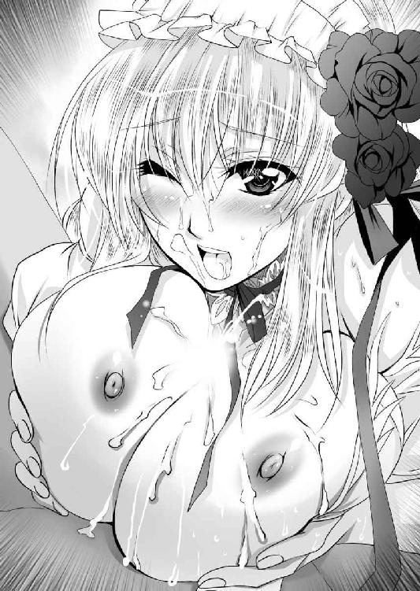
やがて射精が終わり、小さくなった逸物が胸の谷間から抜け落ちると、恍惚とした表情を浮かべたエリザベートは、顔や胸元にかかった精液を両手ですくい取り、ペロリペロリと舌を伸ばして舐め取っていった。
そして、一通り綺麗にしたところで、気取った表情を整えて、縛られているロクトの顔を見る。
「いかがでしたか？ わたくしのご奉仕は」
「ああ、最高だった」
ウソ偽りのない正直な感想だった。
「うふふ、わたくしは旦那様の妻なのですから、お望みなら、いつでもこの程度のことはして差し上げますわよ......あ」
得意げな表情を浮かべたエリザベートは、不意にスカートの上から股間を押さえて蹲った。
その何気ない仕草から、彼女の肉体に何が起こったか、手に取るように伝わる。
「そろそろお前のほうも我慢できないみたいだな」
健康な成人女性である。男の生殖器で遊んでいれば、自分の体内に受け入れたくなるのは、自然な欲求であろう。
まして、ロクトが戦場で好き勝手やっている間、彼女は貞淑な新妻を演じていたわけである。
顔を赤くしながらも、エリザベートは口を開いた。
「ええ、旦那様のお大事が欲しい」
「そうか、なら、この縄を解きな。たっぷりと可愛がってやるぜ」
「いえ、旦那様は長のご出征でお疲れでしょうから。わたくしが上になって差し上げますわ」
縄を解いたらロクトが逃げてしまうという不安でもあるのだろうか。縄を解くことを嫌ったエリザベートは、スカートの中に手を入れていそいそと水色のショーツを脱いだ。
「そうか。別に構わないが、そのままではお前の身体が傷付きそうだ。舐めてやるから、俺の顔に跨がりな」
「えっ!? わたくしに旦那様の顔を跨げというのですか？」
「ああ、なんの愛撫もしないで入れるのは無茶だ」
エリザベートは二ヶ月前に破瓜しただけの身である。いくら性的興奮に晒されているとはいえ、直接的な愛撫なしにいきなり挿入したのでは、痛んでしまう危険がある。
「何躊躇っている。さっきまでの強気はどうした？」
「いや、し、しかし、旦那様の顔を跨ぐなど......」
困惑しているエリザベートに、ヴェルが声をかける。
「大将にオマ○コ舐めてもらうの気持ちいいよ」
「それは知っています。しかし、わたくしのあそこは、その凄い濡れていて、こんな状態のものを、旦那様の顔面に、押しつけるだなんて、女として越えてはいけない一線のような......」
鬼姫という本性を現しても、根はいいところのお嬢様ということなのだろう。
自分から濡れた陰唇を押しつけるということはできないらしい。
「レイニー、ヴェル。手伝ってやれ」
「承知いたました」
「エリザベート様、失礼しま～す」
ロクトの指示を受けたレイニーとヴェルは、左右からエリザベートの腕を掴むと、強引に男の顔に座り込ませた。
ロクトの視界が、スカートに覆われて、真っ暗になる。それと同時にむわっとした牝の性臭に包まれた。
（今日は香水を仕込んでなかったようだな）
このようなことをすると思わず、事前準備を怠ったということだろう。
顔面にクチャッとした濡れたモノが押しつけられる。よくわからないが、とりあえず目の前のモノを舐め回した。
「あ、ダメ、わたくしのあそこ、いま凄いことになっているの!? そんなものを旦那様に見せるだなんて!? いやだ。これ以上、嫌われたくない！」
泣きそうな声を出しているエリザベートを、レイニーとヴェルが必死に宥める。
「奥方様、仮面をかぶっていたのでは、真の夫婦になれませんよ」
「そうそう。エリザベート様は、絶世の美女なんだから、裸でぶつかれば、どんな男だってすぐにメロメロになっちゃうよ。まして、大将は色魔人だよ」
レイニーとヴェルが協力して、エリザベートのドレスを脱がしたのだろう。スカートが取れるとロクトの視界が回復する。
ふわふわの白金色の陰毛の茂った恥丘の向こうに、二つの乳房があり、間から泣き崩れるエリザベートの顔が見えた。
その恥辱に塗れた美顔を見ながら、ロクトは夢中になって石清水を貪った。
「は、恥ずかしい......、でも、気持ちいい♪ 旦那様に舐めていただいていると、あぁ、身体が蕩けてしまう♪」
逃れたくとも、左右から側近二人に押さえられたエリザベートの身体は、ビクビクと震えながら大量の愛液を垂れ流した。
「も、もう～、だめぇぇぇ～～～」
白い下腹部を激しく波打たせたエリザベートが絶頂に達したのを見て取って、ロクトはクンニをやめた。
「いいぞ、入れな」
ロクトの指示に、エリザベートはしゃくり上げながら応じる。
「いえ、もう結構です。旦那様に舐めていただいて、わたくしは十分に満足しました。本日は生意気言ってすいませんでした。か、帰ります」
身をひるがえそうとしたエリザベートを、慌ててヴェルが押さえつける。
「って、エリザベート様。何ここまできて弱気になっているんですか。しっかり、オマ○コの中に出してもらわないと、後悔しますよ」
「そうです。奥方様が極めて気高い人だということは、みな承知しております。しかし、ここは恥も外聞も捨てて体当たりでいくところです」
半ば腰の抜けているエリザベートを、ヴェルとレイニーが左右から抱えて、ロクトの腰の左右に膝をつけ、跨がらせた。
その下では、ロクトの逸物が隆々とそそり立っている。
「では、いきます」
レイニーが左手を伸ばして、エリザベートの肉裂の左右に人差し指と中指を添えてＶ字に開く。
トロー......と透明な蜜が滴り、亀頭に浴びせられる。
「あぁ、見ないでぇぇぇ」
男女三人に恥部を晒したエリザベートは恥じて手で隠そうとするが、それすらもヴェルが押さえる。
「さぁ、腰を落としましょうね」
羞恥のあまり赤子のように泣くエリザベートは、自らの意思と関係なく左右の女たちに無理やり下ろされた。
ロクトの凶悪な逸物が、エリザベートの濡れた媚粘膜に触れる。そこからズボズボズボと華麗な肢体の中に飲み込まれていく。
「はぁ～、やっぱり大きい♪」
まるで股間から喉を通って、口から出てくると言いたげに、エリザベートは天井を仰いで、口を開いた。
そして、ドスンと最深部まで貫かれる。処女を捨ててから二ヶ月。二度目のセックスである。
「いかがですか、奥方様？」
「痛くないですよね」
レイニーとヴェルは気遣いながら手を離す。
「ええ、以前のような痛みはありませんわね。なるほど、女の身体はおちんちんを入れるためにできているというのは、納得ですわ」
なんとか落ち着いたエリザベートは体内に飲み込んだ逸物の感触を確かめるように、両手で下腹部を軽く押さえる。
ザラザラの襞肉がキュッキュッと肉棒に絡みついてきた。
破瓜の時のようなきついだけの締めつけではなく、きつすぎず、緩くもなく、程よい締めで、男を楽しませてくる。
完璧な造形美を誇る女体は、中身の構造もまた完璧であるらしい。
「あぁ、気持ちいい。旦那様のお大事を、身体に受け入れるのがこんなに気持ちいいだなんて......あぁ、幸せ♪」
「それでは、奥方様、お好きなようにお動きください」
出来る執事に促されたエリザベートは恐る恐ると腰を上げようとするが、それをレイニーは留める。
「上下に動かすよりも、まずは前後に動かしてください」
「ええ、わかったわ。こうかしら♪ ああん♪」
性戯の師匠に言われるがままにエリザベートは腰を前後に動かした。
「ああ、奥がゴリゴリ......ゴリゴリされるのって凄い。旦那様のお大事、気持ちいい♪」
動かしているうちにだんだんコツがわかってきたのだろう。エリザベートの腰の動きが素早いものになってきた。
「うお」
亀頭部がコリコリとした子宮口に嵌まって捏ね回されたロクトは、思わず雄叫びを上げてしまった。
気持ちいいが、ここで簡単に出したのでは、男として、夫としての面子が丸潰れであろう。射精を必死に我慢する。
「あぁ、あぁ、あぁ、あぁ......」
はじめは前後だけだったエリザベートの腰の動きも、左右が加わり、円運動が加わり、また上下運動もスムーズにできるようになってきた。
（おやおや、お上品な顔でオマ○コももうグチュグチュだな）
ロクトの視線を察したエリザベートは、そっと両手を、ロクトの腹部に置いて男女の結合部を隠した。
快感に溺れながらも、そういう恥じらいを忘れないところが、可愛く感じる。
このあたり、Ｍ字開脚となって結合部を見せつけていたカーラのようなすれっからしとは違うということだろう。
「ああ、旦那様、いかがですか。わたくし、わたくしの身体、わたくしのオマ○コは、わたくしとのセックスは？」
「ああ、最高だ」
ロクトの感想に、エリザベートは身震いした。
「あぁ、嬉しい♪」
歓喜したエリザベートは、ますます興奮したらしく夢中になって腰を使った。
大きな乳房が、ブルンブルンと踊る。
（くっ、こいつ、こんなにいい女だったか？）
確かに造形美としては、完璧な美貌を誇った女であることはわかっていた。しかし、どこか人形めいて生気を感じられなかった。
しかし、本性を晒したことで、活き活きとした魅力が出てきたのだ。
ロクトはこの女を孕ましたい、と本気で思った。と同時に逸物が制御不能に陥る。
「そろそろ、限界だぞ」
「あ、出す。出されるのですか！ わたくしの中に、中に旦那様の精液を」
肉棒がビクビクビクビク震えるのに合わせるように、膣洞もまたビクビクビクと痙攣している。
「ああ、出すぞ」
「ください。たくさん、たくさん、たくさん、たくさ～～～ん♪」
ドビュ、ドビュ、ドビュビュ！！！
肉棒から噴き出した熱い血潮が、子宮口を打ち溢れ返る。
「あぁ、ああ、あぁ～～～ん」
エリザベートは歓喜の悲鳴を上げてのけぞった。
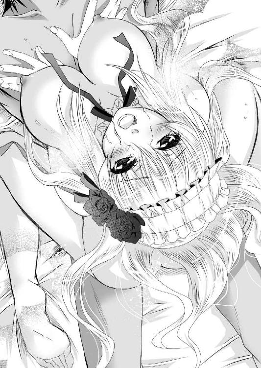
そして、ぐったりと脱力してから、顔を上げおずおずと口を開く。
「旦那様、もう一度よろしいかしら？」
「ああ、いいぞ。いままで寂しい思いをさせたんだからな。満足するまでやるといい」
「はい」
顔を輝かせたエリザベートは、再び理想の夫の上でいそいそと腰を振るい始めた。
※
「も、もう、いいだろう」
ロクトの悲鳴に似た言葉に、エリザベートは不満の声を上げた。
「なに？ もう限界ですの。国士無双と言われる男にしては、だらしないことですわね」
「もう夜が明けるぞ。一晩中、男の上で腰を振るっても満足しないって、お前は鬼か！」
「あら、鬼ですよ。旦那様はわたくしが実家で鬼姫と呼ばれていることを、最初からご存知だったんじゃありませんか」
狂乱するエリザベートの荒腰は止まらない。
「それに旦那様のおちんちん、すっごい気持ちいいんですもの。一日中、いや、ずっとわたくしの中に納めておきたい」
「お前は俺を殺す気か!?」
さすがに辟易するロクトに、エリザベートは妥協案を出す。
「もう、仕方ありませんわね。それでは旦那様、その......一言、愛している、と言ってくだされば、わたくし、今日のところは満足すると思いますわ」
「言えるか！ そんなこと！」
そんな微笑ましい夫婦の会話を聞きながら、ヴェルは溜息をつく。
「エリザベート様って、極端から極端に走るんだよなぁ」
レイニーも眼鏡を整えながら、溜息をつく。
「真面目な女が堕ちると、止め処がなくなる、というのはよく聞く話ですからね」
ともかくも、この一夜をもって、ぎくしゃくしていたロクトの家のわだかまりは晴れた。
「よし、お前ら、準備はできているな！」
フルセン王国の王都アヴァロンには寒風が吹いていた。
雲一つない冬の快晴であり、青々とした空は澄み渡り、キラキラとした光が降り注いでいる。
そんな中、筆頭家老の屋敷の前には、多くの兵士が集まっていた。
珍しいことではない。ロックス家は武断派の家。常に荒くれ者たちが集まっている。
いい陽気だから、演習でもするのだろう、となにも知らない者が見れば考えたことだろう。
しかし、そんな生易しいものでない命令を実行しようとしていたロクトは、整列した者たちの顔をひとりひとりじっくり見た。
総勢二千人。うち騎士と呼ばれる職業軍人が二百人。残りはそれぞれの郎党だった。
みんな顔を知っている者たちだ。それどころか、その家族構成だって把握している。
「結婚したんだってな。おめでとう」
「子供が生まれたんだってな。よかったな」
「お前の親父は凄い勇者なんだぞ」
などなど、事あるごとに声をかけ、濃密なコミュニケーションを取ってきた。いわば全員が家族である。
今回の出兵には、意図的に徴兵や傭兵は参加させていなかった。
なぜなら、奇襲作戦だからである。真冬のターラキア山脈を越えて、氷点下の砂漠を横断。敵城に奇襲をかける、という無茶なものだ。この作戦の成功の鍵は、隠密行動と速度にかかっているといって過言でない。
下手に募兵をしていたら、敵に気取られる危険性が増す。
困難な作戦だというのに、みな歓んで参加してくれた。
お世話になったロックス家の総領がやられるんなら、俺たちもやる、というノリである。
いずれも闘志に満ちた面構えに満足したロクトは、不意に次弟に声をかけた。
「ロベルト、お前は残れ」
「......」
剣術の達人である次男坊は、顎を引き、貫くような眼差しで睨みつけてきた。
ロクトは理由を説明する。
「俺にもしものことがあったら、お前がロックス党の当首だ。後のことを頼む」
兄の言葉を受けたロベルトは、無言で剣を抜くと、自らの首にかけて引こうとしたから、驚いた。ロクトは慌ててその剣を分捕る。
「馬鹿、何やっているんだっ!?」
「俺は兄者に命をくれてやると誓った。兄者の盾となって死ぬことはあっても逆はない」
怒鳴りつけるロクトに、それよりも強い怒気を込めてロベルトは言い返す。
その迫力に負けたロクトは肩を竦めた。
「たっく、普通は年長者から死ぬものだろう」
これではとてもではないが、こいつの説得は無理だと悟ったロクトは、残りの弟と妹を見る。
「それじゃロージーは残れ、と言っても聞くはずもないか」
「当たり前。こんな楽しい祭りに置いていったら、暴れる」
長巻の石突きで、地面を突いたロージーは陽気に請け負う。
「ロミオも無理だよな」
「おうよ。置いてってみな。抜け駆けして一番槍挙げてやるぜ」
ド派手な装いの弟は、元気いっぱいに応じる。
この末の弟妹は、ロベルト以上に戦争屋だ。とてもではないが、説得など不可能だということは、はじめからわかっていた。
「まったく、どいつもこいつも脳筋ばかりだな」
「脳筋で何が悪い！ 弱兵フレイアの連中なんて、たとえ十倍いようとも、真正面から撃退してやるぜ！」
ロージーの威勢のいい言葉に「その通り！」とみながどっと笑って賛同する。
ほんの少し前、一万三千人の兵で囲んで落とせなかった城を、二千人の兵で攻略しようというのに、誰も恐れる気配がない。
「よし、それじゃいくか」
ロクトが出陣命令を下そうとした時、不意に制止の声がかかった。
「お待ちください」
白金色の長髪を寒風に棚引かせつつ、麗々しい青銀色の鎧を身に纏った女騎士が、トマホークを持って姿を現したのだ。
その神々しいいで立ちに、あたりに泡のような溜息が弾ける。
誰あろう。ロクトの正室エリザベートであった。
執事服のレイニーと、弓を持ったヴェルを左右に従えている姿は、一幅の絵のような気品がある。
「お前、何鎧なんて着ているんだっ!?」
驚くロクトに、当の本人は悪びれた様子もなくトマホークを掲げて応じる。
「こたびの戦、ロックス党の意地をかけたもの。戦える者は、女子供の違いなく参加すべきと心得ました」
このたびの出兵は、フルセン全軍での出兵ではなかった。
一応、エルフィンの許可は取っているが、出陣するのはロックス党だけだ。
その意味で、少しでも戦力が欲しいのは確かだ。
しかし、いかにもお嬢様育ちのエリザベートが、戦場に出向くという事態に、戸惑った空気が流れる。
代表して同性のロージーが苦言を呈した。
「義姉さん、心意気は買うけどさ。戦場はお嬢様のお遊戯の場じゃないんだよ。黙って留守を守っていなって」
直後に、ビュッと風切り音が上がった。
エリザベートの振るった手斧の刃が、ロージーの首筋でぴたりと止まる。
「わたくしも武闘派集団ロックス党に嫁として来た身。武芸の心得ぐらいはありましてよ」
喉元に刃を突きつけられたロージーは、タラーと頬に冷汗を流しながら、視線を長兄に向けると、引きつった笑顔を浮かべる。
「う、うん、いいんじゃないかな？ 兄者、義姉さんも来てもらおう」
いきなり態度を豹変させた妹に、ロクトは額を押さえて溜息をつく。
これでは自分が反対したとしても、場の空気を悪くするだけで、いいことはなにもないだろう。
「わかった。戦力として期待させてもらう」
妻の武芸の技量のほどは知らないが、仮にも鬼姫と呼ばれていた女である。
自ら志願するくらいだから、人並み以上には使うのだろう。
ロクトの許可を得たエリザベートは、一族郎党の前に進み出た。そして、トマホークを冬の陽光に翳しながら、高らかに声を張り上げる。
「この戦、亡き義父の弔い合戦です。なんとしても勝ちましょう。わたくしの義父が育てたロックス党。そして、わたくしの旦那様が引き継いだロックス党は、フルセン最強の一族です。それはすなわち世界最強だということを、内外の人々の脳裏に刻みつけましょう。富と栄光は己が手で勝ち取るのです。我らが子々孫々も、この一族に生まれたことを誇りといたしましょう」
「おおぁぁぁぁ！！！」
戦女神の鼓舞に、兵士たちは大いに士気を高めた。
（あぁ、こいつも脳筋なんだなぁ）
戦場に出られるということで、活き活きとしている奥方の姿を見て、ロクトは苦笑を噛み殺した。
まさにロックス家にきたるべくしてきた嫁、というべきだろう。
※
「話には聞いていたが、フレイアという土地は、本当にとんでもない場所だな」
雪山と化したターラキア山脈を越えたロクト率いる二千の兵は、夜、しんしんと静まり返った凍てつく砂漠の中を行軍していた。
雪はないから行軍に支障はないのだが、とにかく底冷えがする。
思わず出たロクトの愚痴に、次男のロミオも吐き捨てた。
「ああ、こんな中で戦をしようだなんて、正気の沙汰じゃねぇ」
夏の最高気温40度を越える酷暑で知られるこの地は、冬になると反対に氷点下40度を下回る。
水はあるのに草木が育たない所以である。人間を含めた動物たちがまともに生きていける世界ではない。
もちろん、そのことは知っていたから、それなりの準備はしてきたのだが、肌で体感すると驚愕するしかない。
「おい、エリザベート、大丈夫か？」
「心配は無用です。そんなことよりヴェルが帰ってきたようです」
下手な野郎よりも元気いっぱいのエリザベートの指差す方向から、弓を背負った少女が馬を駆って戻ってきた。
目のよさを買われたヴェルは、偵察に行っていたのだ。
「敵さん、こちらに気づいている気配はまったくないよ」
「そうか、ここまでは上手くいったな」
ロクトは幹部を集めて命令を下す。
「では、予定通りだ。俺は西門から攻める。ロベルト、お前は北門。ロミオ、お前は南だ。ロージー、お前は遊軍。好きに暴れ回っていい」
敵の王都カブスに通じる東門は、意図的に開けておく。
ロクトたちの戦略目標は、エバーグリーン城の奪取であって、エバーグリーンの城兵を殲滅することではない。
逃げ道を空けておくことで、決死の抵抗を試みる者を減らすことができる。
「いいか、わかっているな。間違っても火はかけるなよ」
「わかっている。勝った後に全員凍死じゃさまにならなすぎる」
ロミオが頷く。
城を占拠した後、そこで生活しなくてはならないわけで、城を消失させるわけにはいかない。
「この戦、失敗したら、ロックス党は全滅だ。そんなことになったら、親父にガン首並べて、ぶん殴られるぞ」
ロクトの軽口に、ロベルトが渋い顔で頷く。
「そいつは遠慮したいな」
「俺もだ。だから、なにがなんでも勝て！」
「承知っ！」
三人の弟妹が声を揃えて応じた。
「よし、いけ！」
長兄の命令を受けて、それぞれ持ち場に散っていく。
ロクトもまた西門へと向かった。
雪はないし、砂漠であるから、草木ももともとない。よって、景観としては、それほど夏とは変わらないエバーグリーン城を遠く眺める。
冬の深夜、攻略目標たる城は静まり返っていた。
城門は閉ざされていたが、それは敵を防ぐためではなく、冷気を防ぐためのようである。
歩哨すら立っておらず、警戒らしい警戒がまるでされていなかった。
最前線の城にはあるまじきことだが、それだけフレイア軍にとって、リュシアン将軍の出奔劇に衝撃を受けているということもあるだろうし、まさかフルセン軍が真冬に攻めてくるとは予想していなかったのだろう。
予想通りというより、期待を超えたほど好展開のである。
普通、ここまで接近されたら、さすがに敵軍の来襲を察して、慌ただしく準備に入るものだろう。
しかし、その気配がまったく感じられないのだ。
奇襲は完全に成功したらしい。
ここまで上手くいくと、逆に敵の罠であり、息を殺して待ち構えているのではないか、と思ったのだが、その様子もなかったようだ。
「......」
ロクトは軽く周囲を見る。エリザベート、レイニー、ヴェル。そして、千人を超える兵士たちが、いまや遅しと大将の攻撃命令を待っている。
実はこの時ロクトは、目標であるエバーグリーン城にいかほどの兵が詰めているのか、それすら把握していなかった。
それどころか、城将の名前すら知らない。
なにせ情報が錯綜しているのだ。
前回、フルセン軍が攻めた時、城将はマージョリーであったが、そのマージョリーもまた、リュシアンとともに出奔してしまったという噂である。
その後、誰が城将になったのか、よくわからない。
それなのに長駆攻撃しようというのだから、まさに無謀と勇気は紙一重。乾坤一擲の大博打である。
（こいつらをこんなところで死なせるわけにはいかない。いまならまだ間に合う。退却を命じるべきではないか）
そんな思いが脳裏をかすめる。
不意にロクトの手に温かいものが触れた。何事かと目を落とせば、気遣わしげな顔をしたエリザベートの手が添えられていた。
（ったく、何心配してやがるんだ）
ロクトは美しい妻の手を振り払った。そして、満腔の声を振り絞る。
「全軍、俺に続け─────ッ！！！」
長柄の戦斧を持ったロクトは、エバーグリーン城に突入する。
城門はなんなく突破した。
信じがたいことだが、本当にエバーグリーン城のほうでは、なんの備えもしていなかったようである。
お陰で戦いは一方的な展開となった。
「うわぁぁぁぁぁぁ！！！」
左右両翼から鬨の声が聞こえてきた。
どうやら、弟たちもおっぱじめたようである。
「よし、俺たちも声を上げ惰眠を貪っているやつらに、悪夢より厳しい現実を教えてやれ」
「敵襲───ッ！ 敵襲───ッ！ 敵襲───ッ！」
ここに至って敵襲に驚いたエバーグリーンの城兵は、おっとり刀で駆け出てきたが、いずれも万全な備えなどされていなかった。
武器こそ辛うじて持っているが、防具をつけていない者が大半である。
戦場において、防具の有無というのは、決定的な戦力差になった。
また、いずれも個々人で動いており、組織だった抵抗は感じられない。
「はぁぁぁぁぁぁぁ！！！」
トマホークを頭上でグルングルンと豪快に振り回したエリザベートは、一撃で兵士の頭をかちわった。
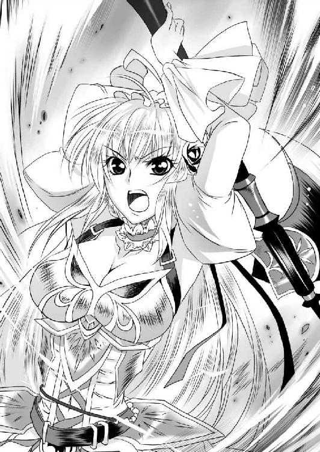
その豪快さに、兵士たちから歓声が上がる。
「やるな」
ロクトが称賛すると、エリザベートはにこりともせずに応じる。
「いちいち称賛は無用です。いまは一刻を争いましょう」
確かに、この戦に長期戦はない。
氷点下の世界での戦いだ。みなの体力がそう長いこと続くとは思えない。
魔法で暖をとるには限界があり、そうそう留まれるような世界ではなかった。
下手に敗退すると、この凍てつく白砂の砂漠で全滅ということになりかねない。
せっかく敵が、あり得ないような無様さで混乱してくれているのだ。体勢を立て直す余裕を与えてはならない。また、いたずらに時間を費やすと、敵の増援が来る可能性がある。
「雑魚に構っていても仕方がない。本丸を陥すぞ」
だいたい大将というのは、中央の高い塔にいると相場が決まっている。
なぜなら、高いところにいたほうが、戦局を把握しやすいからだ。
ロクトが先陣となって敵兵をなぎ倒しながら、駆け上がる。その後ろを、戦女神と化したエリザベート、弓を持ったヴェル、剣を持ったレイニーが続く。
快進撃は、本丸に入って、階段を駆け上がろうとしたところで止まった。
「ちっ、さすがに本丸の守りは固いか」
階段の上には大盾がいくつも並べられ、間から長槍が突き出され、頭上から矢の雨が降る。
ロクトは、大力の野郎たちと共に大盾を持って接近を試みた。
「うおおおおおおぉぉぉぉぉ！！！」
盾同士がぶつかっての力比べとなった。
いくらロクトたちが力自慢でも、上にいるほうがどうしても有利だ。押しきれない。
ビュッ！ ビュッ！ ビュッ！
背後からのヴェルの矢が階段の上の兵士を連続して射抜くが、その程度では崩れない。
そんな一進一退の中、不意にレイニーは横の壁を軽業師のように駆け上がり、そのまま敵陣に飛び込んだ。
「うわ、突破されたぞ」
もちろん、人間が垂直の壁を駆け上がるなどというのは、魔法の補助があってこその芸当だ。
敵陣に一人乗り込んだレイニーは、剣を縦横に振るった。普段はおとなしい執事とはいえ、彼女も、生まれた時からロックス党の一員である。並の戦士以上の使い手だ。
とはいえ、たった一人でそうそう戦えるものではない。
「よし、いまだ、いくぞ！」
愛人の作った隙を逃さずロクトは、自ら大盾を持ち、力任せに敵のバリケードを突破した。
そして、階段を駆け上がった時である。
「旦那様っ!?」
注意を喚起したエリザベートが、手斧を投げる。
グルングルングルン、ドス！
ロクトを横から刺そうとした兵士の、二の腕に刺さる。
「うわわわ」
悲鳴を上げる兵士の首を、ロクトの戦斧が薙ぎ払う。
こうして、敵の最終防衛ラインは突破された。
ロクトに続いた兵士たちが、その場にいた敵兵を掃討していく。レイニーも無事、救出された。
騒然たる中、朗々たる声が室内に響きわたった。
「フルセン国王エルフィン。さすがに若くして世に聞こえた梟雄だな」
憎々しげに語りながら進み出たのは、鉄槍を持った大男であった。
年のころは四十代半ば、口髭を蓄えた豪傑然とした彼は、大勢の敵に囲まれながら呵々大笑する。
「先の敗戦で塞ぎ込んでいるとの情報を流し、このような奇襲を企むとは、まんまと嵌められたわ」
それはいささか過大評価なのだが、ロクトはあえて改めなかった。
「我らが国王陛下は、いずれ大陸を征服する男だぜ。並の王様とは器が違う」
「言いおるわ」
そう吐き捨てた人物の顔を見て、ロクトは驚いた。
「いまのエバーグリーンの城将はあんただったか。ヒュンケル将軍っ!?」
ヒュンケルは、フレイア王国を代表する豪傑将軍で、エバーグリーン表の戦いでは、ロクトと直接刃を交えている。
それが再び、あいまみえるとは、奇しき因縁というべきだろう。
「ん？ 誰かと思えば、あの時の小僧か」
ヒュンケルもまた、ロクトの顔を覚えていたようである。驚いた顔をした。
「ロックス党が当主ロクトだ」
「あのロックス将軍の跡取りか。なるほど無謀さは父譲りか」
「ああ、我らがロックス党は暴勇こそ誉れよ」
傲然と胸を張るロクトに、ヒュンケルは槍を構えた。
「小僧、先日の続きをいたそうか？」
「ああ」
悠然と頷いたロクトは、長柄の戦斧を構えた。
もはや勝敗は完全に決まっている。
ここで大将同士が一騎打ちをする必要など、どこにもない。
しかし、ロックス党の人々は、誰一人止めなかった。全員が、己が大将の勝利を疑っていないためだ。
フレイア軍を代表する豪傑将軍と、フルセン軍を代表する豪傑将軍が、武器を持って対峙する。
一撃を繰り出す前に、ロクトは口を開いた。
「俺はお前の汚い首になど興味はない。降伏するなら、フルセン王国でしかるべき待遇ができるよう口添えするぞ。また、退去するというなら、見逃してやってもいい」
「無用な気遣いだ」
「そうか。なら仕方ないな」
ロクトは無理強いをしなかった。
確かに敵将に降ってもらえれば、それに付属する組織も付いてくるわけであり、なにかと便利なのだが、正直、ここで降られたら興醒めだ。
戦斧を握り直したロクトは、躍り上がるように斬り込む。
「いざ、参る」
「おう、親父のところに送ってやる」
唸りを上げて振り下ろされた戦斧を、重々しく鉄槍の柄が受ける。
ガツン！ ガツン！ ガツン！
鍛えられた鉄と鉄がぶつかりあい、火花が滝のように散った。
一撃ごとにヒュンケルの攻撃は力を失う。二十合もした時には、完全に一方的な展開となった。
バシュッ！
鉄槍を横に弾いた戦斧が、左腕を斬り飛ばした。バランスを失ったヒュンケルはそのまま仰向けに倒れた。
「はぁ......、はぁ......、はぁ......見事だ」
荒い呼吸をしている敵将を見下ろし、ロクトは声をかけた。
「仕えた主が悪かったな」
フレイア国王マドアスは、甥リュシアンに逃げられたことによって、完全に求心力を失ってしまったようだ。
最前線の城なのに、こうも兵士たちが弱いのは、やはり王家に対する信頼を失っているからだろう。
「マドアス陛下は悪い方ではない」
「そうか......」
おそらくこのヒュンケル将軍と、フレイア国王マドアスは同年代であろう。
譜代の家臣として、いろいろと思い入れがあることは想像に難くない。
「一つ、質問がある。あんたには子供はいるか？」
「......」
族滅させるとでも警戒したのか、ヒュンケルは押し黙った。
「いるなら、俺が面倒見るぜ」
「息子が二人いる。よろしく頼む」
「心得た。安心して往け」
ロクトの宣言にヒュンケルは満足げに目を閉じ、その上に戦斧を振り下ろした。
戦乱の時代。たとえ尊敬できる相手でも、共感を覚えても、戦場で出会えば殺しあわねばならない。
無情ではあるが、その修羅の道こそ、己の道である。
ヒュンケル将軍の御首級を持ったロクトは、バルコニーに出た。
「エバーグリーンが城将ヒュンケルは、ここに討ち取った！」
血の滴る生首をロクトは、よく見えるように高く掲げる。
「勝ったぞぉぉぉぉぉぉぉ！！！」
野獣の如きロクトの雄叫びは、エバーグリーン城内はもとより、フレイア砂漠に響きわたり、フルセン王国にまで響いたかのようであった。
※
「エルフィンからの指示を伝えにきたわ」
エバーグリーン城を占拠したロクトたちのもとに、ただちに国王エルフィンからの使者が派遣された。
使者になったのはカーラ将軍であった。
「ロクトを、同城の城主に任命する」
「承知仕りました」
慎んで拝命したロクトに、カーラは私的な祝福の声をかける。
「おめでとう。これであなたは、名実ともにフルセン王国のナンバーツーよ」
「ああ」
この一戦によって、ロックスの息子ではなく、ロクトとしてその名が知れ渡ることになるだろう。
しかし、そんなことではない、と言いたげにカーラは首を横に振るう。
「あなたが、最前線の城を任されるのは一時的なことよ。近いうちに将の将たる役目を担うことになる」
フルセン王国は一度滅亡しているから、国王エルフィンには極端に親族が少ない。
その数少ない親族である従姉エリザベートを妻にしているのだ。
そのうえ、飛びぬけた軍事的な功績を挙げた以上、別格の待遇を与えられることになるだろう。
その権限は、亡き父をも超えるものになるに違いない。
「じゃ、そういうことで」
仕事は終わったとばかりに退出しようとするカーラを、エリザベートが呼び止めた。
「お待ちくださいカーラ将軍」
「これは、エリザベート様も参加しておられたのですね」
相手は国王の従姉である。礼儀正しく挨拶をしたカーラだったが、エリザベートが鎧を纏っていることを見て取ると、いつもの調子で皮肉を口にする。
「まさか鎧姿を拝見できるとは、結婚式の姿からは想像もできなかったわ。鬼姫という噂は、単なる噂ではなかったということね」
「ええ、わたくしもカーラ将軍のことは聞き及んでおります。なんでも、わたくしの旦那様とも通じておられたとか」
至近距離から据わった目で見られたカーラは、慌てたようにロクトの顔を一瞥した。
（あんた、浮気したこと奥さんに話したの？）
声無き質問に、ロクトは無言で視線を逸らした。
浮気現場をばっちり目撃したヴェルが、洗いざらい報告しているのだろう。
ロクトにはいまさらどうすることもできない。
エリザベートは、カーラに詰め寄る。
「さらにカーラ将軍は、旦那様の上に跨がって激しく腰を使いながら、正室のわたくしよりも、自分とエッチするほうが気持ちいいだろう、とのたまったとか」
「さ、さぁ......そんなこともあったかな？」
普段強気の女でも、妻ある男と知りながら通じて、その妻になじられると、弱いものらしい。
頬を引きつらせている。
そこによせばいいのに、ヴェルが手を上げて進言する。
「はい。わたくし、この耳でしっかり聞きました。その女は大将と浮気しながら、エリザベート様より、自分のほうが女としての魅力的だ、と言っていました」
「とのことですわよ」
「は、はは......、いや、その、なんだ。男と女のベッドの上でのことは」
なんとか言い訳しようとするカーラに、エリザベートは宣言する。
「わたくしにも女としての意地があります。そのような侮りを受けたとあっては捨て置けません。どちらがより旦那様を楽しませることができるか、勝負いたしませんか？」
エリザベートの提案に、カーラは目を剥いた。
そして、皮肉げな笑みを返す。
「そんなに言うなら、あなたの挑戦。受けてあげる」
「さすがは女将軍ですわね」
「でも、はじめっから勝負は見えているけど、いいの？」
カーラの言葉に、エリザベートはうすら笑いを返す。
「正室であるわたくしの勝ちだと？」
「いや、わたしの勝ちよ。男なんてね。いつでもできる自分の妻とやっている時より、浮気相手とのセックスのほうが燃えるに決まっているじゃない」
「わたくしは旦那様の正室。旦那様を楽しませる方法は誰よりも承知しております」
両方とも、根は肉食系の女たちである。
その言葉による斬りあいに、ロクトは心臓の縮まる思いを味わった。
「という仕儀となりましたわ、旦那様。寝室に参りましょう」
「俺の意思とか関係ないんだなぁ」
疲れたようなロクトの呟きに、エリザベートが食いつく。
「あら、色魔人の旦那様がイヤだなどと、言うとは思えませんわ」
「まぁな」
結婚してからも、当たり前に浮気している身としては、反論することができない。
かくして、浮気の代償を支払わされることになったロクトは、いささか尻ごみしながら、女豹と化した女たちの勝負を受けて立つことになった。
※
「まったく、若様の節操のなさにはほとほと呆れました。まさかカーラ将軍とまで通じていたとは......。しかもあのようなことを言われたなどと、奥方様が怒られて当然です」
冬の砂漠の城である。魔法の効果で室内は十分に過ごしやすい環境に整えられたが、使者としてやってきたばかりのカーラは、芯まで冷えていることだろう。
全員、一旦は風呂に入ってから、寝室に再集結することとなった。
セックスは肌を温めてからのほうが楽しめるものだからだ。
最初に寝室に入ったのはロクトだった。女たちは総じて長風呂なものだから仕方がない。
寝台にながまったロクトに、執事のレイニーが苦言を呈する。
「いろいろやんごとない事情があったんだよ。それからもう若様はやめろ。いまは俺がロックス党の当主だぞ」
ロクトの苦言に、レイニーは首を横に振るった。
「わたしにとって若様は若様です。ご当主と申し上げるには、軽率な行動が多すぎます」
「そう怒るな。俺にとって一番大切な女はお前なんだから」
「すぐ、そういうことを言う......あ、や、やめてください」
いつものように抵抗しようとするレイニーを、ロクトは有無を言わさず寝台に引きずり込んだ。
白いワイシャツをはだけさせて、黒いシンプルなブラジャーを引きずり下ろす。
あらわとなった小さな乳房を荒々しく揉みながら、黒いタイトなミニスカートをたくし上げ、パンストを引きずり下ろして、剥きだしの股間を掴む。
「い、いきなり、そこに指を入れるのは、あ、あぁぁぁ！！！」
男に荒っぽく扱われることに慣れてしまっている女は、いきなり膣穴に指を三本もぶち込まれて、掻き混ぜられると、たちまち理性を失ってしまった。
そこにヴェルの甲高い声が浴びせられる。
「あ、また浮気している！」
驚いて振り返ると、そこにいたのはヴェルだけではなかった。
いつの間にか、エリザベートとカーラも準備を整えてやってきている。
「旦那様、これからわたくしとカーラ将軍が、女の意地をかけてご奉仕して差し上げようというのに、何をやっておられるのですか」
エリザベートの、冬のフレイア砂漠に匹敵するほどの冷たい怒りの波動に、ロクトは震え上がる。
「いや、これはその......前菜。そう前菜だ」
ロクトの自分でもわけがわからない言い訳を聞いて、レイニーは落ち込む。
「はい。わたし、所詮は前菜。メインディッシュは奥方様です」
「あ～、もう。とにかくお前らも来い。全員、まとめて面倒見てやる」
ロクトのやけっぱちの宣言に、カーラが呆れる。
「ほんと野獣ね。女なんて性欲の捌け口としか考えてない最低男」
「あん、旦那様ったら、男らしい♪」
エリザベートの言葉に、カーラは本気で引いた顔をする。
「うわ、アバタもエクボとはよく言ったものね。男に溺れた女って、こうなっちゃうんだ」
「さぁ、勝負ですわ」
エリザベートはその場でバスローブを脱ぎ捨てる。中には下着もつけておらず、一糸纏わぬ裸体があらわとなる。
大きな乳房に、くびれた腹部、そして、張り出した尻。まさに女性美としての極致がそこにあった。
そして、ロクトの胸へと飛び込んでいく。
「あら、どうしましたの、カーラ将軍。怖気づきまして？」
エリザベートの挑発に、カーラは灰褐色の頭髪をかき乱す。
「ああ、もういいわ。ここまできて、そいつのデカチン味わわずに帰ったら、欲求不満で死にそうだもんね」
カーラもまたバスローブを脱ぎ捨てた。
スレンダーで手足が長いのに、乳房は十分に張った女体である。
一応、灰色のお洒落なショーツが一枚穿かれていたが、それに手をかけたカーラは、透明な糸を引かせながら、脱ぎ捨てる。
「それじゃ、いくわよ。奥方じゃ満足できないようにしてあげるわ」
そう嘯いてベッドに飛び乗ったカーラもまた、ロクトの胸に飛び込んできた。
ベッドに腰を下ろしたロクトの左からエリザベート、右からカーラが抱きつき、自らの豊かな乳房を、男の胸板に押しつけてくる。
「おっと、お前ら、俺をそう安い男だと思うなよ」
自棄を起こしたロクトは、さらにその場にいた二人の女にも声をかける。
「ヴェルとレイニーも来い」
「えっ!? でも」
「こうなれば、二人も三人も四人も同じだ」
ロクトの発言に、エリザベートとカーラの目が妖しく輝く。
「こういう、思い上がった女の敵は、一度、女で痛い目に遭っておくべきね。徹底的に絞り取って、しばらく勃たないようにしてあげる」
「ええ、まったく同感ですわ」
あれだけ反目しあっていたカーラと、エリザベートが意気投合したようである。
「さぁ、ヴェルいらっしゃい。レイニーも。今夜はみんなで旦那様から最後の一滴まで絞り取りますわよ」
やばい。なんか地雷踏んだ。といまさらながらロクトは慌てたが、後の祭りである。
「しーらないんだ。エリザベート様は、やると言ったら、本当にやるからね」
主の命令を受けたヴェルは、いそいそと服を脱ぐ。
小柄な体躯だが、健康的にプリプリとした女体があらわとなる。
寝台に乗ったヴェルを、ロクトは左腕で抱き寄せた。
「レイニー、お前も早く来い」
ロクトの後ろにいた、忠実な女執事は遠慮する。
「いや、わたしはそのような華やかな席が似合う女ではありませんから......」
「いいから服を脱いで来い！」
ロクトに強く命じられると、レイニーはいつものようにしぶしぶ従う。
執事服からは、痩身長躯の女体があらわとなる。乳房は限りなく平らであり、ズンドウ体型だ。
一般的な女性美という概念からいえば、いささか外れているが、これはこれで魅力がある。
裸身に眼鏡だけ残したレイニーは、ロクトの右側に跪いた。
「よし、お前ら全員まとめて面倒見てやる。そして全員、明日は足腰立たなくしてやるからな」
寝台の中央で胡坐をかいたロクトの左からヴェル、エリザベート、カーラ、レイニーが並んだ。
四人まとめて両腕で抱きしめたロクトは、まずは女たちの唇を順番に奪った。
エリザベートの薔薇のような唇、カーラのしっとりとした唇、ヴェルのぷるりんっとした小さな唇、レイニーの薄い唇。
四者四様の唇を交互に味わう。
ロクトのやりように、女たちは呆れたようだが、そのうちに面白がって、それぞれに工夫をしてくる。
「う、うむ」
自分よりも他の女と長く接吻している、と思うと面白くないのだろう。女たちは競って積極的に男の唇を吸い、舌を伸ばしてきた。
「うむ、うむむむ......」
さすがに四人の唇を同時に吸うことには無理があったが、女たちの頬が合わさると、四人の唇を一つの唇に見立てたロクトは、右から左、左から右と豪快に舐め回した。
そうやって四人の唇を思う存分に陵辱したところで、ロクトは命じる。
「お前ら、膝立ちになりな」
ロクトの意図を察した女たちは、一瞬、みな他の三人の様子を見たが、もはや毒を食らわば皿までという心境なのだろう。
素直に膝立ちになった。
胡坐をかくロクトの鼻先に、大きいのから小さいのまで、合計八つの乳房が並んだ。
乳房の大きさは、エリザベート、カーラ、ヴェル、レイニーの順番だ。乳首の大きさも、それに準じた。
エリザベートは艶やかな赤、カーラはピンク、ヴェルは茶色で、レイニーは小粒で黒っぽい。
色や形は違えども、男を惑わすには十分な魅力がある女の女たる器官。それを前に鼻息を荒くしたロクトは、夢中になって顔を埋めると、乳首を吸いまくった。
さながら乳首の踊り食いといったところだ。
豪快に乳首を舐めしゃぶられた女たちの乳首は、どんどんと尖り、勃起してくる。と、同時に女たちの呼吸も荒くなっていく。
「はぁ、はぁ......まったく、どうしてここまでおっぱいに執着できるのかね。男ってのは」
カーラの声に、エリザベートが答える。
「うふふ、この男の可愛さがわからないなんて、所詮、女の歓びを知らない女ですね」
「うわ、ムカつく女......あん♪」
口でなんだかんだ言っても、感じていることは、その乳首が物語っている。
合計八つの乳首を、一つの口でしゃぶり回すのは、限界があり、ロクトはさらに両手を使って、夢中になって女たちの乳首を扱きまくった。
「ああ、あん、ああ......」
さすがに絶頂まではいかないが、乳首を弄り倒された女たちの喘ぎ声がだいぶ大きくなってきた。
四人とも膝立ちのまま、内腿を擦りあわせている。
それと見て取ったロクトは、さらなる指示を出す。
「お前ら、その場で立ちな」
次にロクトがしようとしていることを、察することのできた女たちは、またも他の三人の顔色を窺ったが、逡巡は一瞬だった。
四人とも、一言もなく素直に立ち上がる。
ロクトの鼻先に今度は、女たちの股間がきた。
四人とも足が長い。腰の位置が高いのは、レイニー、エリザベート、カーラ、ヴェルという順番だ。
エリザベートの股間では白金色の陰毛が、ふっさりと茂り、レイニーの股間には縮れた黒い陰毛、カーラの銀灰色の陰毛は左右がカットされて整えられている。ヴェルのオレンジ色の陰毛は本数がかなり少ない。
四者四様の陰毛に彩られた女性器だが、いずれも無様に濡れている、という点では同じであった。
ちなみに一番濡れが酷いのは、エリザベートだった。
（こいつ、ほんと、お上品なのは表面だけで、中身はど淫乱なんだなぁ）
淫乱な女が嫌かと聞かれれば逆で、もちろん、大好きだ、と答えるロクトである。
「お前ら、オマ○コを自分で開いてみせな」
ロクトの命令に、エリザベートが情けない声で答える。
「そんな、そんなところまで見比べるのですか？」
「ああ、グダグダ言わずに、とっとと開きな。開かない女は舐めてやらないぞ」
ロクトの横暴な命令に、エリザベートは鼻を啜り上げながら応じる。
「旦那様の意地悪」
男にクンニされる歓びを知ってしまっているエリザベートは、泣きそうになりながらも、自らの右手を股間に下ろすと、人差し指と中指を肉裂の左右に添えて開く。
トロトロトロトロ......。
中に溜まっていた女蜜が、糸を引きながら滴り落ちる。
「まったく、こんな遊びに付き合うなんて、あたしも人がいいわ」
ブツクサ言いながらも、カーラも同じように右手を下ろして、陰唇を開いた。
「エリザベート様がやられるなら、ボクも」
「若様の命令ならば......」
ヴェルと、レイニーもまた従った。
愛液の蜜が滝のように滴り、ロクトの顔の周りが強烈な牝臭に包まれる。
エリザベートの陰唇は鮮やかな赤であり、そのさまは赤貝を連想させた。さすがは海育ちの女と納得させられる。
カーラの陰唇は、サーモンピンク。ふわふわにふやけている感じだ。
ヴェルの陰唇は、白っぽいピンク。姫貝を連想させる。
レイニーの陰唇は、他の三人に比べると小陰唇が大きくて灰色がかっており、使い込んだ、と見る者を納得させた。
「どれも美味しそうだ」
舌舐めずりをしたロクトは、目の前の蜜の滴る陰唇に、交互にしゃぶりついた。
「ああ、ああん、はぁ～ん」
女たちの嬌声を聞きながら、四つの女の股に、交互に顔を突っ込み、陰唇の味比べをする。
（普段は違いなんてわからないが、こうやって比べると違うもんだ。ヴェルのオマ○コが一番、匂うな）
若いからか、濃縮という感じがする。逆にレイニーの陰唇からはほとんど匂いがしなかった。
とはいえ、四人の股の間へ交互に顔を突っ込んでいると、そのうち匂いも味も関係なくなってしまう。
「はぁ、はぁ、はぁ～、もうダメぇぇぇ......」
最初に悲鳴を上げて、その場に崩れ落ちたのは、ヴェルであった。次いでエリザベート、カーラの順で膝を崩し、レイニーは最後までなんとか立っていた。
そのレイニーにも、身ぶりで座るように命じてから、ロクトは口を開く。
「さて、そろそろちんぽをぶち込んでやるから、そこに四人並んで、尻を突き出しな」
ロクトの指示に従って、四匹の牝は並んで四つん這いになり、尻を差し出してきた。
「まったく、浅ましい女たちだな」
四つ並んだ女尻を撫で回しながらロクトは嘯く。
（こうやってみると、なかなか壮観だな）
ロクトの左からヴェル、エリザベート、カーラ、レイニーの尻が並んでいる。
体型が違う四人は、尻の形もまた違った。
ヴェルは小さく引き締まったプリケツ。
エリザベートはどっしりとした安産型。
カーラはむっちりと肉付きのいいハート型。
レイニーは肉付きの少ない小尻。骨盤が狭く、尖ったような形である。
別にどれが優れていると格付けをするつもりはない。いずれも魅惑的な女尻である。
思わず魅せられているロクトに、エリザベートは尻を震わせながら訴える。
「早く、入れてください」
「そう焦るなよ」
ロクトの逸物ももはや我慢の限界である。早く女たちの中に入りたいと、訴えてくるような逸物を、一番左のヴェルの濡れた陰唇にそっと添えた。
しかし、入れることはしない。亀頭部に愛液をぬたくっただけで隣のエリザベートの膣穴に移る。
ここでも入口で遊んだだけで、愛液の糸を引かせながら、カーラの膣穴に移り、そして、レイニーに移る。
そうやって女たちの膣穴を浅くえぐってやっていると、女たちは欲求不満から狂ったように尻を高く掲げて振りだした。
「早く、早く、奥まで、ずぼっと奥までお願いします」
とエリザベートが懇願すれば、負けじとヴェルも懇願する。
「ボクももう我慢できない。お願い奥まで」
そんな主従を横目に見ながら、カーラは腰を高く掲げる。
「今日、思いっきり楽しまないと、次いつわたしとできるかわからないわよ。もしかしたら、今日が最後かも」
確かにいつでもできる妻よりは、もしかしたら最後になるかもしれない女のほうに興味が出てしまうのは仕方ないだろう。
「おほほっ、さすがは、女将軍ともなりますと、知恵が回りますわね」
思わずエリザベートは、右隣のカーラを睨みつける。
最初に入れてもらおうと競いあう、浅ましい女たちの欲求に応えて、ロクトはズボリと逸物を奥まで押し入れた。
「あん♪」
子宮口を押された女は歓喜の悲鳴を上げて、のけぞるが、ロクトは一突きで隣に移る。
（オマ○コの中身の形も違うもんだ）
エリザベートは中にウニでも隠しているかのようにザラザラでグネグネ。カーラはブツブツのザラザラ。ヴェルは全体に狭く襞も多い。レイニーはキュッキュッと締め上げてくる。
四者四様の蜜壺の犯し心地を存分に堪能していると、エリザベートが泣きだした。
「あぁ、こんな犬みたいな姿勢でやられるだなんて、屈辱的です。しかし、旦那様にやられているのだと思うと、気持ちいい」
「うわ、あんた自分のお嫁さんを、完全に調教したわね」
カーラは呆れ顔である。
こうやって女を四人並べて交互に犯していると、女として互いを意識しているからか、喘ぎ声をドンドン大きくしていく。
「もうダメ、我慢できない。イかせて、イかせて頂戴」
欲求不満の女たちは、恥も外聞も理性も、女としての恥じらいも捨てて、浅ましく尻を掲げてくる。
パクパクしている膣穴がなんとも哀れだ。
「仕方ないな。それじゃまずはカーラからだ」
「えええぇぇぇ！！！」
ロクトの宣言に、他の女たちから不満の声が上がった。しかし、いかに自慢の逸物とはいえ、一本しかないのだから、こればかりはどうにもならない。
「少し待っていろ。必ず全員満足させるから」
そう力強く宣言したロクトは、まずはカーラを落とすべく、腰の動きを速めた。
ドスン！ ドスン！ ドスン！
四つん這いのカーラを背後から、破城槌でも打ち込むように、最深部まで叩き込む。
「ひぃ、ひぃ、だ、ダメ、わたし、これやられると、ひぃぃぃぃ」
どうやら、以前、ロクトとやった時、えいえいと終わりなく子宮口を打ち抜かれ、何度も失禁を繰り返しながら、屈辱の連続絶頂させられた体験を思い出したようだ。
カーラの目からは涙が溢れ、だらしなく開いた口元からは涎が溢れる。
そんなたちまち追い詰められたカーラに、エリザベートが声をかける。
「いかがかしら？ わたくしの旦那様のおちんぽ」
「で、でかい。あたし、デカチンに興味はないんだけど......やっぱり、この充実感は凄い。オマ○コが広がっちゃう♪」
カーラの感想を、エリザベートは満足げに頷く。
「わたくしの旦那様のお大事は、世界一ですわ」
「世界一は、美少年の童貞チンポよ。こんな棍棒みたいにでっかくて汚いチンポ、邪道よ！ あぁ、邪道だけど、苦しいけど......気持ちいい」
好みと対極にある逸物に追い詰められていくカーラの姿に、エリザベートは嫣然と笑う。
「うふふ、いい年していまだに結婚もできない女は、おちんちんに飢えていますのね。ほんと浅ましいですわ。特別の好意でわたくしの旦那様の特上おちんぽを味わわせてあげているんですからね」
「らめ、らめ、らめ、いく、いく、いく、またいく」
いかに小馬鹿にされようと、いまのカーラには反論することはできない。
完全にちんぽの奴隷状態だ。ザラザラの襞肉にギューギュー締められたロクトは、雄叫びを上げた。
「そろそろ、いくぞぉぉぉ！！！」
「ひぃ、ひぃぃぃぃ」
ドクンッ！ ドクンッ！ ドクンッ！
膣内射精される女の歓びに、気高き女将軍は悶絶する。
しかも、ロクトは射精しながらも、腰を動かし続けた。そうして、動いているうちに一度は力を失った逸物が再び復活する。
大きくなったところで、カーラの膣穴から引き抜いた。
「あ、ああ......」
精根尽きたといった様子でシーツに顔を埋めたカーラの高く掲げられた尻からは、ドブドブと白濁液が逆流した。
「さて、次は」
残りの三人に目をやると、レイニーは首を横に振るった。
「わ、わたしは別に......他の方を優先してください」
どこまでも奥ゆかしい女である。
「こういう祭りの時に変な遠慮は無用なんだがなぁ......」
「それでは、次はヴェルでよろしいですわ」
エリザベートの提案に、ヴェルは驚く。
「え、ボク!? ボクでいいんですか!?」
「ええ、ヴェルにはいつもよく働いてもらっているし、今回も頑張ったからご褒美よ」
「ありがとうございます」
女主人の言葉に、ヴェルは頬を上気させて感激する。
「それじゃ、ヴェル。いくぞ」
ロクトはヴェルの右足を抱え上げると、左足の太腿を跨ぎ、他の女の体液で汚れた逸物をぶち込んだ。
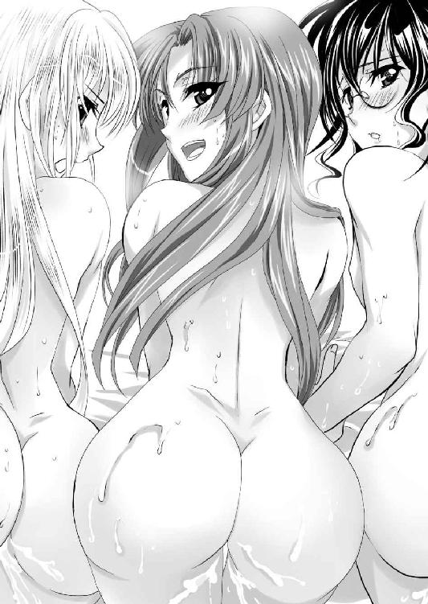
いわゆる横位での挿入である。
「ひぃあ」
ヴェルは仔猫のような悲鳴を上げて、背筋を反らせる。
ズコズコと腰を動かしながら、ロクトは不意にかねてから疑問だったことを質問した。
「ヴェル、お前も付き合いのいい女だよな。エリザベートに利用されて、俺に貞操を奪われたのに怒ったりしないのか？」
「だって、ボク、エリザベート様好きだもん」
過去に何があったか知らないが、彼女の忠誠心は、もはやレズビアン的な境地に達していそうである。
しかし、エリザベートが女である以上、その夫であるロクトで代用している、ということなのかもしれない。
ロクトは腰の動きを加速した。
「あん、あん、あん、いい、気持ちいい」
ヴェルの仔猫のように悶えるさまに興奮したロクトは、襞が豊富で、狭い膣内で思いきり動いた。
「ヴェル、いくぞ」
雄叫びを上げたロクトは、再び射精した。
「うん、うん、うん、あああああああ」
膣内射精されたヴェルは強制的に絶頂した。
そして、ここでもロクトは、射精しても動きを止めず、逸物が復活したところで引き抜く。
その姿に満足げに頷いたエリザベートは、レイニーに声をかける。
「次はあなたでいいわ」
「しかし、わたしは別に......」
「遠慮は不要よ。わたくしは正室なのですから、がっついたりしないわ」
正室としての余裕を見せるエリザベートの言に従ったロクトは、今度はレイニーの左足を抱え上げて膣内に押し込んだ。
「あ、はぁ～ん」
ロクトからすればもっとも犯し馴染んだ膣洞である。
もう隅々まですっかりロクト好みに開発されたこの女体は、感じさせるのも、イかせるのも思いのままである。
「レイニー、お前は俺の生涯のパートナーだ。これからも頼むぞ」
「はい、若様のために働きますぅぅぅ」
健気すぎる女に、ロクトは報いてやることにした。
「それじゃ、お前の中にも放ってやる」
「いえ、無理をなさらずとも、わたしには気遣いは無用です」
「いや、俺が出したいんだよ」
そう宣言したロクトは、レイニーの膣内で三度目の射精をした。
「ひぃああ～～～、イクゥゥゥゥ......」
細身の身体を痙攣させるレイニーの中でも、再勃起するまで留まってから、ロクトは逸物を引き抜いた。
なお悠然とそそり立つその雄姿に、エリザベートは感嘆の声を上げる。
「うふふ、わたくしの旦那様のおちんちんは、ほんと惚れ惚れするほど絶倫ですわね」
「それでは、エリザベート。お前で最後だ。派手にいくぞ」
ロクトはその膂力にモノを言わせて、エリザベートを抱え上げると、背を向けさせ、両膝の裏を抱えてＭ字開脚とした。その状態で結合する。
背面の立位。並の男では絶対にできない。圧倒的な膂力があって初めて可能な、力技である。
この不安定な姿勢に、さすがのエリザベートも悲鳴を上げた。
「こ、こんな姿、恥ずかしすぎるぅ......」
結合部を掲げられて晒すという恥じらいを知る女には耐えられない姿勢であろうが、恥じらいゆえにいつも以上に感じてしまったようだ。
男女の結合部からは、タラタラと滝のような液体が垂れ流される。
「あっ、凄い、恥ずかしい、ああ、でも、気持ちいい、あっ、あっ、あっ......」
我を忘れて悶絶するエリザベートの前に、カーラが立ち上がった。
「うわ、これがデカチンに慣れちゃった人妻の顔か」
「ああ、見ないで」
俗にいうアヘ顔を、同性に間近から見られる屈辱に、エリザベートは顔を背ける。
しかし、カーラはそれでは許さない。
両手を伸ばすと、見事な球形を描いたエリザベートの乳房を鷲掴みにし、その頂をしゃぶりだした。
「ああ、エリザベート様のオマ○コ。大将のぶっといチンポ咥えている。素敵」
カーラの股の間から潜り込んだヴェルは、男女の結合部を、ペロペロと舐めだした。
「あ、こらヴェル。そ、そんなこと......やめなさい、ひぃあ」
悶絶するエリザベートの姿を可愛いと思いながら、激しく突き上げていたロクトにも思わぬ刺激がきた。
尻肉を割られて、肛門を舐められたのだ。
「うわ」
「若はすでに三発も出されているのですから、これくらいいたしませんと」
そう言いながらロクトの尻の穴を舐め穿っているのは、レイニーであった。
「くっ」
思い掛けない刺激にエリザベートを取り落としそうになったロクトは、なんとか踏ん張り直して、頑張る。
「あん、あん、あん、あん」
気持ちよさそうに喘ぐエリザベートの姿に、カーラは呆れる。
「圧倒的な牡に征服されるのって、これはこれで女の幸せなのかも、ね。少し羨ましくなるわ。......まったく、わたしの周りのいい男って、どいつもこいつも売約済みなのよね。やっぱ、いい男は、他の女の手垢に塗れる前に、自分で育てるしかないか」
なにやら口の中でもごもご言っているカーラとは別に、ロクトもまた限界を迎えた。
「そろそろ出すぞ」
「はい。いっぱい、いっぱい、お願いしまぁ～す♪」
もはや完全に理性を失っているエリザベートの耳元で、ロクトは不意に囁いた。
「ドサクサ紛れだから言っちまうけどな。お前と結婚できてよかった」
「えっ!?」
硬直しているエリザベートの耳元で、さらにロクトは囁いた。
「愛しているぞ」
「こ、こんな時にいきなり......ああ、でも嬉しい♪」
歓喜したエリザベートの膣穴がキュンキュンと痙攣する。
その刺激に包まれたロクトは、四度目の射精を行った。
ドビュュュュュュュュ！！！
「ああ、どくんどくん、どくんどくん、あああ～～～」
歓喜の悲鳴を上げるエリザベートを抱えたまま、ロクトはその場で腰を落とす。
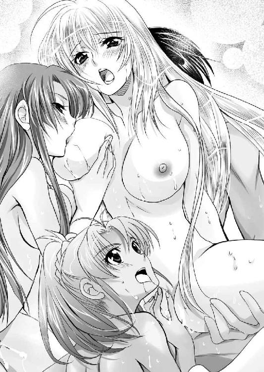
その周りに、カーラ、レイニー、ヴェルの三人が取りつく。
「大将、これで終わりなんてことはありませんよね」
ヴェルが陽気に挑発してくる。
「そうそう、あんたとセックスする楽しみは、この特大な絶倫チンポをしゃぶりつくすことにあるんだから。一発だけでなんかじゃ、満足して帰れないわよ」
カーラの言葉に追い詰められたロクトは、レイニーの顔を見る。
しかし、いつも絶対の味方であるはずの女も、今夜は厳しかった。
「だれかれ構わず女に手を出す。若様の自業自得です」
ロクトはその後、精根尽き果てるまで、頑張らされることになる。
※
フルセン王国エバーグリーン城を攻略する。
しかし、これはより困難な戦いの幕開けに過ぎないことを、当事者たちの誰もが予想していた。
主人公の妹がやたらと出しゃばっている。こいつはどの作品でもヒロインをしていません。でも、この存在感。彼女に春は訪れるのだろうか？
http://www5d.biglobe.ne.jp/~takeuti/
ハーレムシリーズは以前デザインさせていただいた子の名前が出たり、再登場があったりするのが新しいお話での密かな楽しみだったりします。今回も、○○○さんが！詳しくは本編へ三( ^o^)→
二次元ドリーム文庫
ハーレムウォーリア
著者 竹内けん
装丁 マイクロハウス
発行 株式会社キルタイムコミュニケーション
〒１０４-００４１ 東京都中央区新富１-３-７ヨドコウビル１Ｆ
著作権 ©Ken Takeuti 2013
当ファイルは、二次元ドリーム文庫『ハーレムウォーリア』（２０１３年２月23日 初版発行）に基づいて作成しております。
※本作品の全部あるいは一部を無断で複製・転載・配信・送信したり、ホームページ上に転載することを禁止します。本作品の内容を無断で改変、改ざん等行うことも禁止します。また、有償・無償にかかわらず本作品を第三者に譲渡することはできません。